CSSE1001/7030 Notes
What’s all this then, Amen!
– Monty Python
Introduction to Software Engineering and Programming
What is Software Engineering?
Software Engineering is the application of a systematic, disciplined, quantifiable approach to the development, operation, and maintenance of software (IEEE std 610.12-1990). A software engineer must have a good understanding of tools and techniques for requirements gathering, specification, design, implementation, testing and maintenance.
These days, software systems are often very large and many contain key safety or mission-critical components. The complexity of modern software systems require the application of good software engineering principles. Indeed, many agencies mandate the use of particular tools and techniques to achieve very high quality and reliable software.
This course introduces some of the key principles of software engineering and gives you the chance to put them into practice by using the programming language Python. While you’ll learn lots of Python in this course, it is equally important that you learn some common programming principles and techniques so that learning the next language is not as daunting.
What is Python?
Python is a powerful, yet simple to use high-level programming language. Python was designed and written by Guido van Rossum and named in honour of Monty Python’s Flying Circus. The idea being that programming in Python should be fun! The quotes in these notes all come from Monty Python and it has become somewhat of a tradition to reference Monty Python when writing Python tutorials.
What is Software?
Software (a computer program) is a set of instructions that tell the computer (hardware) what to do. All computer programs are written in some kind of programming language, which allows us to precisely tell the computer what we want to do with it.
Features of a Programming Language
There are many programming languages but they all have some things in common.
Syntax and Semantics
Firstly, each program language has a well defined syntax. The syntax of a language describes the well-formed ‘sentences’ of the language. Syntax tells us how to write the instructions: what is the order of the words, how our program must be structured, etc. It’s a bit like grammar and sentence rules when we write in English.
When we write a sentence in English, we may mess up the grammar and still be understood by the reader (or, the reader may ask us what we mean). On the other hand, if we mess up the syntax when we write a computer program, the computer is not as forgiving - it will usually respond by throwing up an error message and exit. So it is fundamentally important that we understand the syntax of a programming language.
Secondly, each self-contained piece of valid syntax has well defined semantics (meaning). For programming languages, it is vitally important that there are no ambiguities - i.e. a valid piece of syntax has only one meaning.
High- and Low- Level Languages
Programming languages are typically divided into high-level and low-level languages.
Low-level languages (like assembler) are ‘close’ to the hardware in the sense that little translation is required to execute programs on the hardware. Programs written in such languages are very verbose; making it difficult for humans to write and equally importantly, difficult to read and understand!
On the other hand, high-level languages are much more human-friendly. The code is more compact and easier to understand. The downside is that more translation is required in order to execute the program.
Compiled and Interpreted Languages
Before we can run our program, we need to type out the list of instructions (called our source code or just code) that outlines what our program does when we want to run it later. So how does our source code then turn into a running program? This depends on whether the programming language we have written the source code in is either a Compiled or Interpreted language.
Compiled languages come with a special program called a compiler which takes source code written by a user and translates it into object code. Object code is a sequence of very low-level instructions that are executed when the program runs. Once a user’s program has been compiled, it can be run repeatedly, simply by executing the object code. Examples of compiled languages include Java, Visual Basic and C.
Interpreted languages come with a special program called an interpreter which takes source code written by the user, determines the semantics of the source code (interprets it) and executes the semantics. This is typically done in a step-by-step fashion, repeatedly taking the next semantic unit and executing it. Examples of interpreted languages include Python, Ruby and Lisp.
Both compilers and interpreters need to understand the semantics of the language - the compiler uses the semantics for the translation to object code; the interpreter uses the semantics for direct execution. Consequently, a program in a compiled language executes faster than the equivalent program in an interpreted language but has the overhead of the compilation phase (i.e. we need to compile our program first before we can run it, which can take a while if the program is very big). If we make a change in our code with a compiled language, we need to recompile the entire program before we can test out our new changes.
One advantage for an interpreted language is the relatively quick turn-around time for program development. Individual components of a large program can be written, tested and debugged without the overhead of compiling a complete program. Interpreters also encourage experimentation, particularly when starting out - just enter an expression into the interpreter and see what happens.
Python is an interpreted language - it has an interpreter. The python interpreter is a typical read-eval-print loop interpreter. In other words, it repeatedly reads expressions input by the user, evaluates the expressions and prints out the result.
Data Types
Another important issue when considering programming languages is the way the language deals with types. Types are used by programming languages (and users) to distinguish between “apples and oranges”. At the lowest level all data stored in the computer are simply sequences of 1’s and 0’s. What is the meaning of a given sequence of 1’s and 0’s? Does it represent an “apple” or an “orange”? In order to determine the intended meaning of such a sequence, it has a type associated it. The type is used to determine the meaning of the 1’s and 0’s and to determine what operations are valid for that data. Programming languages come with built-in types such as integers (whole numbers) and strings (sequences of characters). They also allow users to define their own types.
Programming languages implement type checking in order to ensure the consistency of types in our code. This stops us from doing silly things like trying to add a number to a word, or trying to store an “apple” in a memory location which should only contain an “orange”.
Programming languages are typically either statically typed or dynamically typed languages. When using a statically typed language, checks for the consistency of types are done ‘up-front’, typically by the compiler and any inconsistencies are reported to the user as type errors at compile time (i.e. while the compiler is compiling the program). When using a dynamically typed language, checks for type errors are carried out at run time (i.e. while the user is running the program).
There is a connection between whether the language is compiled or interpreted and whether the language is statically or dynamically typed; many statically typed languages are compiled, and many dynamically typed languages are interpreted. Statically typed languages are usually preferred for large-scale development because there is better control over one source of ‘bugs’: type errors. (But remember, just because the program has no type errors doesn’t make it correct! This is just one kind of bug that our program must not have to run properly.) On the other hand, dynamically typed languages tend to provide a gentler introduction to types and programs tend to be simpler. Python is dynamically typed.
Notes Formatting
In the remainder of the notes we will use different boxes to indicate different parts of the content. These may appear in the readings or separately on Blackboard. Below are examples.
Information
Detailed information will appear in boxes similar to this one, such as the syntax and semantics of Python code presented in the notes, and summaries of the content. Understanding the concepts presented here will assist you in writing programs.
Aside
Further information will appear in these boxes. These asides go beyond the course content, but you may find them interesting. You can safely ignore them, but they will often demonstrate several powerful features of Python, and they may be a useful challenge for some students.
Extra examples
In the remainder of the notes we sometimes give more detailed examples. These extra examples are delimited from the main text by these boxes. You may find them useful.
Visualizations
These boxes contain visualizations of Python code. You might find that these visualizations aid in your understanding of how Python works. You can visualize your own code by going to the Python Tutor Visualisation Tool at http://pythontutor.com/visualize.html. The home page for Python Tutor is at http://www.pythontutor.com/.
Our galaxy itself contains a hundred million stars;
It’s a hundred thousand light-years side to side;
It bulges in the middle sixteen thousand light-years thick,
But out by us it’s just three thousand light-years wide.
Arithmetic, Basic Types and Variables
Python Arithmetic and Integers
Python understands arithmetical expressions and so the interpreter can be used as a calculator. For example:
>>> 2 + 3 * 4
14
>>> (2 + 3) * 4
20
>>> 10 - 4 - 3
3
>>> 10 - (4 - 3)
9
>>> -3 * 4
-12
>>> 2 ** 3
8
>>> 2 * 3 ** 2
18
>>> (2 * 3) ** 2
36
>>> 7 // 3
2
(Notice how ** is the Python operator for exponentiation.)
There are a few things worth pointing out about these examples. Firstly, the Python interpreter reads user input as strings – i.e. sequences of characters. So for example, the first user input is read in as the string “2 + 3 * 4”. This is treated by the interpreter as a piece of syntax – in this case valid syntax that represents an arithmetic expression. The interpreter then uses the semantics to convert from a string representing an arithmetic expression into the actual expression. So the substring “2” is converted to its semantics (meaning) – i.e. the number 2. The substring “+” is converted to its meaning – i.e. the addition operator. Once the interpreter converts from the syntax to the semantics, the interpreter then evaluates the expression, displaying the result.
This process of converting from syntax to semantics is called parsing.
Secondly, the relationship between the arithmetical operators is what humans normally expect – for example, multiplication takes precedence over addition. When looking at expressions involving operators, we need to consider both precedence and associativity.
Precedence of operators describes how tightly the operators bind to the arguments. For example, exponentiation binds more tightly than multiplication or division, which in turn bind more tightly than addition or subtraction. Precedence dictates the order of operator application (i.e. exponentiation is done first, etc.)
Associativity describes the order of application when the same operator appears in a sequence – for example 10 - 4 - 3. All the arithmetical operators are left-associative – i.e. the evaluation is from left to right. Just like in mathematics, we can use brackets when the desired expression requires the operators to be evaluated in a different order.
Finally, dividing one integer by another, using the // divide operator (known as the div operator), produces an integer – the fractional part of the answer is discarded.
These examples are about integer arithmetic – integers form a built-in type in Python.
>>> type(3)
<class 'int'>
Note how the abbreviation for integers in Python is int. Also, note that type is a built-in Python function that takes an object (in this case the number 3) and returns the type of the object. We will see plenty of examples of Python functions in following sections.
Floats
There is another number type that most programming languages support – floats. Unlike integers, which can only store whole numbers, floats can store fractional parts as well. Below are some examples involving floats in Python.
>>> 7/4
1.75
>>> 7//4
1
>>> -7//4
-2
>>> 7.9//3
2.0
>>> 2.0**60
1.152921504606847e+18
>>> 0.5**60
8.6736173798840355e-19
>>> 2e3
2000.0
>>> type(2e3)
<class 'float'>
>>> int(2.3)
2
>>> float(3)
3.0
>>> 5/6
0.8333333333333334
>>> -5/6
-0.8333333333333334
The syntax for floats is a sequence of characters representing digits, optionally containing the decimal point character and also optionally a trailing ‘e’ and another sequence of digit characters. The character sequence after the ‘e’ represents the power of 10 by which to multiply the first part of the number. This is called scientific notation.
The first example shows that dividing two integers with the / operator gives a float result of the division. The single / division is known as float division and will always result in a float. If an integer result is desired, the // operator must be used. This is the integer division operator and will divide the two numbers as if they are integers (performs the mathematical operation div). Note that this will always round down towards negative infinity, as shown in the third example. If one of the numbers is a float, it turns both numbers into their integer form and then performs the integer division but returns a float answer still, as seen in the third example.
The last two examples highlights one very important aspect of floats – they are approximations to numbers. Not all decimal numbers can be accurately represented by the computer in its internal representation. This is because floats occupy a fixed chunk of memory. The amount of memory used to store a float constrains the precision of the numbers that it can represent.
Variables and Assignments
Most calculators allow results to be stored away in memory and later retrieved in order to carry out complex calculations. This can be done in Python by using variables. As we will soon see, variables are not just for numerical calculations but can be used to store any information for later use.
The valid syntax for variables is any string starting with an alphabetic or underscore character (‘a’-‘z’ or ‘A’- ‘Z’ or ‘’) followed by a sequence of alphanumeric characters (alphabetic + ‘0’-‘9’) and ‘’. Python uses special keywords itself and these cannot be used for any other purpose (for example, as variable names). The Python keywords are listed in the table below. A way of knowing that a word is a keyword is that it will appear in a different colour in IDLE.
False class finally is return
None continue for lambda try
True def from nonlocal while
and del global not with
as elif if or yield
assert else import pass
break except in raise
In later sections, we will see that it is important to choose a good name for variables that accurately shows what the value is meant to represent. There is a convention as well in Python of using lowercase letters in variable names and underscores to separate words, which is adhered to in these notes. There is not anything stopping us ignoring the points in this paragraph, but it becomes an unnecessary annoyance for other people reading our code. Below are some examples of the use of variables.
>>> num1 = 2
>>> num1
2
>>> 12**num1
144
>>> num2
Traceback (most recent call last):
File "<stdin>", line 1, in <module>
NameError: name 'num2' is not defined
>>> num3 = num1**2
>>> num3
4
The first example above shows an assignment – the variable num1 is assigned the value 2. The semantics of the assignment statement is: evaluate (i.e. work out the value of) the right hand expression and associate the variable on the left hand side of the statement with that value. The left hand side of an assignment statement must be a variable (at least for now – later we will see other possibilities). If the variable already has a value, that value is overwritten by the value on the right hand side of the statement. Note that the assignment statement (when evaluated) has no value – the interpreter does not display a value. Assignments are used for their side-effect – the association of a variable with a value.
The second example shows what happens when we ask the interpreter to evaluate num1. The result is the value associated with the variable. The third example extends this by putting num1 inside an arithmetical expression. The fourth example shows what happens when we try to get the value of the variable num2, to which we have not yet given a value. This is known as an exception and will appear whenever something is typed that Python cannot understand or evaluate. The final example shows how variables can appear on both sides of an assignment (in this case, a variable called num3 is assigned the value worked out by evaluating num1**2; the value of num1 is 2, so num1**2 is 4 and this is the value given to num3.
Strings
To finish this section we introduce the string type, which is used to represent text, and we give some examples of type conversion and printing.
>>> s = "Spam "
>>> 3 * s
'Spam Spam Spam '
>>> 2 + s
Traceback (most recent call last):
File "<stdin>", line 1, in
TypeError: unsupported operand type(s) for +: 'int' and 'str'
>>> type('')
<class 'str'>
>>> int("42")
42
>>> str(42)
'42'
>>> print(s + 42)
Traceback (most recent call last):
File "<stdin>", line 1, in
TypeError: cannot concatenate 'str' and 'int' objects
>>> print(s + str(42))
Spam 42
The syntax for strings is a double or single quote, followed by a sequence of characters, followed by a matching double or single quote. Notice how the space character is part of the string assigned in the variable s, as it is contained within the double quotes. The string s, therefore, is five characters in length. Notice carefully how this affects the statements executed after it.
As the second example shows, the multiplication operator is overloaded and generates a string that is the number copies of the original string.
Type conversion is used to change between a string representing a number and the number itself.
The built-in print function takes a string argument and displays the result to the user. Note, that in this example, str converts 42 into a string and then the addition operator concatenates (i.e. joins) the two strings together and the result is displayed to the user – another example of overloading.
Uhh, you do realise, uh, he has to be, uh,… well, dead,… by the terms of the card, uh, before he donates his liver.
— Monty Python’s The Meaning of Life
Python Programming
Writing Software
Software is often written by using a program called an Integrated Development Environment, or IDE. An IDE typically consists of an editor (often with syntax highlighting and layout support), a compiler or interpreter, class or library browsers and other tools to aid in software development and maintenance.
In this course we will be using IDLE, which is an IDE for Python.
When IDLE is started it will look something like this.
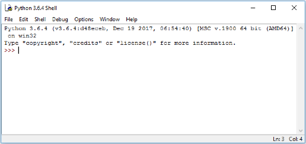
The window shown contains the running interpreter. The >>> is the interpreter prompt – the interpreter is waiting for user input. Note: This image is taken from Windows 10 and will appear different depending on the Operating System you are using.
Below is a simple example of an interaction with the interpreter – note the syntax highlighting used by IDLE. The user inputs an expression at the prompt (followed by pressing Enter) and the interpreter responds by printing the result and another prompt.
>>> 2+3
5
>>> 6*7
42
>>> print("I don't like spam!")
I don't like spam!
Using IDLE to write code
Once we get beyond simple examples in the interpreter, we typically want to be able to save our code so we can use it again later. We can do this by writing our code in a file. IDLE has an editor window that enables us to write our code and save it into a file.
In the File menu choose New Window.
This will open a new window similar to the one below in which to enter the code.
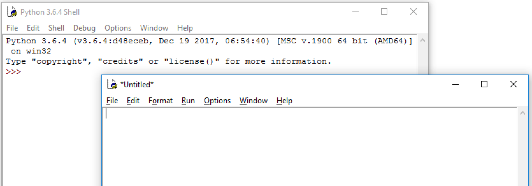
In this window we will write our code. Let’s start with the simplest program used in programming, the “Hello World!” program.
Type the following code into the new window that you just opened.
print('Hello World!')
When you have finished choose Save As from the File menu and save the file in a folder in which you want to do Python development. Name the file hello.py.
It is important to use the .py extension for Python files. Apart from making it easier for us to spot the Python files, various operating systems and some tools also recognise the extension.
You will notice that if the .py extension is missing the colours of the code that you write and have written will no longer be present in the IDLE editor window. If this happens re-save the file with the .py extension.
Now under the Run menu choose Run Module (or alternatively press F5) to run the program that we have just written. The output will appear in IDLE similar to the following image.
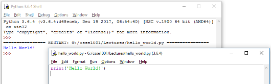
As can be seen the print function of Python displays the data that is the input to the print function (data inside the brackets) in the interpreter. In this case, the string 'Hello World!' is displayed.
Code Layout – Good Programming Practices
Most editors will automatically lay out the code with the use of whitespace (a combination of spaces and tabs). In most programming languages, however, whitespace is (mostly) unimportant, as it does not affect the code.
So why bother with layout then?
It is for human readability. Software engineers typically work in teams and so they need to share code. Consistency is important as it makes it easier for one human to understand what another human has written (we are not machines). It also helps for maintenance and modification of the code at a later date – if we were looking at code we wrote 6 months ago, it’s unlikely we would remember it, so we would want it to be easy to read.
Python takes layout one step further:
Whitespaces affect the semantics!
When writing a block of code (the body of a function definition for example), some way of determining the start and end of code blocks is required. In many languages, keywords or some form of brackets are used to mark the start and end of a block.
Python uses indentation.
When a new block is started (indicated by a :, the level of indentation is increased (typically one tab stop or 4 spaces). After the last statement in the block the indentation level is decremented.
It is also regarded as good coding practice to keep the width of any code written to within 80 characters wide. There are multiple reasons for this including:
- It is easy to read – 80 characters is an easy to read line width especially for something that we are already straining our brains to read, such as code.
- Screen sizes are different – If we write code on a wide screen and do not care about line width and later read it on a standard width monitor then it may not necessarily fit (even with the window enlarged), producing unexpected line wrapping.
- An A4 page, in portrait layout, with normal margins and font size is approximately 80 characters wide – if we keep within this then our code should print without any unwanted line-wrap
- Windows that are used for writing code have a default width of just over the 80 characters wide. If the 80 characters width is changed then the window needs to be resized to fit.
I arrange, design, and sell shrubberies
In this section we will look at some issues relating to the design and implementation of software via a simple example. As we go we will introduce more of Python’s syntax and semantics. Before doing so, we look at the software lifecycle. One description of the software lifecycle can be found in Wikipedia at https://en.wikipedia.org/wiki/Software_development_process.
Basically, the software lifecycle describes all the processes required in order to follow good software engineering practices – the aim being to produce high quality software. The basic components of the software lifecycle are as follows:
- Requirements gathering
- What does the client want?
- What operating system will the system run on?
- What commercial off-the-shelf (COTS) software/hardware will be available?
- Will a hazard/risk analysis be required? (This is often needed when the software will be part of a safety or security critical system)
- What other systems will this system interface to?
- Design
- Top-level specification of the system. This may be informal - e.g. a structured English specification, or formal – using logic and mathematics (e.g. for safety/security critical systems)
- Problem decomposition
- Module design
- Interface design
- Coding
- Implementation of modules
- System integration
- Testing
- Bottom-up (unit) testing
- Integration testing (gluing modules together)
- Systems testing (does the overall system perform as required?)
- Maintenance
- Fix problems
- Add features
- Respond to changed client requirements
Earlier phases often need to be revisited as problems are uncovered in later phases. In this course we will concentrate mostly on the design, coding and testing phases, typically by working through examples.
In follow-on courses, we will broaden the scope and move from programming as individuals to software development by teams of software engineers where no individual can reasonably be expected to have a deep understanding of all the software relating to a given project.
Other Man: Well I’m very sorry but you didn’t pay!
Man: Ah hah! Well if I didn’t pay, why are you arguing?
Ah HAAAAAAHHH! Gotcha!
Other Man: No you haven’t!
Man: Yes I have! If you’re arguing, I must have paid.
Other Man: Not necessarily. I could be arguing in my spare time.
Man: I’ve had enough of this!
Other Man: No you haven’t.
Man: Oh shut up!
Introduction to Software Design and Implementation
Asking a Question
There comes a time when input from the user is required to be able to collect data to process. This can be done using the input function. This function takes a string prompt as an argument. When the code is run the user sees the prompt and types in the data. input takes this data in as a string, i.e. a piece of text. An example of using input follows.
name = input("What is your name? ")
print("Hello", name + "! Have a nice day.")
Saving as input.py and running the code, the output is similar to
>>>
What is your name? Arthur, King of the Britons
Hello Arthur, King of the Britons! Have a nice day.
Notice that the input prompt has a space at the end after the question mark. This space is included to separate the question from the user’s response in the interaction. Without it, the interaction would look less appealing to the user:
What is your name?Arthur, King of the Britons
As the example shows, strings can be joined together to form one string for use in a print function. This is very useful in situations such as this where we want to print a combination of messages and values (as in our example). The examples show both methods of joining strings together for printing. The , is the first one used, it joins any items together with spaces automatically placed in between. The second is the + symbol, it joins the items together by adding one string to the next to form a single string.
input Syntax
variable_name = input(string_prompt)
input Semantics
variable_name is given the string value of what the user types in after being prompted.
print Syntax
print(item1, item2, ..., itemn)
print Semantics
Each item is displayed in the interpreter, with a space separating each item. print also takes two optional arguments. The sep argument changes what the separator between the items. If not given, the items are separated with a space otherwise, the items will be separated by the given string. For example:
print(item1, item2, ..., itemn, sep="separator")
Results in the items being separated by the "separator" string instead of spaces. The end argument changes what is printed after all the items. Multiple print function calls will display output on separate lines, unless the end argument is changed as the default is to end prints with a newline character. For example:
print(item1, item2, ..., itemn, end="ending")
Will end the print with the "ending" string after all the items are printed.
True or False
In programing there is always a time when a test is required. This can be used, for example, to see if a number has a relationship with another or if two objects are the same.
There are several character combinations that allow for testing.
== is equal to
!= not equal to
< Less than
> Greater than
<= Less than or equal to
>= Greater than or equal to
>>> 1 == 1
True
>>> 2 != 1
True
>>> 2 < 1
False
>>> "Tim" < "Tom"
True
>>> "Apple" > "Banana"
False
>>> "A" < "a"
True
>>> type(True)
<class 'bool'>
As can be seen these statements result in either True or False. True or False are the two possible values of the type bool (short for boolean). Also note that upper and lower case letters in strings are not equal and that an upper case letter is less than the corresponding lower case letter. The reason for this is that computers can only understand numbers and not any characters. Therefore, there is a convention set up to map every character to a number. This convention has become the ASCII scheme. ASCII makes the upper case letters be the numbers 65 through to 90 and the lower case letters the numbers 97 to 122.
Making Decisions
The ability to do a test has no use if it can not be used in a program. It is possible to test and execute a body of code if the test evaluates to True.
This is done using the if statement.
Let’s start with a simple example. The following code is an example of an if statement that will display a hello message if the name input by the user is "Tim".
name = input("What is your name? ")
if name == "Tim" :
print("Greetings, Tim the Enchanter")
Saving this code as if.py and running, the output from this code looks like:
>>>
What is your name? Tim
Greetings, Tim the Enchanter
>>>
What is your name? Arthur, King of the Britons
As can be seen if name does not equal "Tim" then nothing is output from the code.
If Statement Syntax
<div class="language-python highlighter-rouge"><div class="highlight"><pre class="highlight"><code><span class="k">if</span> <span class="n">test</span><span class="p">:</span>
<span class="n">body</span> </code></pre></div> </div>
If statements start with an if followed by a test and then a colon. The body of code to be executed starts on a new line and indented following the Python indentation rules.
Semantics
If test evaluates to True then body is executed. Otherwise, body is skipped.
What if we want to run a different block of code if the test is False?
This requires an if, else statement
Our example can be modified to print a different message if name is not "Tim".
name = input("What is your name? ")
if name == "Tim" :
print("Greetings, Tim the Enchanter")
else :
print("Hello", name)
Saving this code as if_else.py , the output from this code looks like:
>>>
What is your name? Tim
Greetings, Tim the Enchanter
>>>
What is your name? Arthur, King of the Britons
Hello Arthur, King of the Britons
If-Else Syntax
<div class="language-python highlighter-rouge"><div class="highlight"><pre class="highlight"><code> <span class="k">if</span> <span class="n">test</span><span class="p">:</span>
<span class="n">body1</span> <span class="k">else</span><span class="p">:</span>
<span class="n">body2</span> </code></pre></div> </div>
The if segment of the If-Else statement is the same is for if. After body1 of the if on a new line and de-dented is an else followed by a colon. Then body2 starts on a new line and indented again following the Python indentation rules.
Semantics
If test evaluates to True then body1 is executed. Otherwise body2 is executed.
It is also possible to carry out multiple tests within the same if statement and execute different blocks of code depending on which test evaluates to True. We can do this simply by using an if, elif, else statement. Our example can be modified further to look like the following
name = input("What is your name? ")
if name == "Tim" :
print("Greetings, Tim the Enchanter")
elif name == "Brian" :
print("Bad luck, Brian")
else :
print("Hello", name)
Saving this code as if_elif_else.py , our example now has the following output:
>>>
What is your name? Tim
Greetings, Tim the Enchanter
>>>
What is your name? Brian
Bad luck, Brian
>>>
What is your name? Arthur, King of the Britons
Hello Arthur, King of the Britons
If-Elif-Else Syntax
<div class="language-python highlighter-rouge"><div class="highlight"><pre class="highlight"><code><span class="k">if</span> <span class="n">test1</span><span class="p">:</span>
<span class="n">body1</span> <span class="k">elif</span> <span class="n">test2</span><span class="p">:</span>
<span class="n">body2</span> <span class="o">.</span> <span class="o">.</span> <span class="o">.</span> <span class="k">elif</span> <span class="n">testn</span><span class="p">:</span>
<span class="n">bodyn</span> <span class="k">else</span><span class="p">:</span>
<span class="n">bodyn1</span> </code></pre></div> </div>
The if segment of the If-Elif-Else statement is the same as the if statement. This is the followed by an elif on a new line and de-dented from the body of the if. This is followed by the next test and a colon. The body of this test starts on a new, indented line. This is repeated for all the elif statements required. Then (if required) an else statement is last as described in the If-Else syntax section.
Semantics
If test1 evaluates to True then body1 is executed. Otherwise, if test2 evaluates to True body2 is executed. If all the tests are tested and if none evaluate to True then bodyn1 is executed. In other words, the first (and only the first) True test in the if-elif-elif-… chain executes its body. If there is no else statement and none of the tests are True, then nothing is executed.
The test of an if/elif statement is known as the condition, because it specifies when the body will execute. if, elif, and else statements are also known as conditional statements.
Being Repetitive
We are off to a good start, but the interaction is not very long. We are not doing much before we abruptly end the conversation. For our next addition to the program, we would like to be able to talk to the user for as long as we can. Let’s accomplish this by asking the user for a topic, talking about that topic, then asking for another topic. Here is an example of what we might want:
What is your name? Tim
Greetings, Tim the Enchanter
What do you want to talk about? Python
Do you like Python? yes
Why do you think that? it's easy to use
I also think that it's easy to use
What do you want to talk about? coconuts
Do you like coconuts? no
Why do you think that? they cannot migrate
I also think that they cannot migrate
What do you want to talk about? CSSE1001
Do you like CSSE1001? very much
Why do you think that? the course notes are very useful
I also think that the course notes are very useful
What do you want to talk about? nothing
Okay. Goodbye, Tim!
To do this, we will need to have a way to repeat the discussion until the conversation is over. We can use a construct called a while loop. We need to consider what code should be repeated (in this case, the discussion of a topic) and when it should keep going (in this case, when the topic is not “nothing”). Let’s update our code to include the repetition. This code can be downloaded as interaction_while.py
name = input("What is your name? ")
if name == "Tim" :
print("Greetings, Tim the Enchanter")
elif name == "Brian" :
print("Bad luck, Brian")
else :
print("Hello", name)
topic = input("What do you want to talk about? ")
while topic != "nothing" :
like = input("Do you like " + topic + "? ")
response = input("Why do you think that? ")
print("I also think that", response)
topic = input("What do you want to talk about? ")
print("Okay. Goodbye, " + name + "!")
The topic = input(...) line above the loop asks for the first topic. The while topic != "nothing" line checks if the given condition is True, and if it is, then the loop body repeatedly performs the actions until the condition is False. Notice that the last line of the body asks for a new topic, which is used as the topic for the next repetition of the loop. If that new topic is nothing, then the loop test topic != "nothing" becomes False, so the while loop will stop running and the code will continue after the loop body (where the indentation stops).
Notice that we are asking if the user likes the topic, but we are not using the response that the user gives. Ignoring the input from the user is very unusual behaviour, but we have done it here to simplify the example.
Run this code to experiment with it. What happens when the first topic is “nothing”? Why does that happen?
One thing that might seem a bit odd about our code is that the topic = input(...) line occurs in two places, once before the while loop, and once at the end of the loop body. This has to happen this way because the topic needs to be entered in before the topic != "nothing" test happens. We can avoid this by exiting the loop from inside the body. This is done using the break keyword. When break is executed inside a loop, the program will immediately exit the loop and continue after the body. We can use this with an if statement to specify how the loop should finish. This code is available at interaction_break.py
name = input("What is your name? ")
if name == "Tim" :
print("Greetings, Tim the Enchanter")
elif name == "Brian" :
print("Bad luck, Brian")
else :
print("Hello", name)
while True :
topic = input("What do you want to talk about? ")
if topic == "nothing" :
break
like = input("Do you like " + topic + "? ")
response = input("Why do you think that? ")
print("I also think that", response)
print("Okay. Goodbye, " + name + "!")
The first change that we have made is the condition test of the while loop. Since the loop keeps going as long as the condition is True, that means that “while True” will keep going until the break is reached (or it will go on forever if there is no break; loops that go forever are called infinite loops). Using break in this way means that the topic = input(...) line only has to appear once in our code.
In many situations, it is considered bad programming practice to have logic that exits a loop from within the middle of the loop body. This is because it complicates understanding the loop’s behaviour. The reader needs to understand the loop’s logical condition plus find and understand the break logic in the middle of the loop body. In the example above, the loop body is short and simple enough that finding the break logic is not difficult. However, once the logic becomes more complex and the code longer it would be harder to read. Try to avoid writing code that exits a loop from the middle of the loop’s body. But, be aware that it is possible and you may need to identify this type of logic in someone else’s code.
While Loop Syntax
<div class="language-python highlighter-rouge"><div class="highlight"><pre class="highlight"><code><span class="k">while</span> <span class="n">test</span><span class="p">:</span>
<span class="n">body</span> </code></pre></div> </div>
The first line contains the word while followed by a boolean test and a :. Following is the body, an indented block of code.
Semantics
If test evaluates to True then the body is executed. Then the test is evaluated again, if it is still True, then the body is executed again. This process repeats until the test fails (becomes False). Each repetition is called an iteration through the loop, and the act of performing a repeated task is called iterating. When the test becomes False (or if it is False to start with), we “exit the loop” and execute the next statement after the indented block.
If a break statement is executed inside the loop, the loop will exit immediately.
Then you must cut down the mightiest tree in the forest… with… a herring!
Loop Invariants
It is not always easy to tell if a loop will create the correct result in every circumstance. Therefore, we use a loop invariant that states if this condition is True then the result should be correct. For this to work completely the invariant needs to be True at the start, at the end of the loop body and if the loop condition is False the invariant must still be True.
Here is an example that finds the prime factors of a number and puts them into a list. This function will use the next_prime function found in prime.py.
from prime import *
def factorise(n) :
"""Returns a list of the prime factors of 'n'.
Parameters:
n (int): Number for which factors are to be found.
Preconditions:
n >= 2
Return:
list<int>: Prime factors of 'n'.
"""
prime = 2
factors = []
while n > 1 :
# Loop Invariant: product(factors) * n == initial n
while n % prime == 0 :
factors.append(prime)
n /= prime
prime = next_prime(prime)
return factors
This function starts with the current prime number set to 2, as 2 is the first prime number, and an empty list to store the primes in. We then start a while loop that keeps iterating as long as n > 1. We do not want to go less than 2 as there are no primes less than 2. It is here, in a comment, that we introduce our loop invariant. In this case it is that the product of all the primes found so far multiplied by the current number that we are operating on equals the initial number. We then start another while loop that keeps appending the current prime number to the factors list while the current number is divisible by that prime, also dividing the current number by that prime to move onto the next number. Back in the first while loop we use the next_prime function to move onto the next prime number. The last thing the function does is return the list of factors.
Saving as factorise.py we can run a few tests to show this function working.
>>> factorise(10)
[2, 5]
>>> factorise(340)
[2, 2, 5, 17]
>>> 2 * 2 * 5 * 17
340
All right … all right … but apart from better sanitation and
medicine and education and irrigation and public health and roads and a
freshwater system and baths and public order … what have the Romans
ever done for us?
— Monty Python’s Life of Brian
Functional Decomposition
Reusing the Code
In the previous readings we used control structures to implement a simple conversation between a user and the computer. It is not very much to ask the user for all the topics to discuss. Let’s add in some code that starts off with a query about university, and make the computer’s reply “That’s very interesting”. In principle, this is easy, because we already have code that does a discussion, so perhaps we can reuse it by just copying it and changing certain parts.
name = input("What is your name? ")
if name == "Tim" :
print("Greetings, Tim the Enchanter")
elif name == "Brian" :
print("Bad luck, Brian")
else :
print("Hello " + name + ".")
like = input("Do you like university? ")
response = input("Why do you think that? ")
print("That's very interesting.")
while True :
topic = input("What do you want to talk about? ")
if topic == "nothing" :
break
like = input("Do you like " + topic + "? ")
response = input("Why do you think that? ")
print("I also think that", response)
print("Okay. Goodbye, " + name + "!")
This works, but there are a couple of things that might go wrong with copying code like this. First, it makes the code look more complicated than it is, and it is harder to read when the code is in two places instead of one. The second issue is to do with updating the program: if we want to modify how a discussion works, then we would need to update the code in two separate places. Worse, if we forget one of those two places, then the two discussions become different.
What we want to be able to do is to pull out, or abstract the idea of a “discussion” into a separate part of the code, and then be able to easily use that code in as many places as possible. Ideally, we want to end up with code that behaves like this (with code instead of the comments):
# have a discussion on "university"
print("That's very interesting.")
while True :
topic = input("What do you want to talk about? ")
if topic == "nothing" :
break
# have a discussion on "topic"
print("I also think that")# , user's response
And then somewhere else in the code, we can define how a discussion works. This abstraction is called a function. Here is what the definition of a “discuss” function looks like in Python:
def discuss(topic) :
like = input("Do you like " + topic + "? ")
response = input("Why do you think that? ")
return response
We use the def keyword to say that we are defining the function called discuss. Inside parentheses, we state the formal parameters, also called arguments, that the function takes, which are the bits of information that the function needs to know to complete its task. In this case, we cannot discuss something without knowing what topic to discuss, so we specify that the discuss function takes a single parameter, which we will give the name topic. After the first line is an indented body of code, most of which we are already familiar with. In this case, the discussion needs to supply or ‘give back’ a result at the end, which is the response that the user entered. We do this using the return keyword, which is shown in the last line above. When a return statement is reached, the function will end immediately; if there is a value after the return keyword, it is the result that is ‘given back’ (we say the value is returned).
Every time that we use the discuss function, this body of code is what actually gets executed. The indentation behaves in the same way we’ve seen before – when we stop indenting, then we have finished the function definition. Now that we have this abstraction, we can use the discuss function instead of using the actual discussion code directly:
name = input("What is your name? ")
if name == "Tim" :
print("Greetings, Tim the Enchanter")
elif name == "Brian" :
print("Bad luck, Brian")
else :
print("Hello " + name + ".")
discuss("university")
print("That's very interesting.")
while True :
topic = input("What do you want to talk about? ")
if topic == "nothing" :
break
response = discuss(topic)
print("I also think that", response)
print("Okay. Goodbye, " + name + "!")
The full program that we have written is in interaction.py. This file also includes comments, which are discussed in the next section.
Notice the use of the return value in this line: response = discuss(topic). This will execute the discuss function above, and the value that is returned is assigned to the variable response. The line discuss("university") shows a situation where our function is used for its side-effect of interacting with the user. The value is still returned by the function, but it is discarded by the main program.
Function Syntax
A definition has the following form:
<div class="language-python highlighter-rouge"><div class="highlight"><pre class="highlight"><code><span class="k">def</span> <span class="nf">function_name</span><span class="p">(</span><span class="n">arg1</span><span class="p">,</span> <span class="n">arg2</span><span class="p">,</span> <span class="o">...</span><span class="p">)</span> <span class="p">:</span>
<span class="n">body</span> </code></pre></div> </div>
Function definitions start with the word def, followed by a function_name which follows the same syntax rules as for variable names. In parentheses is a comma separated list of arguments – these are all names of variables and are usually called the formal parameters. The body is an indented sequence of statements.
Executing, or “calling”, a function uses the syntax
<div class="language-python highlighter-rouge"><div class="highlight"><pre class="highlight"><code><span class="n">function_name</span><span class="p">(</span><span class="n">value1</span><span class="p">,</span> <span class="n">value2</span><span class="p">,</span> <span class="o">...</span><span class="p">)</span> </code></pre></div> </div>
The comma-separated values are called the actual parameters. The number of values must be the same as the number of args in the definition.
Semantics
When a function is called, the actual parameters are associated with the formal parameters. That is, each arg is treated as a variable with the corresponding value. Then the body is executed. After that, the program will continue from the point where the function was called.
If a return statement is executed, then the function will exit immediately. The resulting value of the function call will be the value used in the return statement.
Another example of function definition and use Although addition is built into Python we can create our own definition as follows.
<div class="language-python highlighter-rouge"><div class="highlight"><pre class="highlight"><code><span class="k">def</span> <span class="nf">add</span><span class="p">(</span><span class="n">n</span><span class="p">,</span> <span class="n">m</span><span class="p">)</span> <span class="p">:</span>
<span class="k">return</span> <span class="n">n</span> <span class="o">+</span> <span class="n">m</span> </code></pre></div> </div>
In detail – def introduces the function definition for add. The name of the function is add and its formal parameters are n and m. The function simply computes the sum of n and m and returns that as the result of the function (using the return statement).
Here are some example uses.
<div class="language-python highlighter-rouge"><div class="highlight"><pre class="highlight"><code><span class="o">>>></span> <span class="n">add</span><span class="p">(</span><span class="mi">2</span><span class="p">,</span> <span class="mi">3</span><span class="p">)</span> <span class="mi">5</span> <span class="o">>>></span> <span class="mi">3</span> <span class="o">*</span> <span class="n">add</span><span class="p">(</span><span class="mi">2</span><span class="p">,</span> <span class="mi">3</span><span class="p">)</span> <span class="mi">15</span> </code></pre></div> </div>
In the first case we call the function passing in actual parameters 2 and 3. When the function is evaluated, n gets the value 2 and m gets the value 3. The function returns 5 as is seen when evaluated in the interpreter. The second example shows that we can use a call to the function within an arithmetic expression.
Decomposing Problems
There is more to software engineering than knowing how to write code. Part of the design process discussed above is problem decomposition. If we are given a description of a problem or task, how can we write a program that solves the problem?
The problem we will work on in this section is “write a program to find the nth prime number”. The first prime is 2, the second is 3, the third is 5 and so on.
The first step (after we understand the problem) is to decompose the problem into simpler and simpler subproblems until we reach a point where the subproblems are easy to implement.
Given we need to find the nth prime number, we could start at some prime (like 2 or 3) and find the next prime number. If we repeat this process, we will get to the prime we want. So an interesting subproblem is “given a number n, find the next prime number after n”.
To do this we can repeatedly look at the next number and ask if that number is a prime, if so we have finished, if not we keep looking. So the next interesting subproblem is “given a number n determine if n is a prime”.
Recall that a prime is a number that is divisible by only itself and one. We can therefore test for a number being a prime if we can test for divisibility of every number from 2 up to n. So, the last subproblem is “given numbers n and m, determine if m divides n (exactly)”.
Divisible or not Divisible
There is a useful mathematical operation that can be used for testing for divisibility. The operator % is known as mod or modulo. It returns the remainder of division, making it useful to test for divisibility.
>>> 7 % 2
1
>>> 7 % 4
3
>>> 9 % 3
0
>>> 10 % 5 == 0
True
>>> 7 % 4 == 0
False
The first three results are because 7 // 2 is 3 with remainder 1, 7 // 4 is 1 with remainder 3, and 9 // 3 is 3 with remainder 0. Testing for divisibility is the same as testing if the remainder is equal to 0. So, 10 is divisible by 5, and 7 is not divisible by 4.
Now we have reached a level of detail that we know how to write it all in Python code, so we can now start writing the code, building up to larger subproblems.
Is a Number Prime?
We will write a function called is_prime to test a number and return whether it is a prime number or not, using the idea above of testing numbers from 2 to n. This code can be downloaded as the file is_prime1.py.
def is_prime(num) :
"""Returns True iff 'num' is prime.
Parameters:
num (int): Integer value to be tested to see if it is prime.
Return:
bool: True if 'num' is prime. False otherwise.
Preconditions:
num > 1
"""
i = 2
while i < num :
if num % i == 0 :
return False
i = i + 1
return True
The input to the function is the number num, this is the number that we wish to test if it is prime. Notice in the comment there is a precondition. As we discussed earlier, preconditions form a “contract” with the user; the function will work only if certain conditions are met. So, for example, if someone uses is_prime with a number less than 2, then the result could be anything - in this case, an incorrect value will be returned, in other cases the function could cause an error - but that is the caller’s problem because this falls outside the contract.
The first line of the function sets i to 2, i is the counting variable that is being used to keep track of the current value to test. It is common coding practice to use i (and j and k as counting variables in loops). The next line is a while, this while tests if i < num, this will mean that we can test the divisibility of all the numbers less than num. The first line of the body of code in the while is an if statement. Inside the while loop, all we need to do is check if i divides num using the % operator. If i does divide num then num is not prime, therefore the body of the if statement is to simply return False. Notice that this takes advantage of the way return works: a return statement will end the function immediately; at this stage, we already know that num is not prime, so we can return immediately and ignore the rest of the function. The last line of the while body is to increment i by 1, this moves onto the next number to check. The last line of the function is to return True. This again uses the “stop immediately” property of return statements: if the function has not returned False by now, then the if num % i == 0: test never became True during the while loop, so we know that num must be prime, so we return True.
Here are a couple of examples of is_prime. Try out some more to test your understanding of the function.
>>> is_prime(4)
False
>>> is_prime(101)
True
This code works fine but we can do better! Firstly note that if 2 does not divide num then there is no point testing if other even numbers divide num (as all even numbers are divisible by 2). We only need to consider odd i. Secondly if i does divide num then there is a j such that num == i*j. Therefore, if num has a factor then one will be less than or equal to the square root of num. Summarising, we only need to test if 2 divides num and if any odd i less than or equal to the square root of num divide num.
The function below implements these ideas. Update the definition to match the following code, or download is_prime2.py.
import math
def is_prime(num) :
"""Returns True iff 'num' is prime.
Parameters:
num (int): Integer value to be tested to see if it is prime.
Return:
bool: True if 'num' is prime. False otherwise.
Preconditions:
num > 1
"""
if num == 2 :
return True
elif n % 2 == 0 :
return False
sqrt_num = math.sqrt(num)
i = 3
while i <= sqrt_num :
if num % i == 0 :
return False
i = i + 2
return True
The first line introduces an import statement. This is used to load a module of other functions and data that could be useful. In this case the “math” module is used. This module contains many mathematical functions and numbers (such as pi) not present in the default Python libraries, in our case we are using the square root function (sqrt). To see more of what is in the math module, try >>> help(math) after importing the math module.
The first if statement in the code checks if num is 2 and if so, it is obviously prime so True is returned. The elif statement deals with divisibility by 2, if num is divisible by 2 then it is not prime, therefore False is returned. sqrt_num is set to the square toot of num. To do this, we call the square root function (sqrt) of the math library using the syntax math.sqrt(num). i is then started at 3 as we are now checking the odd numbers only. The while loop will keep going while i <= sqrt_num and will terminate when this test becomes false (i.e. when i > sqrt_num). The if statement checks divisibility of num with i as before and returns False if that is the case. i is then incremented by 2, moving to the next odd number. As before, if the function has not returned by the end of the while loop, then the last line will be executed returning True (i.e. num is prime).
Now that we have updated the function, we can test it again.
>>> is_prime(2)
True
>>> is_prime(9)
False
>>> is_prime(19)
True
Thinking more about how to test for primality enabled us to write more efficient code. The second version of the is_prime function is more efficient as there are fewer iterations through the while loop. This means the code will return an answer faster (especially for larger numbers). Try comparing the two functions with really large numbers and see if there is a difference. Although efficiency is very important in software engineering, we leave more detailed and formal discussions of efficiency to later courses.
The Next Prime
The next function to define is next_prime which takes an num and returns the next prime after num. We will use the same idea as in the previous function - i.e. increment by twos. So we will do slightly different things depending on whether num is odd or even.
def next_prime(num) :
"""Returns the next prime number after 'num'.
Parameters:
num (int): Starting point for the search for the next prime number.
Return:
int: The next prime number that can be found after 'num'.
Preconditions:
num > 1
"""
if num % 2 == 0 :
next_number = num + 1
else :
next_number = num + 2
# next_number is the next odd number after num
while not is_prime(next_number) :
next_number = next_number + 2
return next_number
Looking at the code in detail – we start with an if statement that tests if num is even. We use the variable next_number to be the next candidate for being a prime and we initialise it to be either one or two more than num, depending on whether num is odd or even. We have added a comment to remind us about this. The while loop simply increments next_number by 2 until it becomes prime. Note that the test in the while loop is the logical negation of the is_prime test. In other words, we continue looping while next_number is not a prime.
Here are the results of testing.
>>> next_prime(3)
5
>>> next_prime(13)
17
>>> next_prime(101)
103
>>> next_prime(2)
3
>>> next_prime(20)
23
The nth Prime
Now we bring it all together by writing the top-level function nth_prime that returns the nth prime number.
def nth_prime(n) :
"""Returns the n'th prime number.
Parameters:
n (int): The number of prime numbers to find.
Return:
int: The n'th prime.
Preconditions:
n > 0
"""
next_prime_number = 2
i = 1
while i < n :
# loop invariant: next_prime_number is the i'th prime
i += 1
next_prime_number = next_prime(next_prime_number)
return next_prime_number
In this example we introduce the idea of a loop invariant. A loop invariant is a property that, if it is true at the beginning of the body, then it is also true at the end of the loop body. So if the code in the body satisfies this property and it is also true initially (i.e. when we enter the while loop) then it must be true when we exit the loop. A loop invariant can be useful in helping decide on how variables should be initialised, how the variable should change in the body, and when to exit the loop. It is also helps document what the loop does. So think of the loop invariant and then write the code!
In our example the loop invariant is true initially (because 2 is the first prime). Assuming it is true at the start of the loop, then the code advances next_prime_number to the next prime and increments i and so the loop invariant is true again at the end of the loop. Therefore, it is also true when we terminate. In which case, not only is the invariant true but also i == n and so next_prime_number is indeed the nth prime.
By the way, i += 1 is a shorthand for i = i + 1.
The file prime.py contains all the code above plus a top-level comment (using the triple quotes style). In fact, what we have just done is write our own module! In the interpreter try import prime and help(prime), and see how all the trouble we went to writing comments pays off!
King Arthur: ‘What does it say?’
Maynard: ‘It reads, ‘Here may be found the last words of Joseph of
Arimathea. He who is valiant and pure of spirit may find the Holy Grail
in the Castle of aaarrrrggh’.’
King Arthur: ‘What?’
Maynard: ‘…The Castle of aaarrrrggh.’
Bedevere: ‘What is that?’
Maynard: ‘He must have died while carving it.’
Programming Style
Code should be written in a style that makes it easier to comprehend. How you structure and layout your code is called programming style and it is a seemingly trivial but important part of ensuring your code is easy to read. (This is called making the code ‘readable’.) In this course we will following the Google Python Style Guide when writing code. Please ensure that you read and follow these rules. In the style guide the first section, Python Language Rules, relates to how to use particular language features. The second section, Python Style Rules, relates to how to structure your code. The style rules are most immediately applicable to the code you write in the early stages of this course. Some of the language rules will become more applicable later in the course.
Commenting
Writing Comments
Documentation is a software engineering concept that provides the “explanation” of the code. Comments should describe what the code is supposed to do, how to use it properly, and anything else that would be useful to know. A comment is a piece of syntax in a programming language which lets us describe the program code. We can add comments without affecting what our code actually does. Programming languages do this to give us a way of easily documenting our code.
Documenting code is very important — it aids communication between developers and is a great help when it comes to maintenance! Just as an agreed upon layout style is critical, the same holds for commenting style. In Python there are two types of comments, each serving a different purpose.
The first style of comment uses the # character followed by the comment until the end of the line. These comments are useful for describing complicated lines of code, or as a reminder for what a particular line of code is used for. These lines are ignored by the Python interpreter and are mainly notes to the writer of the code.
The second, more important style of comments, are called triple-quote comments or docstrings. These are written using triple quotes (three quote marks: """). Docstrings are meant to explain what use a function serves, without going into the details of “how it does what it does”. In Python, docstrings, are composed of two important parts. The first is a brief explanation of what the function does. This is followed by a detailed explanation of how to use the function. This detailed explanation should include a description of the parameters; any preconditions, which are any requirements that need to be met before the function is called in order for the function to perform correctly; a description of what the function returns; and possibly some examples of usage.
We can think of these comments as a kind of contract between the writer and user of the function. The writer is promising that, if the user calls the function with arguments of the correct type that satisfy the precondition (if there is one), the function will behave as described in the comment. If the user calls the function with arguments of the wrong type, or that do not satisfy the precondition, the writer is not responsible for the function’s behaviour.
Function Docstrings
Below is our discuss function updated with some helpful comments, which is in the interaction.py file.
def discuss(topic) :
"""Discuss a topic with the user and return their response.
Ask if the user likes the topic and why.
Parameters:
topic (str): The topic under discussion.
Return:
str: Response to the question of why they like the topic.
"""
like = input("Do you like " + topic + "? ")
response = input("Why do you think that? ")
return response
In this course, we will use the following triple quote commenting style.
The opening triple quote should be the first line of the body, indented as part of the body. The first line should give a short summary of the function’s behaviour. If necessary, this line is followed by a blank line, and then by a more detailed explanation of the function’s behaviour. This is followed by a blank line followed by a description of each parameter. The parameter description should indicate the type the function expects for that parameter, the type is in parenthesis after the function name, and then should provide a description of what the function expects to be passed to that parameter. If the function does not have any parameters this section is omitted. Following the parameter description is another blank line and then a description of what the function returns. The return description should indicate the type of value being returned and then describe what is being returned. In this case, the discuss function has one parameter topic of type str (short for “string”) that is the topic used for the discussion in the function’s body. The function returns a str that is the response to the question of why the user likes the topic or not. We can also add a precondition to the comments. Preconditions state what must be done (be logically true) before the function is called. Often this is a constraint on the values of some parameters, over and above the type constraint. (i.e. The code calling the function must ensure that the value of the parameters meets the precondition constraints.) The precondition may also be something that needs to be done before the function is called (e.g. some other function must be called before this function is called). The prime numbers example below shows a function with preconditions. Examples of usage demonstrate what the caller can expect when the use the function. These examples serve two purposes. Firstly, they demonstrate what result will be returned with particular parameters. This is useful for functions with complex logic. Secondly, the example of usage provides test cases, as the function can be executed and the results checked against the results indicated in the example of usage. The examples of usage should be formatted to look like an interactive Python session in the interpreter. This allows the Python doctest tool to automatically test the function to ensure it produces the expected results. (Note: Initially do not worry about understanding how to use doctest or getting the examples of usage perfectly formatted. It is more important to get the idea of writing comments that help other programmers, than it is to worry about understanding automatic testing. Automated testing concepts will be explored in detail in later courses.) At the end is a line containing the terminating triple quotes.
def is_prime(num) :
"""Returns True iff 'num' is prime.
Parameters:
num (int): Integer value to be tested to see if it is prime.
Return:
bool: True if 'num' is prime. False otherwise.
Preconditions:
num > 1
Examples:
>>> is_prime(2)
True
>>> is_prime(3)
True
>>> is_prime(4)
False
>>> is_prime(5)
True
>>> is_prime(9)
False
"""
The # style comments are completely ignored by the interpreter. On the other hand the triple quotes comments become part of the function. If you load interaction.py into the interpreter and then start typing a function call, you will see that the first line of the comment appears in the little pop-up window, as shown below.

Further, some python tools, like pydoc, extract this documentation to, for example, generate documentation. Also, below is an example using the help function which displays the docstring comments of the function.
>>> help(discuss)
Help on function discuss in module __main__:
discuss(topic)
Discuss a topic with the user and return their response.
Ask if the user likes the topic and why.
Parameters:
topic (str): The topic under discussion.
Return:
str: Response to the question of why they like the topic.
>>>
Classes and Methods Docstrings
Commenting classes and their methods is slightly different to commenting functions. The class itself requires a comment describing what the class does. Again not explaining how it does it. The methods are commented similarly to functions but with a slight difference to the type declaration. The other difference is that the __init__ method of the class has a Constructor in place of the type declaration.
Below is the Point class from the Class Design notes.
class Point(object) :
"""A 2D point ADT using Cartesian coordinates."""
def __init__(self, x, y) :
"""Construct a point object based on (x, y) coordinates.
Parameters:
x (float): x coordinate in a 2D cartesian grid.
y (float): y coordinate in a 2D cartesian grid.
"""
self._x = x
self._y = y
def x(self) :
"""(float) Return the x coordinate of the point."""
return self._x
def y(self) :
"""(float) Return the y coordinate of the point."""
return self._y
def move(self, dx, dy) :
"""Move the point by (dx, dy).
Parameters:
dx (float): Amount to move in the x direction.
dy (float): Amount to move in the y direction.
"""
self._x += dx
self._y += dy
Note that the comment for the __init__ method does not have a Return: comment. This is due to a class constructor not returning a value, it creates an object of the class type instead of returning a value.
Also notice that the self parameter is never described in the Parameters: comment. Every method that operates on an object must have a self parameter, and it refers to the object on which the method operates. Consequently its type and value are always known. When calling a method on an object you do not pass the object as a parameter, it is implicitly passed as part of the method call. The move method of Point, would be called like: point_object.move(1.0, 2.5). In this case the self parameter refers to the point_object.
Useful stuff, string, no trouble there
Data Structures
Sequences
A sequence can be thought of as an ordered collection of data – i.e. it has a 0th element, a first element, a second element and so on.
Note that Python, and many other programming languages, start counting from 0 rather than 1.
A typical operation on any kind of a sequence is to be able to access the ith element. Another operation is to determine how many elements there are in the sequence. This also leads to the ability to walk through the sequence from start to end. This is known as iterating through the sequence. All sequence-based objects that have this capability are known as iterables. A string can be considered as a specialisation of a sequence as it represents a series of ordered characters. We will use strings as our first example of using ADTs.
Strings
As we have seen before a string can be made using the quotation marks. Python interprets anything held within a pair of “” to be a string. This can be thought of as the constructor of a string.
Because strings are specialisations of sequences, then we expect to be able to get the ith character of a string and find out how long a string is. To be able to access the characters in a string it is possible to do what is called indexing. This is done using [ ] notation – this is the accessor. To be able to find the length of a string we have the len function.
Note that there are other operations we want to perform on strings that may not make sense for other specialisations of sequences.
Here are some examples of indexing and finding the of length strings in action:
>>> s = "spam"
>>> len(s)
4
>>> s[0]
's'
>>> s[3]
'm'
>>> s[4]
Traceback (most recent call last):
File "<pyshell#32>", line 1, in <module>
s[4]
IndexError: string index out of range
>>> s[-1]
'm'
>>> s[-2]
'a'
>>> i = 0
>>> while i < len(s) :
print(s[i])
i += 1
s
p
a
m
Note the 'string index out of range' error in the fourth example – there is no fourth element as Python starts counting at 0. Also notice that negative numbers can be used in indexing. The use of negative numbers starts the indexing at the end of the string. So -1 refers to the last element in the string, -2 refers to the second last, and so on. In the last example we use a while loop to iterate over and print every character in the string. Remember i += 1 is the same as
i = i + 1.
In Python, there is no separate ‘character type’. Characters in Python are represented as strings of length 1. We will use the term ‘character’ to mean a string of length 1.
Strings are immutable sequences – i.e. it is not possible to change the data in a string. We will cover mutable and immutable objects and sequences in the following weeks’ notes.
len Syntax
<div class="language-python highlighter-rouge"><div class="highlight"><pre class="highlight"><code><span class="nb">len</span><span class="p">(</span><span class="n">sequence</span><span class="p">)</span> </code></pre></div> </div>
Semantics
Returns the length of (number of objects in) the sequence.
For
In the example above, a while loop was used to iterate over the characters of a string. Iterating over the elements of a sequence is such a common thing to do that Python has a special construct for this purpose – the for loop.
Instead of using the while loop as we did earlier we could use a for loop instead, as a string is an iterable object.
>>> s = "spam"
>>> for i in s :
print(i)
s
p
a
m
Syntax
<div class="language-python highlighter-rouge"><div class="highlight"><pre class="highlight"><code><span class="k">for</span> <span class="n">var</span> <span class="ow">in</span> <span class="n">sequence</span> <span class="p">:</span>
<span class="n">body</span> </code></pre></div> </div>
where var is a variable and sequence is a sequence.
Semantics
Iterate over sequence assigning var in turn to each element of the sequence. For each element, execute body. The body typically contains occurrences of var. The body must follow the indentation rules of Python that we have seen before.
As a simple example of the use of a for loop we now write a function to determine if a given character is in a string. Here is the definition:
def is_in(char, string) :
"""Return True iff 'char' is in 'string'.
Parameters:
char (string): The character being searched for.
string (string): The string being searched.
Return:
bool: True if 'char' is in 'string'. False otherwise.
"""
for c in string :
if c == char :
return True
return False
Here is an example of is_in:
>>> spam = "spam"
>>> is_in("s", spam)
True
>>> is_in("d", spam)
False
The for loop iterates over the characters in the string, comparing each in turn with the supplied character. If a match is found, True is returned. If we iterate through all the elements without finding a match, then the for loop terminates and the following command is executed – returning False.
Determining if a particular item is an element of a sequence is a common operation, and so Python has a built-in operator in that does the job for us – so we don’t need the previous function. Actually, for strings, in does more than the previous function as we can see in the following examples.
>>> 's' in 'spam'
True
>>> 'x' in 'spam'
False
>>> 'sp' in 'spam'
True
>>> 'sa' in 'spam'
False
>>> 'pa' in 'spam'
True
Note how the in keyword is used in for loops as well as boolean tests. It’s important to be aware of both uses of in and how to use it in both cases.
Slice It Up
Earlier we saw how we can access the ith element using square brackets. We can do more! We can also use the square brackets to do slicing – i.e. extracting subsequences. Here are some examples.
>>> s = 'spam'
>>> s[1:2]
'p'
>>> s[1:3]
'pa'
>>> s[:3]
'spa'
>>> s[1:]
'pam'
>>> s[:-2]
'sp'
>>> s[-3:]
'pam'
>>> s[:]
'spam'
The idea is to supply two indices separated by a colon. So when we write s[n:m], we mean the substring from the nth index up to, but not including, the mth index. If the first index is missing we get the slice starting at the beginning of the string or sequence. If the second index is missing we get the slice ending at the last element. In the last case we actually generate a copy of the original string.
We can also write s[n:m:k]. This means the substring from n to m in steps of k. Here are some examples.
>>> sp = 'Lovely Spam'
>>> sp[1:10:2]
'oeySa'
>>> sp[0:8:3]
'Le '
>>> sp[-10:2:2]
'o'
>>> sp[-10:10:3]
'olS'
>>> sp[:7:4]
'Ll'
>>> sp[2::3]
'vyp'
>>> sp[::3]
'Le a'
>>> sp[10:1:-2]
'mp lv'
>>> sp[-3:2:-3]
'py'
>>> sp[::-1]
'mapS ylevoL'
The first four examples show starting from one index and ending at another using a step size. The next three examples show ways of starting at the beginning or ending at the end or both using a step size. The last three are examples of using negative step sizes.
Slicing Syntax
sequence[n:m:k]
Semantics
Returns the elements in the sequence from n up to but not including m in steps of size k. If k is not included then step size defaults to 1. To get a backwards segment of the sequence then m < n and k must be negative.
To finish off this section we look at two programming problems involving lists. The first problem is, given a character and a string, find the index of the first occurrence of the character in the string.
def find(char, string) :
"""Return the first i such that string[i] == 'char'
Parameters:
char (string): The character being searched for.
string (string): The string being searched.
Return:
int: Index position of 'char' in 'string',
or -1 if 'char' does not occur in 'string'.
"""
i = 0
length = len(string)
while i < length :
if char == string[i] :
return i
i += 1
return -1
We use a while loop to iterate over the elements of the string. Either we find an occurrence of the character — in which case we immediately return that index, or we get to the end of the string without finding the character and return -1.
Here are some tests of find.
>>> s = "spam"
>>> find('m', s)
3
>>> find('s', s)
0
>>> find('x', s)
-1
Tuples
A tuple is a comma separated list of values. Tuples are useful for storing data that is required to not be modified. As tuples are immutable, they cannot be modified, they are useful for this type of operation.
Here are some examples using tuples.
>>> type((2,3,4))
<class 'tuple'>
>>> point = (2,3)
>>> point
(2, 3)
>>> x, y = point
>>> print(x, y)
2 3
>>> x, y = y, x
>>> print(x, y)
3 2
The second example assigns a tuple to the variable point. This tuple represents an x, y coordinate, one of the more common uses of tuples. (Formally, we say that the name point refers to the tuple (2,3) in memory.) The third is an example of tuple unpacking, also called parallel assignment — it assigns x and y respectively the values of the first and second components of the tuple. The last example uses parallel assignment to swap the values of two variables.
Tuples can also be indexed and sliced in the same way as strings. Here is an example. The tuple in this example represents a person’s details. Using a tuple is an easy way of storing multiple values together to represent the information of a person.
>>> john = ("John", "Cleese", "Ministry of Silly Walks", 5555421, "27/10")
>>> john[2]
'Ministry of Silly Walks'
>>> john[4]
'27/10'
>>> john[:2]
('John', 'Cleese')
Multiple Outputs
Tuples are also useful for using multiple values, for example in for loops and return statements. It is possible to rewrite the find function using a for loop and the enumerate function. Calling enumerate on a sequence will create a sequence of tuples containing a counter and the values in the sequence. By default, the counter starts at 0, so it can be used to generate tuples that contain a value of the sequence and the index of that value. The following is a couple of examples using enumerate.
>>> s = "I like Spam"
>>> for i, c in enumerate(s) :
print(i, c)
0 I
1
2 l
3 i
4 k
5 e
6
7 S
8 p
9 a
10 m
>>>
>>>
>>> for i, c in enumerate(s, 3) :
print('number:', i, 'character:', c)
number: 3 character: I
number: 4 character:
number: 5 character: l
number: 6 character: i
number: 7 character: k
number: 8 character: e
number: 9 character:
number: 10 character: S
number: 11 character: p
number: 12 character: a
number: 13 character: m
Notice that the for loop uses tuple unpacking, by assigning the items of the tuple to the variables i and c. The first example simply prints out the index and character as a tuple pair. The second gives a second argument to enumerate, which is the starting value for the counter.
enumerate Syntax
Either of these forms can be used:
<div class="language-python highlighter-rouge"><div class="highlight"><pre class="highlight"><code><span class="nb">enumerate</span><span class="p">(</span><span class="n">sequence</span><span class="p">)</span> <span class="nb">enumerate</span><span class="p">(</span><span class="n">sequence</span><span class="p">,</span> <span class="n">start</span><span class="p">)</span> </code></pre></div> </div>
Semantics
Generates a sequence of (count, value) tuples, with an increasing count and the values of the sequence. The count starts at start, or at 0 if start is not given. More precisely, the following sequence is generated:
<div class="language-python highlighter-rouge"><div class="highlight"><pre class="highlight"><code><span class="nb">enumerate</span><span class="p">(</span><span class="n">seq</span><span class="p">)</span> <span class="o">=></span> <span class="p">(</span><span class="mi">0</span><span class="p">,</span> <span class="n">seq</span><span class="p">[</span><span class="mi">0</span><span class="p">]),</span> <span class="p">(</span><span class="mi">1</span><span class="p">,</span> <span class="n">seq</span><span class="p">[</span><span class="mi">1</span><span class="p">]),</span> <span class="p">(</span><span class="mi">2</span><span class="p">,</span> <span class="n">seq</span><span class="p">[</span><span class="mi">2</span><span class="p">]),</span> <span class="o">...</span> <span class="nb">enumerate</span><span class="p">(</span><span class="n">seq</span><span class="p">,</span> <span class="n">start</span><span class="p">)</span> <span class="o">=></span> <span class="p">(</span><span class="n">start</span><span class="p">,</span> <span class="n">seq</span><span class="p">[</span><span class="mi">0</span><span class="p">]),</span> <span class="p">(</span><span class="n">start</span><span class="o">+</span><span class="mi">1</span><span class="p">,</span> <span class="n">seq</span><span class="p">[</span><span class="mi">1</span><span class="p">]),</span>
<span class="p">(</span><span class="n">start</span><span class="o">+</span><span class="mi">2</span><span class="p">,</span> <span class="n">seq</span><span class="p">[</span><span class="mi">2</span><span class="p">]),</span> <span class="o">...</span> </code></pre></div> </div>
If the counter starts from 0, then the count is the same as the index of the value in the sequence. This is the most common use of enumerate.
Now we can rewrite find as below:
def find(char, string) :
"""Return the first i such that string[i] == char
Parameters:
char (string): The character being searched for.
string (string): The string being searched.
Return:
int: Index position of 'char' in 'string',
or -1 if 'char' does not occur in 'string'.
"""
for i, c in enumerate(string) :
if c == char :
return i
return -1
This function now goes through each character in the string using a for loop with enumerate. The body of the for loop is to check if the current character, c, is the same as char. If it is then the current index i is returned. Otherwise the for loop moves onto the next character in the string. If the for loop ends then -1 is returned.
Performing test cases on find.py we can see that it has the same functionality as before.
>>> s = "spam"
>>> find('m', s)
3
>>> find('s', s)
0
>>> find('x', s)
-1
Returning a Tuple
Now we are going to write our own function that returns multiple outputs. Our function is going to take a character and a string and split the string in two, at the first occurrence of the character. In this case we want to write a function that will return three strings - the string up to (but not including) the character; the character; and the string after the character.
Our programming problem can be solved by using find in combination with slicing.
def partition(char, string) :
"""Return 'string' split at 'char'.
The returned result is a tuple consisting of three strings that
partition 'string' at 'char' - i.e. the substring before the first occurrence
of 'char', 'char', and the substring after the first occurrence of 'char'.
If 'char' does not occur in 'string' then the first component returned
is the entire 'string' and the last two components are empty strings.
Parameters:
char (string): The character used to partition string.
string (string): The string being partitioned.
Return:
tuple<tr, str, str>: sub-string before char, char, sub-string after char;
or 'string', "", "".
"""
index = find(char, string)
if index == -1 :
return string, '', ''
else :
return string[:index], char, string[index+1:]
Here are some tests of partition.
>>> spam = 'spam'
>>> partition('s', spam)
('', 's', 'pam')
>>> partition('p', spam)
('s', 'p', 'am')
>>> partition('m', spam)
('spa', 'm', '')
>>> partition('x', spam)
('spam', '', '')
In next week’s notes we will see that the find and partition functions, like the is_in function are already part of Python as part of the string ADT interface.
I’m afraid I’m not personally qualified to confuse cats,
but I can recommend an extremely good service.
Mutable and Immutable
As we are about to see lists, are our first example of a mutable sequence and object, now is a good time to discuss mutability. Mutability is the description of whether an object’s data can be modified.
A mutable object is an object whose data is modifiable. The data can be modified either through the methods of the object or through direct access to the data itself. An immutable object is an object where the data cannot be modified in anyway. Strings are examples of immutable objects. It is not possible to modify the data of a string. We are about to meet our first mutable objects: lists.
Lists
Lists are mutable sequences. We can access elements at a particular index as we did with strings and use slicing, but we can also modify a list by changing elements or by adding and removing elements.
Here are some examples of lists in action:
>>> a = [1,2,3,4]
>>> type(a)
<class 'list'>
>>> a[0]
1
>>> a[-1]
4
>>> a[1:3]
[2, 3]
>>> a[::2]
[1, 3]
>>> a[0] = 5
>>> a
[5, 2, 3, 4]
>>> a.append(7)
>>> a
[5, 2, 3, 4, 7]
>>> a.pop(3)
4
>>> a
[5, 2, 3, 7]
>>> a.insert(1,9)
>>> a
[5, 9, 2, 3, 7]
>>> a.sort()
>>> a
[2, 3, 5, 7, 9]
>>>
The first example shows the syntax for lists and the type, the next four examples look up information in the list using indexing and slicing. In the next example, we see indexing used on the left hand side of an assignment statement. The semantics is that the value stored at the supplied index is updated with the value on the right hand side of the assignment. The last four examples use methods of the list class to perform more operations on the list.
The first of these is the append method. The append method adds the item that is the argument to the end of the list. This is followed by the pop method. Pop removes the item at the given index from the list and returns that item. Another way to add items to the list is the insert method. Insert takes an index and an item as arguments and inserts the item at the given index, pushing the other items down the list. The last example shows how we can sort the elements — arrange them in order.
Notice how all the methods and operations performed on the list modify the list stored in the variable being used and most do not return anything. Compare this to strings, where all methods and operations return a new item and do not change the original string in the variable.
Python also includes a function for converting any sequence into a list of the objects in that sequence.
>>> list("spam")
['s', 'p', 'a', 'm']
>>> list((1, 7, 8, 42))
[1, 7, 8, 42]
Because lists are sequences we can iterate over a list using a for loop.
>>> for i in [0, 1, 2, 3, 4] :
print(i)
0
1
2
3
4
A for loop is not much good if we do not do anything with the items. Here is an example of taking a list of numbers and generating a new list with all the numbers from the original list squared.
>>> x = [2, 5, 8, 14, 18]
>>> y = []
>>> for i in x :
y.append(i ** 2)
>>> y
[4, 25, 64, 196, 324]
Range
Because iterating over sequences of numbers is very common, Python comes with a function for generating a sequence of numbers. This function is called range. range generates a special object that is iterable, meaning we can loop over the elements in the range using the for loop.
>>> for i in range(10) :
print(i, end=" ")
0 1 2 3 4 5 6 7 8 9
In short, range creates an object that can be looped through that contains a sequence of numbers from a start number up to but not including a given end number. The end number is required and is excluded from the sequence as usually we use range to generate indices. The default start number is zero; this is also for generating indices as indexing starts at zero. The step size can also be changed, enabling us to skip numbers instead of going one number at a time. This can be seen in the following examples. Note, to simplify these examples the list function has been used.
>>> list(range(5))
[0, 1, 2, 3, 4]
>>> list(range(1, 10))
[1, 2, 3, 4, 5, 6, 7, 8, 9]
>>> list(range(1, 10, 3))
[1, 4, 7]
>>> list(range(10, 1 ,-1))
[10, 9, 8, 7, 6, 5, 4, 3, 2]
>>>
range Syntax
range(start, end, step_size)
start is optional and defaults to 0, step_size is optional and defaults to 1
Semantics
Generates an iterable sequence of numbers. If only end is given, then the sequence will start at 0 go up to but not including end. If start and end are given, then the sequence will start at start and go up to but not including end. If all three options are given then the sequence will start at start and go up to but not including end with a given step_size.
Pass by Reference
The following example is of a function that takes a list and a number and adds all numbers from 0 up to but not including that number to the list.
def add_to(existing_list, num) :
"""Adds numbers 0 to 'num' to the end of 'list'
Parameters:
existing_list (list): The list to which numbers will be added.
num (int): The number up to which will be added to 'existing_list'.
Examples:
>>> a_list = []
>>> add_to(a_list, 4)
>>> a_list
[0, 1, 2, 3]
"""
for i in range(num) :
existing_list.append(i)
After saving the file as add_to.py and running here is a test.
>>> a_list = [3, 5, 6, 87, 1, 5]
>>> add_to(a_list, 5)
>>> a_list
[3, 5, 6, 87, 1, 5, 0, 1, 2, 3, 4]
Notice how even though the function does not return anything the list is modified simply by passing it to the function. We say that objects in Python are passed by reference, which means that objects passed into functions are passed directly. Consequently, a mutable object, which is changed inside a function body, will still be changed after the function call. In contrast, some programming languages use a pass by value strategy, where a copy of the object is passed into functions, so any modifications will not affect the original object.
The add_to function is what is often called a procedure, rather than a function, because it does not return a value. In Python, functions or procedures always return a value, even if there is no return statement. Procedures, like this example, return None if there is no return line. None is an instance of a special type in Python called NoneType which has only one value, None.
>>> type(None)
<class 'NoneType'>
>>> a = None
>>> a
>>>
>>> help(None)
Help on NoneType object:
class NoneType(object)
| Methods defined here:
|
| __bool__(self, /)
| self != 0
|
| __new__(*args, **kwargs) from builtins.type
| Create and return a new object. See help(type) for accurate signature.
|
| __repr__(self, /)
| Return repr(self).
None is treated specially by the interpreter. The second example shows that anything that evaluates to None is not printed to the interpreter.
Pass by Reference
If a list is passed into a function, any changes made to that list inside the function will affect the list outside of the function, because lists are mutable.
Word association football
Dictionaries
A dictionary is similar to a sequence, as it can be indexed. The difference is that, instead of being indexed by 0, 1, 2, etc.; it is indexed by keys. (Dictionaries cannot be sliced.) A dictionary is really a mapping from keys to values. Dictionary keys can be any immutable type — for example strings or numbers, while values can be of any type. Dictionaries are used for storing and retrieving information based on a key. For this reason, there can be no duplicates in the keys, but there can be duplicates in the values.
Here are some examples of dictionaries in action using a phone book as an example.
>>> phone = {'Eric' : 7724, 'John' : 9224, 'Graham' : 8462}
>>> phone
{'John': 9224, 'Graham': 8462, 'Eric': 7724}
>>> type(phone)
<class 'dict'>
>>> phone['John']
9224
>>> phone['Terry']
Traceback (most recent call last):
File "<pyshell#4>", line 1, in <module>
phone['Terry']
KeyError: 'Terry'
>>> phone['Terry'] = 6352
>>> phone['Terry']
6352
>>> phone
{'John': 9224, 'Graham': 8462, 'Eric': 7724, 'Terry': 6352}
The first example shows one way of constructing a dictionary — an open brace (curly bracket) followed by a sequence of key : value pairs followed by a closed brace. Notice how when the dictionary is printed, it is not in the same order that it was created in. This is due to the way dictionaries are stored in memory. They are not necessarily stored in any particular order. The third example shows accessing the dictionary using the square bracket notation. The next example shows that, using the square bracket notation, if a key is not in the dictionary it will raise an error. However, if a key is not in the dictionary it can be added (or if the key is in the dictionary then its value is updated) using the square bracket notation as shown in the last example.
The next couple of examples show other methods of creating a dictionary.
>>> phone = dict(Eric=7724, John=9224, Graham=8462)
>>> phone
{'John': 9224, 'Graham': 8462, 'Eric': 7724}
>>> phone = dict([('Eric', 7724), ('John', 9224), ('Graham', 8462)])
>>> phone
{'John': 9224, 'Graham': 8462, 'Eric': 7724}
The first example shows that a dictionary can be created using the dict function with a sequence of key=value pairs as arguments. The second example shows that the dict function can also be used with a single sequence of (key, value) pairs as an argument.
The next few examples show a few methods of dictionaries as well as a few examples of for loops on dictionaries.
>>> for key in phone :
print(key, phone[key])
John 9224
Graham 8462
Eric 7724
>>> phone.keys()
dict_keys(['Graham', 'John', 'Eric'])
>>> phone.items()
dict_items([('Graham', 8462), ('John', 9224), ('Eric', 7724)])
>>> for item in phone.items() :
print(item)
('Graham', 8462)
('John', 9224)
('Eric', 7724)
The first example shows using a for loop directly on a dictionary. The loop variable key becomes each key in the dictionary in turn. This prints out all the key, value pairs of the dictionary. This is the most common method of looping through dictionaries. The next two examples show the keys and items dictionary methods. These two methods return a special class (similar to that of range), but as can be seen they contain a sequence of all the keys or all the key, value pairs that are known as items. These methods (and a similar values are included to provide an efficient way of getting the keys, values, or both and looping through them, as shown in the last example. They are rarely used in any other way.
Using Dictionaries
Let’s start with a simple example of a function that takes a filename and creates a dictionary where the keys are the line numbers and the values are the corresponding lines. Below is the function definition.
def get_lines(filename) :
"""Return a dictionary containing each line in the file as values
and the corresponding line number as keys.
Parameters:
filename (str): Name, including path, of the file to be opened.
Return:
dict: Dictionary containing the contents of the file.
Preconditions:
'filename' is the name of a file that can be opened for reading.
"""
lines = {}
f = open(filename, 'r')
for i, line in enumerate(f) :
lines[i] = line.strip()
f.close()
return lines
The first line creates an empty dictionary, lines, for us to store our lines in. We then open the filename in universal read mode. Using a for loop, along with the enumerate function seen before, the index and line is easily obtained. We then use the square bracket notation to added the stripped line as the value to the dictionary, with the index (being the line number) as the key. The line was stripped using the strip method of strings, as this is more useful if we were to do anything more with this dictionary. The dictionary is then returned.
Having saved this code as get_lines.py, it can be tested. The following is a test using the text.txt file use previously.
>>> lines = get_lines('text.txt')
>>> lines
{0: 'Python is fun,', 1: 'it lets me play with files.',
2: 'I like playing with files,', 3: 'I can do some really fun stuff.',
4: '', 5: 'I like Python!'}
>>> lines[5]
'I like Python!'
Let’s now look at a slightly more complex example. This example will look at determining the frequency count of characters in a file. We will need to open the file for reading, read the contents of the file and count how many times each character appears. Dictionaries are ideal for this — we can use the characters as the keys and the character counts as the associated values. We will need to make use of the dictionary method get.
>>> d = {}
>>> help(d.get)
Help on built-in function get:
get(...)
D.get(k[,d]) -> D[k] if k in D, else d. d defaults to None.
>>> d = {"one" : 1, "three" : 3 ,"many" : 99999999999}
>>> d["one"]
1
>>> d.get("one")
1
>>> d["two"]
Traceback (most recent call last):
File "<pyshell#4>", line 1, in <module>
d["two"]
KeyError: 'two'
>>> print(d.get("two"))
None
>>> d.get("two", "that number does not exist")
'that number does not exist'
The get method is similar to the square bracket notation that we have used to look up values associated with a key. The biggest difference is that get does not raise an error if the key is not in the dictionary as the square bracket notation does.
get Syntax
<div class="language-python highlighter-rouge"><div class="highlight"><pre class="highlight"><code><span class="n">dictionary</span><span class="o">.</span><span class="n">get</span><span class="p">(</span><span class="n">key</span><span class="p">)</span> <span class="n">dictionary</span><span class="o">.</span><span class="n">get</span><span class="p">(</span><span class="n">key</span><span class="p">,</span> <span class="n">d</span><span class="p">)</span> </code></pre></div> </div>
Semantics
get takes in a key as an argument and either returns the value in dictionary associated with that key or, if that key is not in dictionary, then get returns d. d is an optional argument of get and defaults to None.
Now we can have a look at our example. The following is the required function definition.
def freq_count(filename) :
"""Return the frequency count of characters occuring in a file.
Parameters:
filename (str): Name, including path, of the file to be opened.
Return:
dict: Frequency of each character occuring in the file.
Preconditions:
'filename' is the name of a file that can be opened for reading.
"""
freq = {}
file = open(filename, 'r')
for line in file :
for char in line :
freq[char] = freq.get(char, 0) + 1
file.close()
return freq
The function starts with creating an empty dictionary, freq. Then the function opens the file and iterates through the lines of the file with a for loop. Inside the for loop is another (nested) for loop to iterate through the line to get each character. Inside that for loop we start with the square bracket notation for adding a key, value pair to freq using the char as the key. We then use the get method to look up the same key but if char is not in freq then 0 is returned. The value returned by get is incremented by 1, thus incrementing the number of occurrences of char. get is used as it provides the perfect base for this problem. If the char is in freq then the value (the count) is returned and then has 1 added to it and then that new value is assigned to the key. If char is not in freq then get returns 0 which allows us to add 1 to it as this will be the first occurrence of char in the file.
After saving freq.py, it can be applied to a few files that we have used in previous sections.
>>> freq_count("sgame.txt")
{' ': 125, '\n': 9, '1': 5, '3': 3, '2': 3, '5': 3, '4': 3, '7': 2, '6': 3,
'9': 4, '8': 2}
>>> freq_count("text.txt")
{'\n': 6, '!': 1, ' ': 19, ',': 2, '.': 2, 'I': 3, 'P': 2, 'a': 4, 'c': 1,
'e': 8, 'd': 1, 'g': 1, 'f': 6, 'i': 9, 'h': 4, 'k': 2, 'm': 2, 'l': 9, 'o': 4,
'n': 6, 'p': 2, 's': 6, 'r': 1, 'u': 3, 't': 7, 'w': 2, 'y': 5}
>>> freq_count("words.txt")
{'\n': 252, '!': 12, ' ': 943, "'": 40, ')': 16, '(': 16, '-': 7, ',': 48,
'.': 211, '2': 1, '4': 1, '?': 10, 'A': 6, 'C': 7, 'B': 6, 'E': 3, 'D': 12,
'G': 7, 'F': 30, 'I': 15, 'H': 2, 'K': 1, 'J': 1, 'M': 31, 'L': 4, 'O': 16,
'N': 10, 'P': 13, 'S': 14, 'R': 5, 'U': 3, 'T': 11, 'W': 8, 'V': 4, 'Y': 10,
'a': 203, '`': 10, 'c': 51, 'b': 40, 'e': 324, 'd': 114, 'g': 78, 'f': 48,
'i': 134, 'h': 203, 'k': 21, 'j': 3, 'm': 38, 'l': 99, 'o': 298, 'n': 179, 'q': 5, 'p': 48, 's': 155, 'r': 250, 'u': 98, 't': 294, 'w': 50, 'v': 15, 'y': 72, 'x': 1, 'z': 3}
Note that, instead of reading the file line-by-line, we could have read the entire file into a single string, using read and processed that character-by-character. However, for a very large file this approach would generate a very large (especially in memory) string.
Formatting Strings
The dictionaries, especially when large, do not print out very nicely. Let’s write a function that takes a dictionary and displays it in an easy to read format (also called ‘pretty printing’). To be able to ‘pretty print’ we need to be able to print in a formatted way. We have seen simple examples of this already by simply printing one value after another separated by commas. Python has another approach using the format method of strings. format operates on a format string which has segments where substitutions are made. The items substituted into this format string are the arguments of the format method.
Following are a few examples using the format method.
>>> help(str.format)
Help on method_descriptor:
format(...)
S.format(*args, **kwargs) -> string
Return a formatted version of S, using substitutions from args and kwargs.
The substitutions are identified by braces ('{' and '}').
>>> a = 10
>>> b = 22
>>> c = 42
>>> 'a = {0}, b = {1}, c = {2}'.format(a, b, c)
'a = 10, b = 22, c = 42'
>>> 'a = {0}, b = {1}, c = {2}'.format(b, c, a)
'a = 22, b = 42, c = 10'
>>> 'a = {0}, b = {1}, c = b + 2 * a = {1} + 2 * {0} = {2}'.format(a,b,c)
'a = 10, b = 22, c = b + 2 * a = 22 + 2 * 10 = 42'
>>> s = 'hello'
>>> '{0} world, {1}'.format(s, c)
'hello world, 42'
>>> 'a = {0}, b = {1}, c = {2}'.format(b, c)
Traceback (most recent call last):
File "<pyshell#8>", line 1, in <module>
'a = {0}, b = {1}, c = {2}'.format(b, c)
IndexError: tuple index out of range
>>> 'a = {0}, b = {1}, c = {2}'.format(a, b, c, s)
'a = 10, b = 22, c = 42'
>>> our_format = 'print {0} everywhere, {1}'
>>> our_format.format(a, s)
'print 10 everywhere, hello'
The first example is of the help description of the format method. The next two examples use the format method to print three numbers out with descriptors as to what they are. Notice how the order of the arguments of format is associated with the numbers in the substitutions. The next example shows that substitutions can be made more than once into the format string. The next example shows that multiple types can be printed. The next example shows that if there are more substitutions to be made than there are arguments in format then an error is raised. However, the next example shows that if there are more arguments in format than substitution areas then there is no error, the extra values are ignored as the example shows that the format string can be assigned to a variable and used later to format print.
format Syntax
string.format(sequence)
Semantics
Values from sequence are substituted into substitution place holders in string. These place holders are denoted by numbers starting from 0 inside braces (curly brackets). The index of the value in sequence is the corresponding number that the value is substituted. The string resulting from the substitutions is returned.
Aside: More Formatting options
The format method, along with the format string, has many options to enable different forms of formatted printing. Following are examples of some of the possible formatting options.
<div class="language-python highlighter-rouge"><div class="highlight"><pre class="highlight"><code><span class="o">>>></span> <span class="mf">60.0</span><span class="o">/</span><span class="mi">22</span> <span class="mf">2.727272727272727</span> <span class="o">>>></span> <span class="s">"2 decimal places - {0:.2f}"</span><span class="o">.</span><span class="nb">format</span><span class="p">(</span><span class="mf">60.0</span><span class="o">/</span><span class="mi">22</span><span class="p">)</span> <span class="s">'2 decimal places - 2.73'</span> <span class="o">>>></span> <span class="s">"5 decimal places - {0:.5f}"</span><span class="o">.</span><span class="nb">format</span><span class="p">(</span><span class="mf">60.0</span><span class="o">/</span><span class="mi">22</span><span class="p">)</span> <span class="s">'5 decimal places - 2.72727'</span> </code></pre></div> </div>
It is possible to print to a certain number of decimal places by using a :.nf after the index number. n here is the number of decimal places that are to be used. The examples above show printing to 2 and 5 decimal places.
<div class="language-python highlighter-rouge"><div class="highlight"><pre class="highlight"><code><span class="o">>>></span> <span class="s">"use indexing - {0[3]}, {0[1]}"</span><span class="o">.</span><span class="nb">format</span><span class="p">(</span><span class="s">"hello"</span><span class="p">)</span> <span class="s">'use indexing - l, e'</span> </code></pre></div> </div>
Indexing can be used on sequences inside the format string by indexing the substitution placeholder. The above example uses indexing twice during formatting.
<div class="language-python highlighter-rouge"><div class="highlight"><pre class="highlight"><code><span class="o">>>></span> <span class="s">"give spacing - {0:10}, {1:7}"</span><span class="o">.</span><span class="nb">format</span><span class="p">(</span><span class="s">"hi"</span><span class="p">,</span> <span class="s">"bye"</span><span class="p">)</span> <span class="s">'give spacing - hi , bye '</span> <span class="o">>>></span> <span class="s">"give spacing - {0:10}, {1:7}"</span><span class="o">.</span><span class="nb">format</span><span class="p">(</span><span class="s">"longer"</span><span class="p">,</span> <span class="s">"bye"</span><span class="p">)</span> <span class="s">'give spacing - longer , bye '</span> </code></pre></div> </div>
Spacing can be made around the items that are to be printed by adding a :n after the substitution place holder. n here represents the number of places that are required. The item fills up the spacing to its length then blank spaces are added to fill the rest. Above is two examples of printing with spacing around a couple of strings.
These are just a few of the possible options available for format printing. More options and examples are available at the Python docs page for format strings.
Let’s return to our example. Below is the function definition for ‘pretty printing our dictionary.
def display_dictionary(dictionary) :
"""Pretty print 'dictionary' in key sorted order.
Parameters:
dictionary dict: Dictionary to be pretty printed.
"""
keys = dictionary.keys()
keys = sorted(keys)
for k in keys :
print('{0} : {1}'.format(repr(k), dictionary[k]))
The function first gets the keys of the dictionary and sorts them. The sorted function returns a sorted list of the given sequence. Now, when the dictionary is printed, there is a nice order to the characters. Then it iterates through the keys list and prints them using format. The keys are printed using the repr function. This makes the strings print with the ‘ ‘ around them, if we had printed the strings directly we would have lost the quotes. repr returns the representation of the argument. This can be seen when the disp_dict.py file is saved and tested as below.
>>> freq = freq_count('sgame.txt')
>>> display_dictionary(freq)
'\n' : 9
' ' : 125
'1' : 5
'2' : 3
'3' : 3
'4' : 3
'5' : 3
'6' : 3
'7' : 2
'8' : 2
'9' : 4
Now go away or I will taunt you a second time
Histogram Example
Let’s look at an example that combines the use of dictionaries and exception handling. This example is about statistical analysis of data. Specifically, we want to read data from a file (one floating point number per line) and produce a histogram of the data. To do this we want to subdivide numbers into ‘buckets’ and count how many times data values fall in each bucket. For the program, we will ask the user for the name of the file containing the data to be processed, and the width of each bucket. For this example we will use the file data1.txt.
Aside: Constructing randomised data sets
This file was constructed as follows.
<div class="language-python highlighter-rouge"><div class="highlight"><pre class="highlight"><code><span class="o">>>></span> <span class="kn">import</span> <span class="nn">random</span> <span class="o">>>></span> <span class="n">f</span> <span class="o">=</span> <span class="nb">open</span><span class="p">(</span><span class="s">'data1.txt'</span><span class="p">,</span> <span class="s">'w'</span><span class="p">)</span> <span class="o">>>></span> <span class="k">for</span> <span class="n">i</span> <span class="ow">in</span> <span class="nb">range</span><span class="p">(</span><span class="mi">1000</span><span class="p">)</span> <span class="p">:</span>
<span class="n">f</span><span class="o">.</span><span class="n">write</span><span class="p">(</span><span class="nb">str</span><span class="p">(</span><span class="n">random</span><span class="o">.</span><span class="n">normalvariate</span><span class="p">(</span><span class="mi">0</span><span class="p">,</span> <span class="mi">10</span><span class="p">))</span> <span class="o">+</span> <span class="s">'</span><span class="se">\n</span><span class="s">'</span><span class="p">)</span>
>>> f.close() </code></pre></div> </div>
The random module contains functions for producing pseudo-random numbers from different distributions. In this case, we use a normal distribution with mean 0 and standard deviation 10. We write 1000 generated random numbers into the file. Note we need to add a newline character otherwise all the numbers will be on a single line.
For this problem, we will produce a stand-alone program. The program consists of three parts: getting input from the user, computing the histogram, and writing out the results. Later we will write a GUI version of the same program.
We start with the main part — a function that takes a file name and a bucket size and returns a dictionary of bucket counts. The key for the dictionary will be the ‘bucket position’ — i.e. how many buckets away from 0 this bucket is. So, for example, if bucket size = 10, a value between 0 and 10 will be in bucket 0 and a value between -10 and 0 will be in bucket -1.
Here is the function definition.
def make_histogram(filename, bucketsize) :
"""Compute the histogram of the data in 'filename' with given bucket size.
An error message will be produced if either the file cannot be opened
for reading or an invalid data value is found.
Parameters:
filename (str): Name of the file from which data is read.
bucketsize (int): Size of the data bucket.
Return:
dict<int, float>: Histogram of occurrences of data in file.
Preconditions:
bucketsize > 0
"""
try :
file = open(filename, 'r')
except IOError :
print('Error: cannot open ' + filename + ' for reading')
return {}
hist = {}
for data_element in file :
try :
val = float(data_element)
except ValueError :
print('Error: cannot convert "' + data_element + '" to a float')
return {}
if val < 0 :
bucket = int((val-bucketsize) / bucketsize)
else :
bucket = int(val / bucketsize)
hist[bucket] = hist.get(bucket, 0) + 1
return hist
The first thing this function does is attempt to open the file. Unlike previous examples, we have surrounded this with a try statement. This allows us to catch the error raised if the file cannot be opened for reading. If an IOError is raised then we print a simple error message and return an empty dictionary. We then create an empty dictionary, hist to store our data in. We then go through every line in the file directly with a for loop. The first part of the body of the for loop is to attempt to convert the line to a float. This is also surrounded in a try statement to test if the line can be converted. If it cannot then the ValueError is caught and again a simple error message is printed and an empty dictionary is returned. We then check the sign of the number val. If it is negative, we use one formula for which bucket it would belong in; otherwise, we use a different formula. This is because we use rounding when we convert from a float to an integer, as Python always rounds down we need to treat the different signed numbers differently. The last part of the for loop is to increase the count of how many items are in that particular bucket. This is the same as used in the character frequency example above. Finally, we return hist.
Note the power of dictionaries here — we could have used lists to store the bucket counts BUT we need to know the range of data values first. This would have meant reading the file twice or loading all the data into another list. The processing would also have been more complicated as well.
Now we can save our program so far, histogram1.py, and test the function. We also create a file data2.txt and test the function using this file (it is a good idea to test small first).
>>> make_histogram('data2.txt', 1.0)
{0: 2, 1: 1, -1: 1}
>>> make_histogram('data1.txt', 1.0)
{0: 41, 1: 29, 2: 35, 3: 33, 4: 45, 5: 35, 6: 43, 7: 27, 8: 33, 9: 23,
10: 17, 11: 15, 12: 10, 13: 12, 14: 23, 15: 10, 16: 6, 17: 6, 18: 7, 19: 4, 20: 8, 21: 4, 22: 4, 23: 1, 24: 5, 25: 2, 26: 2, 27: 1, 28: 1, 29: 2, 30: 1, 34: 1,
35: 1, -1: 36, -32: 1, -30: 1, -28: 2, -26: 1, -25: 2, -24: 6, -23: 5, -22: 4,
-21: 6, -20: 2, -19: 6, -18: 6, -17: 10, -16: 18, -15: 11, -14: 17, -13: 20,
-12: 24, -11: 30, -10: 23, -9: 25, -8: 39, -7: 40, -6: 28, -5: 33, -4: 50, -3: 35, -2: 32}
The next step is to get user input. Given we want a positive number for the bucket size we write the following function that checks user input.
def get_bucketsize() :
"""Return the bucket size asked from the user.
Ensures that a valid bucket size is entered.
Return:
float: Number entered for the bucket size.
"""
while True :
user_input = input("Bucket size: ")
try :
size = float(user_input)
except ValueError :
print('Not a number')
continue
if size > 0 :
break
print('Number must be positive')
return size
This function starts with an infinite while True loop; this enables us to keep asking the user until correct input is given. Then the user is prompted for the bucket size. The function then attempts to convert the bucket size given by the user into a float. This is surrounded by a try statement to catch a ValueError in case the user does not input a number. If the user input is not a number then a message is printed and then on the next line is a continue statement. continue starts at the begining of the loop body. This effectively skips all the code after the continue, then since we are at the top of the loop again the function asks the user again for a bucket size. If the input is a number, then it is tested to see if it is positive. If it is positive we break out of the while loop and return the bucket size. If it is not then we print out a message and the loop starts again.
Saving this code into histogram2.py we can do a few tests.
>>> get_bucketsize()
Bucket size: a
Not a number
Bucket size: -10
Number must be positive
Bucket size: 3
3.0
Loop with continue
If continue is used inside the body of a loop, when the continue line is executed the loop moves on to the next iteration of the loop immediately. For while loops, this simply means starting the loop from the beginning, effectively ignoring the code after the continue. For a for loop it works like the while loop except that it moves onto the next item in the object being iterated through.
The last part is to pretty print the resulting histogram. The next function (similar to the frequency count one) does the job.
def pp_histogram(histogram, bucketsize) :
""" Pretty prints the histogram using the size of the buckets."""
keys = histogram.keys()
keys = sorted(keys)
for key in keys :
print('({0:7.2f}, {1:7.2f}) : {2:3}'.format(
key*bucketsize, (key+1)*bucketsize, histogram[key]))
This function first gets the list of the keys from the dictionary, histogram, using the keys method of dictionaries. This enables us to perform the next line, which is to sort this keys dictionary so that it is in order from smallest to largest. We then iterate over this list and print out the histogram information. The first two substitutions of the format string use two methods of the extra format string options discussed in the notes about the dictionary data structure. These segments of the format string look like :7.2f. The 7 means to have spacing of 7 characters. The .2f means to print as floats to 2 decimal places. The last substitution area contains the index number with a spacing of 3 characters. As the item to be printed here is just an integer it needs no float formatting.
Here is the result of saving our histogram3.py code and applying this function to the histogram for data1.txt.
>>> pp_histogram(make_histogram('data1.txt', 5.0), 5.0)
( -35.00, -30.00) : 1
( -30.00, -25.00) : 4
( -25.00, -20.00) : 23
( -20.00, -15.00) : 42
( -15.00, -10.00) : 102
( -10.00, -5.00) : 155
( -5.00, 0.00) : 186
( 0.00, 5.00) : 183
( 5.00, 10.00) : 161
( 10.00, 15.00) : 77
( 15.00, 20.00) : 33
( 20.00, 25.00) : 22
( 25.00, 30.00) : 8
( 30.00, 35.00) : 2
( 35.00, 40.00) : 1
To complete the stand-alone program we just need to add the following code to the end of the code that we have written so far.
print('Print a histogram\n')
filename = input('File name: ')
bucketsize = get_bucketsize()
print('\n\n--------------------------------------------\n\n')
pp_histogram(make_histogram(filename, bucketsize), bucketsize)
The complete code for this example is in histogram.py. If we run the module from IDLE we get the following output in the interpreter window.
Print a histogram
File name: data1.txt
Bucket size: 5.0
--------------------------------------------
( -35.00, -30.00) : 1
( -30.00, -25.00) : 4
( -25.00, -20.00) : 23
( -20.00, -15.00) : 42
( -15.00, -10.00) : 102
( -10.00, -5.00) : 155
( -5.00, 0.00) : 186
( 0.00, 5.00) : 183
( 5.00, 10.00) : 161
( 10.00, 15.00) : 77
( 15.00, 20.00) : 33
( 20.00, 25.00) : 22
( 25.00, 30.00) : 8
( 30.00, 35.00) : 2
( 35.00, 40.00) : 1
What is going on? Well, all the expressions in the file are evaluated in the interpreter. The definitions are evaluated and as a consequence are added to the interpreter. The other expressions are then evaluated — this is really the program being executed.
Brave Sir Robin ran away, bravely ran away away.
When danger reared his ugly head, he bravely turned his tail and fled.
Yes, brave Sir Robin turned about, he turned his tail, he chickened out.
Bravely taking to his feet, he beat a very brave retreat.
A brave retreat by Sir Robin.
I/O
Files
It is very common in programming that input is received from a file instead of, or as well as, user input. It is therefore necessary to be able to open, read and save to files. Python has a file object that enables us to perform these tasks.
Reading a File
To show how to use the file object in Python here are a few examples using the text.txt file.
>>> f = open('text.txt', 'r')
>>> type(f)
<class '_io.TextIOWrapper'>
>>> f.read()
'Python is fun,\nit lets me play with files.\nI like playing with files,\nI can
do some really fun stuff.\n\nI like Python!\n'
>>> f.close()
>>> f.read()
Traceback (most recent call last):
File "<pyshell#5>", line 1, in <module>
f.read()
ValueError: I/O operation on closed file
>>>
The first line shows opening a file using the open function and assigns it to the variable f. The open statement takes two string parameters; one is the name of the file to be opened. (The file name may include the path to the file if it is in a different directory to the Python program.) The other is the open mode, we will discuss this soon. The second example shows that f is a file object. The third example shows one of the multiple methods for getting the data from the file. The fourth example shows closing the file, it is important to close a file after the program is finished with it. The last example shows that it is not possible to perform operations on a closed file.
open Syntax
open(filename, mode)
Where filename is a string which is the name of the file and mode is a string indicating the opening mode.
Semantics
mode is usually ‘r’ or ‘w’ for read or write respectively. filename can either be relative to the current working directory (i.e the directory or folder from which the program is executed) or can contain the full path to the file.
More Reading
As before, dir(f), will list all the methods available for use with files. The more useful ones for us are the ones that allow us to read from and write to the file. Below are some examples of the read methods we have not seen yet.
>>> f = open('text.txt', 'r')
>>> dir(f)
['_CHUNK_SIZE', '__class__', '__del__', '__delattr__', '__dict__', '__dir__', '__doc__', '__enter__', '__eq__', '__exit__', '__format__', '__ge__', '__getattribute__', '__getstate__', '__gt__', '__hash__', '__init__', '__iter__', '__le__', '__lt__', '__ne__', '__new__', '__next__', '__reduce__', '__reduce_ex__', '__repr__', '__setattr__', '__sizeof__', '__str__', '__subclasshook__', '_checkClosed', '_checkReadable', '_checkSeekable', '_checkWritable', '_finalizing', 'buffer', 'close', 'closed', 'detach', 'encoding', 'errors', 'fileno', 'flush', 'isatty', 'line_buffering', 'mode', 'name', 'newlines', 'read', 'readable', 'readline', 'readlines', 'seek', 'seekable', 'tell', 'truncate', 'writable', 'write', 'writelines']
>>> f.readline()
'Python is fun,\n'
>>> f.readline()
'it lets me play with files.\n'
>>> f.readline()
'I like playing with files,\n'
>>> f.readline()
'I can do some really fun stuff.\n'
>>> f.readline()
'\n'
>>> f.readline()
'I like Python!\n'
>>> f.readline()
''
>>> f.close()
>>> f = open('text.txt', 'r')
>>> f.readlines()
['Python is fun,\n', 'it lets me play with files.\n', 'I like playing with files,\n', 'I can do some really fun stuff.\n', '\n', 'I like Python!\n']
>>> f.close()
>>> f = open('text.txt', 'r')
>>> for line in f :
print(line)
Python is fun,
it lets me play with files.
I like playing with files,
I can do some really fun stuff.
I like Python!
>>> f.close()
>>>
The first few examples are the use of readline, it returns one line of the file each time it is called. When there are no lines left readline returns an empty string. The next example is of readlines (notice the extra s). readlines returns a list with each element in the list being a string of each line in the file. Notice how each line of the file ends in a \n. This is the new line character; it is the character that is, invisibly, inserted when we hit the Enter (return) key. The last example is the use of a for loop to directly iterate over the file one line at a time. Notice how there is an extra line in between each line that we print. This is caused by the new line character, \n. print interprets the new line and inserts it, but print also inserts its own new line, therefore we end up with two new lines printed.
Writing
Now let’s have a look at a method for writing to a file:
>>> f = open("lets_write.txt", "w")
>>> f.write("I'm writing in the file\n")
25
>>> text = ['look', 'more', 'words']
>>> for word in text :
f.write(word)
>>> f.close()
>>>
Now if we look at the file it should look like lets_write1.txt. Notice how we need to put in newlines manually when required, they are not automatically inserted. The write method returns the number of bytes or characters that it wrote to the file, in our example the string "I'm writing in the file\n" is 25 characters long. Also, notice how we did not have to first create the destination file. Opening the file for writing creates the file if it does not already exist.
Let’s look at another method of writing to a file:
>>> f = open("lets_write.txt", "w")
>>> text = ['many, many \n', 'lines\n', 'are\n', 'easily\n', 'inserted\n',
'this way!']
>>> f.writelines(text)
>>> f.close()
Now if we look at the file again it should look like lets_write2.txt. First, notice that the data we wrote before to the file is no longer there, this is because ‘w’ writes from the start of the file and writes over anything that is already there. Notice again that the newlines had to be inserted manually.
Read and Write
Let’s look at an example that uses both reading and writing, with some functionality to process the data. We are going to write a function that will take two filenames as arguments and turn all the characters in one file into uppercase and write them into the other file. Here is the code:
def make_all_caps(in_filename, out_filename) :
"""Convert all characters in 'in_filename' to caps and save to 'out_filename'.
Parameters:
in_filename (string): Name of the file from which to read the data.
out_filename (string): Name of the file to which the data is to be saved.
Preconditions:
The files can be opened for reading and writing.
"""
fin = open(in_filename, 'r')
fout = open(out_filename, 'w')
for line in fin :
fout.write(line.upper())
fin.close()
fout.close()
The first thing we do is open the in_filename in Universal read mode for portability. We then open the out_filename in write mode. Next, we use a for loop to iterate over the lines in fin. The body of the for loop writes the uppercase version (using strings upper method) of each line of the input file (fin) to the output file (fout). Both files are then closed so that the file pointers are not left open.
Saving as make_all_caps.py we can run an example using our text.txt file from earlier.
>>> make_all_caps('text.txt', 'text_caps.txt')
If we now have a look at text_caps.txt. it should have the contents of text.txt all in upper-case.
Files often have blank lines in them in one form or another. When dealing with files it is generally easier to ignore blank lines than to attempt to process them. However, blank lines are not really blank, they contain the new line character ‘\n’.
Let’s modify our code above to remove blank lines from the file as well as make it all upper case.
def all_caps_no_blanks(in_filename, out_filename) :
"""Changes every character in 'in_filename' to all caps,
removes blank lines and saves to 'out_filename'.
Parameters:
in_filename (string): Name of the file from which to read the data.
out_filename (string): Name of the file to which the data is to be saved.
Preconditions:
The files can be opened for reading and writing.
"""
fin = open(in_filename, 'r')
fout = open(out_filename, 'w')
for line in fin :
if line != '\n' :
fout.write(line.upper())
fin.close()
fout.close()
Notice the change to the function is the addition of the if statement to check if the current line is equal to a new line character. If it is not then we write the upper case version of the line to the fout file.
Now if we run all_caps_no_blanks1.py on our text.txt file like below:
>>> all_caps_no_blanks('text.txt', 'text_caps_nb.txt')
We should now have a file that looks like text_caps_nb.txt.
Blank lines might not just include new line characters, they may also include other forms of whitespace, such as spaces and tabs. If we run the previous function on words.txt we will notice that there are still blank lines as some of them have spaces.
We can modify the example again to work in these cases using the string method strip. strip returns a copy of the string with all whitespace removed from the beginning and end of the string. If the string incorporates only whitespace then an empty string is returned.
def all_caps_no_blanks(in_filename, out_filename) :
"""Changes every character in 'in_filename' to all caps,
removes blank lines and saves to 'out_filename'.
Parameters:
in_filename (string): Name of the file from which to read the data.
out_filename (string): Name of the file to which the data is to be saved.
Preconditions:
The files can be opened for reading and writing.
"""
fin = open(in_filename, 'r')
fout = open(out_filename, 'w')
for line in fin :
if line.strip() :
fout.write(line.upper())
fin.close()
fout.close()
Now if we run all_caps_no_blanks2.py on our words.txt file and words_allcaps_nb.txt then it should be capitalised with no blank lines.
Notice how the if statement is simply if line.strip(). This is because the boolean representation of an empty string is False while a string with anything in it is True. The same can be said for objects such as lists, tuples and more.
>>> bool('')
False
>>> bool(' ')
True
>>> bool('sfg')
True
>>> bool([])
False
>>> bool([0])
True
>>> bool([2,5,6,3])
True
>>> bool(())
False
>>> bool((2,3,4))
True
We interrupt this film to apologise for this unwarranted attack by the supporting feature.
Luckily, we have been prepared for this eventuality, and are now taking steps to remedy it.
Sudoku Example
We are now going to have a look at an example that will incorporate list and file processing. This example will be of a Sudoku game stored in the file sgame.txt. The pretty-printed form of this game is sgame.pdf.
The first step is to write a function that takes the name of a file that contains a Sudoku game and returns a representation of the game. The data structure we use to store the game is a list of lists — the entries are rows and each entry in a row represents a column entry of the row. To do this we also write a function to turn a string representing a row into a row.
def row2list(row_string) :
"""Convert a string representing a row in a Sudoku game into a list.
Parameters:
row_string (string): Represents a single row in a Sudoku game.
Return:
list<string>: Containing the numbers in a row of a Sudoku game.
Preconditions:
Numbers in 'row_string' are single digits
and there is a single space separating the numbers.
"""
row = []
for i in range(0, 18, 2) :
row.append(row_string[i])
return row
This function initialises an empty list for collecting the row entries. Then uses a for loop with range that goes through every second number, up to but not including 18. As each entry is a space apart in the string we only want every second character in that string. The character at each entry position is then appended into the row list.
def read_game(filename) :
"""Read the data for a Sudoku game from 'filename'.
Parameters:
filename (string): Name of the file from which to read the game data.
Return:
list<list<string>>: Representation of a Sudoku game as a matrix
(list of lists) of strings.
Preconditions:
The files can be opened for reading and writing.
File contains 9 lines and each line represents one row of the game.
"""
file = open(filename, 'r')
game = []
for line in file :
game.append(row2list(line))
file.close()
return game
This function opens the file in universal read mode and then initialises an empty list representing the game data structure. Then for every line in the file the row2list function is called on the line to get the row list. That row list is then appended to the game list to create the full game.
Our code currently looks like sudoku1.py. A couple of tests of the functions are below.
>>> row2list('1 2 3 4 5 6 7 8 9')
['1', '2', '3', '4', '5', '6', '7', '8', '9']
>>> row2list('1 2 4 5 6 7 8 ')
['1', '2', ' ', '4', '5', '6', '7', '8', ' ']
>>> for i in read_game('sgame.txt'):
print(i)
[' ', ' ', '1', ' ', ' ', ' ', ' ', '9', ' ']
['7', ' ', ' ', '1', ' ', '3', ' ', '5', ' ']
[' ', ' ', ' ', ' ', '9', '8', '1', ' ', '6']
[' ', '9', ' ', ' ', '4', ' ', ' ', ' ', ' ']
[' ', '8', '4', ' ', ' ', ' ', '6', '1', ' ']
[' ', ' ', ' ', ' ', '5', ' ', ' ', '2', ' ']
['6', ' ', '5', '9', '3', ' ', ' ', ' ', ' ']
[' ', '7', ' ', '4', ' ', '2', ' ', ' ', '1']
[' ', '2', ' ', ' ', ' ', ' ', '3', ' ', ' ']
>>>
Now we need functions to extract a given row, column or 3x3 block. Adding the following functions to our code will give us this functionality. Keep in mind that the game data structure can be thought of as a 2-dimensional matrix.
def get_row(row, game) :
"""Return the indicated 'row' from 'game'.
Parameters:
row (int): Index of the row to extract from 'game'.
game (list<list<string>>): Matrix representation of the Sudoku game grid.
Return:
list<string>: The numbers in a row of a Sudoku game.
Preconditions:
0 <= 'row' <= 8
'game' is a list representation of a Sudoku game.
"""
return game[row]
This function simply needs to return the rowth index of game as game is a list of rows.
def get_column(col, game) :
"""Return the column indicated by 'col' from 'game'.
Parameters:
col (int): Index of the column to extract from 'game'.
game (list<list<string>>): Matrix representation of the Sudoku game grid.
Return:
list<string>: The numbers in a column of a Sudoku game.
Preconditions:
0 <= 'col' <= 8
'game' is a list representation of a Sudoku game.
"""
column = []
for row in game :
column.append(row[col])
return column
This is a bit more tricky than get_row as we do not have a list of columns. Therefore, the function needs to go through every row and collect the values at the column index of the row.
def get_block(row, col, game) :
"""Return the 3x3 block starting at index [row, col] from 'game'.
Parameters:
row (int): Row index of the start of the block to extract from 'game'.
col (int): Column index of the start of the block to extract from 'game'.
game (list<list<string>>): Matrix representation of the Sudoku game grid.
Return:
list<string>: The numbers in a 3x3 block of a Sudoku game.
Preconditions:
0 <= r < 3 and 0 <= c < 3
'game' is a list representation of a Sudoku game.
"""
block = []
for block_row in range(3*row, 3*row+3) :
block.extend(game[block_row][3*col:3*col+3])
return block
This function is even more complicated. We need to be able to get a 3x3 block, therefore we need to get three adjacent rows and the three adjacent entries from each of those rows. The for loop gets the rows using range to generate indices that correspond to the block required. The 3*row is used as the block rows are numbered 0, 1 or 2 down the game data structure. This moves the start index to the required starting row of the board that corresponds to the start of that block. The end row is simply 3 more rows down. As game is a list of lists representing rows it can be directly indexed to get the row of interest. Then slicing can be used on that row to get the 3 adjacent columns. This is done using the same system as obtaining the rows. The extend method of lists modifies the list it is called on by joining the list in its argument to the first list to form one list.
Our Sudoku code now looks like sudoku2.py. Here are some tests of the functions that we have just written.
>>> game = read_game('sgame.txt')
>>> get_row(1, game)
['7', ' ', ' ', '1', ' ', '3', ' ', '5', ' ']
>>> get_column(0, game)
[' ', '7', ' ', ' ', ' ', ' ', '6', ' ', ' ']
>>> get_block(1, 2, game)
[' ', ' ', ' ', '6', '1', ' ', ' ', '2', ' ']
>>>
To finish off this problem we look at the problem of determining what possible values can be put in an empty square. To do this, we need to determine what are the possibilities based on entries already in a given row, column or block. This can be done by finding the difference between the given entries and the valid entries. Below are the functions that will allow us to do this.
def list_diff(list1, list2) :
"""Return the list of entries in list1 that are not in list2 (list1 - list2).
A general-purpose list function that works for lists of any type of elements.
"""
diff = []
for element in list1 :
if element not in list2 :
diff.append(element)
return diff
This function creates an empty result list, diff. The function then goes through every element in list1 and checks if it is in list2. If element is not in list2 then element is appended to our result list diff.
# all the valid choices
ALL_CHOICES = ['1', '2', '3', '4', '5', '6', '7', '8', '9']
def choices(row, column, game) :
"""Return choices that are possible at position indicated by [row, column].
Identify and return all the choices that are possible at position
[row, column] in 'game' - i.e. each choice should not occur in the
indicated 'row', 'column' or in the block containing this position.
Parameters:
row (int): Row index of the position to check.
column (int): Column index of the position to check.
game (list<list<string>>): Matrix representation of the Sudoku game grid.
Return:
list<string>: The valid choices at this position.
Preconditions:
0 <= row <= 8 and 0 <= column <= 8 game[row][column] == ' '
"""
block_row = row / 3
block_col = column / 3
choices = list_diff(ALL_CHOICES, get_row(row, game))
choices = list_diff(choices, get_column(column, game))
choices = list_diff(choices, get_block(block_row, block_col, game))
return choices
This function starts by finding the block that the coordinate [row, column] is in and setting this to block_row and block_col. Then it finds all the choices for the row by calling list_diff with the list ALL_CHOICES and the list obtained from get_row as arguments. Then choices is updated by passing it into list_diff along with the result from get_column and assigning the result back into choices, this removes all the non-possible choices from the column from the choices list. This is again done with the block. This then leaves all the choices available for that square so choices is returned.
Finally, our sudoku code looks like sudoku.py. Here results of some tests of the last few function we wrote.
>>> list_diff(ALL_CHOICES, get_row(0, game))
['2', '3', '4', '5', '6', '7', '8']
>>> list_diff(ALL_CHOICES, get_column(0, game))
['1', '2', '3', '4', '5', '8', '9']
>>> list_diff(ALL_CHOICES, get_block(0, 0, game))
['2', '3', '4', '5', '6', '8', '9']
>>> list_intersection(['2', '3', '4', '5', '6', '7', '8'],
['1', '2', '3', '4', '5', '8', '9'])
['2', '3', '4', '5', '8']
>>> choices(0, 0, game)
['2', '3', '4', '5', '8']
>>>
My hovercraft is full of eels
Error Handling
We have seen many errors that the interpreter has produced when we have done something wrong. In this case, we say that the interpreter has raised an error. A typical example is when we wish to use user input. We cannot guarantee that the user will input values correctly. If we are not careful, user input might cause an error. When this happens, we want to be able to catch the error (Exception) and deal with it ourselves (users do not like to see red).
To be able to do this we surround the code that is likely to raise an error in a try, except statement. The following gives a couple of examples of error handling on the int function that attempts to convert user input into an integer. To do this we shall write a small function definition as follows.
def int_exception() :
"""Asks for user input and attempts to convert it into an integer.
Returns:
int: Integer value entered by user;
or -1 if they did not enter an integer.
"""
num = input("Enter a number: ")
try :
return int(num)
except Exception :
print("{0} is not a number".format(num))
return -1
This function simply asks the user for a number. It then attempts to convert the input into an int and return it. See how the return int(num) is inside a try statement and followed by an except Exception statement. This is how the exception is caught. If the block of code between the try and except lines raises an exception then the rest of the block is not executed and the code after the except line is executed instead. In this case, we print a short message and return -1.
Saving the file as int_exception.py we can perform a couple of test as below.
>>> int('10')
10
>>> int_exception()
Enter a number: 10
10
>>> int('ten')
Traceback (most recent call last):
File "<pyshell#4>", line 1, in <module>
int('ten')
ValueError: invalid literal for int() with base 10: 'ten'
>>> int_exception()
Enter a number: ten
'ten is not a number'
-1
The first example simply shows that the string '10' can be turned into an integer. The next example shows our function and we give 10 as user input and see that it returns 10. The next example shows then the string 'ten' raises an error as it cannot be converted into a string. We then run our function again and see that we do not get the error but instead get the message 'ten is not a number' and -1 is returned.
Note how we used except Exception, this catches any error that happens. It is OK to do this in this case as there are not many other ways this code can raise an error. It is not always good practice to do this, especially in complex code. Sometimes we end up catching errors raised by mistakes in our code, not the user input. It would therefore, be better to state the exception we want to catch rather than the “catch all” Exception.
Exception Handling Syntax
<div class="language-python highlighter-rouge"><div class="highlight"><pre class="highlight"><code><span class="k">try</span> <span class="p">:</span>
<span class="n">body1</span> <span class="k">except</span> <span class="n">ExceptionName</span> <span class="p">:</span>
<span class="n">body2</span> </code></pre></div> </div>
Semantics
Exception handling starts with a try statement followed by a colon. Then on a new line, and indented, is body1, this is the body of code that is to be tested for exceptions. This is followed, on a new, de-dented line, by an except statement followed by the ExceptionName that is to be caught, which is followed by a colon. On a new line, and indented, is body2, this is the body of code to be run when the exception is caught. If all errors are to be caught then the ExceptionName to use is Exception.
Using the Exception
It is possible to store the exception caught so that information is able to be extracted for use. This is done using as. To demonstrate this we are going to modify our code from above to look like the function definition below.
def int_exception(in_num) :
"""Asks user for a number and divides 'in_num' by the input.
Parameters:
in_num (int): Number to be divided by user input.
Returns:
float: 'in_num' divided by the number entered by the user;
or -1 if input is not an integer or if input is 0.
"""
num = input("Enter a number: ")
try :
num = int(num)
return in_num / num
except Exception as e :
print("Error: {0}".format(str(e)))
return -1
The function now takes a number argument. It still asks the user for a number. The number from the argument is then divided by the number given by the user and returned. If an error is raised then it is caught and assigned to e. An error message is then returned including the string representation of the error.
Saving the file as int_exception2.py we can perform a couple of test as below.
>>> int_exception(15)
Enter a number: 10
1.5
>>> int_exception(15)
Enter a number: ten
Error: Invalid literal for int() with base 10: 'ten'
-1
>>> int_exception(15)
Enter a number: 0
Error: division by zero
-1
The first example works as expected, the function returns 1.5. The next two examples show the function outputting an error message; the first being 'Error: could not convert string to float: ten' from a ValueError, which is from attempting to float a non numerical string from the input and the other is 'Error: float division by zero' from a ZeroDivisionError, which happens if 0 is input (we can not divide by zero).
Exception Handling Syntax
<div class="language-python highlighter-rouge"><div class="highlight"><pre class="highlight"><code><span class="k">try</span> <span class="p">:</span>
<span class="n">body1</span> <span class="k">except</span> <span class="n">ExceptionName</span> <span class="k">as</span> <span class="n">var</span> <span class="p">:</span>
<span class="n">body2</span> </code></pre></div> </div>
Semantics
This works the same as using just try and except. The difference is that the exception, ExceptionName, is assigned to the variable var.
Catching Different Exceptions
We have seen that it is possible to catch every error raised and that we can get information about the error. So how do we catch a specific error that we know is possible from incorrect input? It is possible to specify what errors we want to catch and deal with. This way we only catch the errors that are caused by incorrect input, rather than everything and miss the errors raised by any incorrect code.
To demonstrate this let’s look at the function definition below:
def get_numbers(dividend) :
"""Asks the user repeatedly for numbers and calculates 'dividend'
divided by each number.
Results of division are stored in a list.
The list is returned if nothing is entered.
Parameters:
dividend (int): Number to be divided by the numbers entered by user.
Return:
list<float>: List of dividend divided by each input number.
"""
results = []
while True :
num = input("Enter Number: ")
if not num :
break
try :
num = float(num)
results.append(dividend / num)
except ValueError :
print("That is not a number")
except ZeroDivisionError :
print("Can't divide by zero")
return results
This function takes a number as an argument. It then repeatedly asks for user input with input. If there is nothing typed then the while loop breaks. If something is typed then it attempts to convert the input to a float and then attempts to divide the argument number by the input number, appending it to the list. It checks for two different errors, ValueError and ZeroDivisionError In both cases a simple message is printed to tell the user that they have given wrong input.
After saving the file as get_numbers.py we can run a few tests.
>>> get_numbers(10)
Enter Number: 2
Enter Number: a
That is not a number
Enter Number: 4
Enter Number: 0
Can't divide by zero
Enter Number: 3.5
Enter Number:
[5.0, 2.5, 2.857142857142857]
It can be seen in this example that if non numerical inputs are given then we get That is not a number. If 0 is input then the message is Can’t divide by zero. Any numerical based inputs in this test work.
Exception Handling Syntax
<div class="language-python highlighter-rouge"><div class="highlight"><pre class="highlight"><code><span class="k">try</span> <span class="p">:</span>
<span class="n">body1</span> <span class="k">except</span> <span class="n">ExceptionName1</span> <span class="p">:</span>
<span class="n">body2</span> <span class="o">.</span> <span class="o">.</span> <span class="o">.</span> <span class="k">except</span> <span class="n">ExceptionNameN</span> <span class="p">:</span>
<span class="n">bodyn</span> </code></pre></div> </div>
Semantics
This starts the same as exception handling only there are repeated except statements for every error that is to be caught.
Multiple except statements can have a combination of assigning the exception to a variable or not.
Dealing with Unknown Exceptions
Sometimes we need to be prepared for any exception that may happen. We have seen a way of dealing with this in the first couple of exception handling examples with except Exception. However, sometimes there are errors that we wish to deal with specially and just have a single case for any other exception that may occur. We can modify the function definition above to be able to demonstrate this.
def get_numbers(dividend) :
""Asks the user repeatedly for numbers and calculates 'dividend'
divided by each number.
Results of division are stored in a list.
The list is returned if nothing is entered.
Parameters:
dividend (int): Number to be divided by the numbers entered by user.
Return:
list<float>: List of dividend divided by each input number.
"""
results = []
while True :
num = input("Enter Number: ")
if not num :
break
try :
num = float(num)
results.append(dividend / num)
except ValueError :
print("That is not a number")
except ZeroDivisionError :
print("Can't divide by zero")
except Exception as e :
print("Unknown Error {0}".format(str(e)))
return []
return results
This function definition is the same except that we have added an extra except statement. This except statement is another except Exception like we have seen before. The way this function now works is, if a ValueError or ZeroDivisionError error occurs then it will behave the same as the previous example. If any other exception occurs then the last except statement will catch it and print out an error message and return an empty list.
Saving now as get_numbers2.py we can test the function.
>>> get_numbers(10)
Enter Number: 2
Enter Number: f
That is not a number
Enter Number: 0
Can't divide by zero
Enter Number:
[5.0]
>>> get_numbers("g")
Enter Number: 2
Unknown Error: unsupported operand type(s) for /: 'str' and 'float'
[]
The first few examples are as before. The last example is an example of the new functionality. The function itself was given a string argument when it was meant to be given numbers only. This created a different exception when we attempted to divide a string by a number. Therefore, our function prints an error message and returns an empty list.
Raising Exceptions
There are many situations where we might want an error to occur. If a function receives incorrect input, or some other invalid action occurs, it is better to let the function raise an exception, which forces another part of the code deal with the problem (by using try-except statements).
As an example, we will revisit the prime numbers example from earlier. To test if a number is prime, we wrote this function:
def is_prime(num) :
"""Returns True iff 'num' is prime.
Parameters:
num (int): Integer value to be tested to see if it is prime.
Return:
bool: True if 'num' is prime. False otherwise.
Preconditions:
num > 1
"""
i = 2
while i < num :
if num % i == 0 :
return False
i = i + 1
return True
We discussed that the precondition n > 1 means that inputs which don’t fit this criteria could have unknown consequences. This function would return True if the input was invalid, and it would be the user’s responsibility to check that the input was valid. If the user doesn’t do this, there could be more disastrous consequences later in the program. We will modify the function to raise an error when the input is invalid; this will make sure any mistakes don’t quietly pass by.
Different types of exception in Python serve different purposes. For example, we use ValueError to represent an inappropriate value (for example, if n <= 1), and TypeError to represent an input of the wrong type (for example, a float).
def is_prime(num) :
"""Returns True iff 'num' is prime.
Parameters:
num (int): Integer value to be tested to see if it is prime.
Return:
bool: True if 'num' is prime. False otherwise.
Preconditions:
num > 1
"""
if num <= 1 :
raise ValueError("Input must be > 1")
if num != int(num) :
raise TypeError("Input must be an integer")
i = 2
while i < num :
if num % i == 0 :
return False
i = i + 1
return True
When we test the function on incorrect inputs, we see the function raises the appropriate errors:
>>> is_prime(-2)
Traceback (most recent call last):
File "<pyshell#0>", line 1, in <module>
is_prime(-2)
File "is_prime.py", line 9, in is_prime
raise ValueError("Input must be > 1")
ValueError: Input must be > 1
>>> is_prime(3.14)
Traceback (most recent call last):
File "<pyshell#1>", line 1, in <module>
is_prime(3.14)
File "is_prime.py", line 11, in is_prime
raise TypeError("Input must be an integer")
TypeError: Input must be an integer
raise Syntax
<div class="language-python highlighter-rouge"><div class="highlight"><pre class="highlight"><code><span class="k">raise</span> <span class="n">ExceptionName</span><span class="p">(</span><span class="n">args</span><span class="p">)</span> </code></pre></div> </div>
Semantics
The raise statement will cause an exception to be raised. If the raise statement is inside a try block, the interpreter will look for the appropriate except block to execute. Otherwise, the function will exit immediately, and the exception will propagate, exiting functions until it finds a try-except block. If there is no appropriate try-except block to handle the exception, the program will exit, and the Python interpreter will display an error message (Traceback (most recent call last):...)
The ExceptionName should be a type of exception which is appropriate to the situation. The args can be any number of arguments, but is often a message to describe what caused the exception.
raise statements are useful in the body of an if statement which checks if a value is invalid.
Listen. Strange women lying in ponds distributing swords is no basis for a system of government.
Supreme executive power derives from a mandate from the masses,
not from some farcical aquatic ceremony.
Variable Scope
Now that we have written some programs we should describe how Python keeps track of all the variables in our programs — what values they have, and which variable are being talked about at a specific point in our programs. This is an issue in every programming language and is typically managed by using environments (a data structure) to maintain information about the variables and values that can be accessed in a particular part of a program (program scope) such as a function body. The scope of a variable describes where in a program a particular variable can be used.
Python uses dictionaries for its environments — each dictionary maintains the mapping from variable names to values. Python uses the term namespace to refer to these dictionaries. There is one global namespace that keeps information about everything at the ‘global’ level. When each function is called a new local namespace is constructed to keep track of variables inside the function. Python comes with two functions that extract the global and (current) local namespaces: globals() and locals(). Below is some code and some results of running the code that gives an insight into how Python keeps track of variables.
>>> a = 10
>>> b = 11
>>> def foo(b) :
print('Global namespace = ', globals())
print('Local namespace = ', locals())
return a + b
>>> foo(3)
Global namespace = {'__loader__': <class '_frozen_importlib.BuiltinImporter'>, 'foo': <function foo at 0x7f2cb35f58c8>, '__builtins__': <module 'builtins' (built-in)>,
'__spec__': None, '__package__': None, '__doc__': None,
'__name__': '__main__', 'b': 11, 'a': 10}
Local namespace = {'b': 3}
13
>>>
We can see that variables a and b are defined in the global namespace and b is also defined in the local namespace of foo. So, why is the value of foo(3) equal to 13? Python first looks in the local namespace to see if a given variable is defined there. If so, it uses the corresponding value. If not it looks in the global namespace for a value. If the variable is not in the global namespace we get a familiar error message. In the case above, b is defined in the local namespace and its value (3) is used. The variable a is not defined in the local namespace so Python looks in the global namespace, getting the value 10.
Compare the above example with the following.
>>> a = 10
>>> b = 11
>>> def foo(b) :
a = a + 3
return a + b
>>> foo(3)
Traceback (most recent call last):
File "<pyshell#58>", line 1, in <module>
foo(3)
File "<pyshell#57>", line 2, in foo
a = a + 3
UnboundLocalError: local variable 'a' referenced before assignment
>>>
In this case we are trying to modify a global variable (i.e. one not in the local scope). Python sees this assignment as follows — on the left hand side is a and so Python treats this as a local variable. On the right hand side is an occurrence of a, but it has not been given a value in the local scope and so our favorite error is produced.
It is possible to modify global variables as the following example shows.
>>> a = 10
>>> b = 11
>>> def foo(b):
global a
a = a + 3
return a + b
>>> foo(3)
16
>>> foo(3)
19
>>>
global and why not
The global declaration tells Python to treat a as a global variable. This is a very dangerous thing to do and should be avoided where possible. Using global variables makes it difficult to understand the logic of programs — in the previous example, we call foo twice with the same argument but get different results.
The architects themselves came in to explain the advantages of both designs.
Class Design
In the previous sections, we have used existing classes (e.g. str and list) that enable us to be able to write functions and programs that do what we wish. In this section, we will begin to design our own classes. Being able to write our own classes is a useful tool as not everything is in a format that we like or will find easy to use for a particular program that we may wish to write. We will start with the design of a simple ADT for a 2D point (an x and y coordinate).
2D Point Class
For our first example will we write the class definition for a 2D point. This class will require a constructor (to be able to create instances of the class), a couple of accessors that get the x, y coordinate of the point and a mutator to move the point by a certain distance. The class definition is as follows. Below, we will discuss this definition in detail.
import math
class Point(object) :
"""A 2D point ADT using Cartesian coordinates."""
def __init__(self, x, y) :
"""Construct a point object based on (x, y) coordinates.
Parameters:
x (float): x coordinate in a 2D cartesian grid.
y (float): y coordinate in a 2D cartesian grid.
"""
self._x = x
self._y = y
def x(self) :
"""(float) Return the x coordinate of the point."""
return self._x
def y(self) :
"""(float) Return the y coordinate of the point."""
return self._y
def move(self, dx, dy) :
"""Move the point by (dx, dy).
Parameters:
dx (float): Amount to move in the x direction.
dy (float): Amount to move in the y direction.
"""
self._x += dx
self._y += dy
Class definitions start with the keyword class, followed by the class name, and (object):. Following this, and indented, is what looks like function definitions. These are the method definitions for the class. Notice the first argument of each method is self: self is a reference to the object itself. This argument is needed so that the method can access and modify components of the object. Class names, like function names, follow a naming convention. This convention is that the first letter of each word in the class name is a capital letter. Methods follow the same naming convention as functions.
Class Definition Syntax
<div class="language-python highlighter-rouge"><div class="highlight"><pre class="highlight"><code><span class="k">class</span> <span class="nc">ClassName</span><span class="p">(</span><span class="nb">object</span><span class="p">)</span> <span class="p">:</span>
<span class="s">"""Comment"""</span>
<span class="k">def</span> <span class="nf">method_1</span><span class="p">(</span><span class="bp">self</span><span class="p">,</span> <span class="p">[</span><span class="n">args</span><span class="p">])</span> <span class="p">:</span>
<span class="n">method_1_body</span>
<span class="k">def</span> <span class="nf">method_2</span><span class="p">(</span><span class="bp">self</span><span class="p">,</span> <span class="p">[</span><span class="n">args</span><span class="p">])</span> <span class="p">:</span>
<span class="n">method_2_body</span>
<span class="o">...</span> </code></pre></div> </div>
Semantics
Creates a class called ClassName to represent the ADT specified. The methods of the class are method_1, method_2, and so on. Each method must have a parameter self to represent the instance that is performing the method, optionally followed by any other arguments the method requires.
Method calls of the form instance.method(arg1, arg2, ...) will execute the body of the definition of method with the arguments instance, arg1, arg2, .... Note that the value of the self parameter is instance.
Setting up a Point
Earlier in the course, we have used the dir function to list the methods of an object, and saw that many of the methods had double underscores at the start and end of their names. These methods each have a special meaning in Python, which allow the object to work with existing Python syntax, such as arithmetic, slicing, and built-in functions.
The first method that the Point class has is the __init__ method. This is the constructor method of the class, which is executed when the object is created. __init__ takes as arguments any data that is to be required to make the instance of the class and creates the instance variables and any data structures required for the instance to function. In this case __init__ takes in the x, y coordinate of the point and creates two instance variables, self._x and self._y. Note the self. at the start of the variable names. self is required to access any variables and methods of the instance, as it is the reference to the object instance. self._x and self._y are given the values of x and y respectively from the inputs into the constructor (__init__ method) of the Point class.
The underscores on the instance variables also have an informal meaning. In object-oriented programming it is often useful to have private variables and methods. This is data and methods that are not meant to be accessed from outside the class except perhaps via a non-private method. Python does not have a way of setting variables and methods private. Python instead uses underscores to ‘hide’ variables and methods. Note: This is simply a naming convention used by programmers to signify to readers of the code that this variable or method is meant to be private. It is possible to access these variables and methods directly if the number of underscores is know, though it is not recommended in case the class definition changes.
The next two methods (the x and y methods) are our accessors — they provide us with an interface to access the class instance variables from outside the class definition. These methods simply return the corresponding coordinate (either x or y). The method move is a mutator — it modifies the data stored in the object. Other than self, move also has the arguments dx and dy. These are added to the current self._x and self._y, respectively, to ‘move’ our point along a certain vector to a new location.
Now we can save our code as point1.py and run a few tests to see it in action.
>>> p = Point(2, -5)
>>> p
<__main__.Point object at 0x011D4710>
>>> str(p)
'<__main__.Point object at 0x011D4710>'
>>> type(p)
<class '__main__.Point'>
>>> p.x()
2
>>> p.y()
-5
>>> p.move(-3, 9)
>>> p.x()
-1
>>> p.y()
4
The first line creates an instance, p, of our new Point class. When we create a Point instance, we are instantiating the class. The example shows a print out of how Python represents our Point class, while the one after it shows Pythons string version of our Point class. The following example shows the type of our Point class. We then go and call the x and y methods to view the current state of the class instance. We then move our Point, p, and then have a look at the new state of the class instance.
String Representations
The second and third examples above showed how Python represents our Point class. The Python interpreter is using the default methods for str and repr for the string representations of our class. These are not particularly nice or useful representations of this class as it does not tell us much about the instance state. We can make our class have a better representation by writing our own __str__ and __repr__ methods into our class definition. These two method names are used to define the behaviour of the built-in str and repr functions respectively. The following method definitions will provide good __str__ and __repr__ representations of our Point.
def __str__(self) :
"""The 'informal' string representation of the point."""
return '({0}, {1})'.format(self._x, self._y)
def __repr__(self) :
"""The 'official' string representation of the point."""
return 'Point({0}, {1})'.format(self._x, self._y)
The __str__ and __repr__ methods both use a similar formatted string to produce a string that is a nice representation of our Point class. These methods are used when the functions str and repr, respectively, are used on our Point class. __repr__, ideally, should represent all the data important to the object’s state and to be able to recreate the object with that same state. If possible we should also make it so that if the interpreter read the repr string back in and evaluated it, it would construct a copy of the object.
After adding the above code to the class definition our class we can now save our point2.py code and test our two new methods.
>>> p = Point(-1, 4)
>>> p
Point(-1, 4)
>>> str(p)
'(-1, 4)'
>>> repr(p)
'Point(-1, 4)'
The first example shows what Python now returns if we simply ask for p. When something is evaluated the interpreter uses the __repr__ method of the class as is shown in the third example. The second example shows the string representation of our Point class. Notice that the repr string looks just like the line created to make the Point instance originally.
Arithmetic on Points
>>> Point(1, 3) == Point(1, 3)
False
>>> p1 = Point(2, 3)
>>> p2 = p1
>>> p1 == p2
True
>>> p3 = Point(2, 3)
>>> p1 == p3
False
The above examples show that if we create Points with the same parameters they are not equal, even though the share the same state. This is clearly shown in the first and last example. These examples return False as, even though both objects have the same state, they are different instances of the class. The second example returns True as there are two variables with the same instance of Point as their value. The reason the interpreter behaves this way is because the interpreter is using the default test for equality, that objects are equal if they are the same instance.
We would like to define how equality should work on points. The method __eq__ is used to define the behaviour of the == test. It would also be useful if we were able to add two Points together. The __add__ method is used to define addition of objects using the + operator. The following code contains the two method definitions for __add__ and __eq__ which will give us the functionality we want when the + or == operators are used.
def __add__(self, other) :
"""Return a new Point after adding this point to 'other'.
Perform vector addition of the points considered as vectors.
point1 + point2 -> Point
Parameters:
other (Point): Other point to be added to this point.
Return:
Point: New point object at position of 'self' + 'other'.
"""
return Point(self._x + other.x(), self._y + other.y())
def __eq__(self, other) :
"""Return True iff 'self' and 'other' have the same x and y coords.
point1 == point2 -> bool
Parameters:
other (Point): Other point to be compared to this point.
Return:
bool: True if 'self' and 'other' have the same x and y coords.
False otherwise.
"""
return self._x == other.x() and self._y == other.y()
The __add__ method adds the two Points together using vector addition. Then creates a new Point and returns it. The __eq__ method returns True if the points have the same x, y coordinates, and False otherwise.
Here are some examples of these last two methods after adding them to the class definition and saving the point3.py file.
>>> p1 = Point(1, 5)
>>> p2 = Point(-2, 9)
>>> p3 = p1 + p2
>>> p3
Point(-1, 14)
>>> p4 = Point(-1, 14)
>>> p3 == p4
True
>>> p1 == p2
False
>>> p1 += p2
>>> p1 == p4
True
First we create 2 instances of the Point class. Then we create a third by adding the first 2 together. After creating a fourth instance of our Point class we do a couple of tests for equality. In the last two examples we perform a += and then another test to demonstrate that p1 now equals p4.
Special Methods
The Python interpreter recognises many special method names to allow classes to use built-in Python syntax. Each of these names begins and ends with two underscores. The names Python recognises include:
__init__(self, [arg1, arg2, ...])
Constructor, executed when an instance of the class is created.
__str__(self)
Must return a string giving an “informal” description of the object. Executed when str(x) or print(x) are called.
__repr__(self)
Must return a string giving a “formal”, unambiguous description of the object. Executed when repr(x) is called, or when >>> x is executed at the prompt. This string representation is often useful in debugging.
__add__(self, other)
__sub__(self, other)
__mul__(self, other)
__div__(self, other)
Definition of addition, subtraction, multiplication and division. Equivalent to self + other, self - other, self * other, and self / other respectively.
__lt__(self, other)
__le__(self, other)
__eq__(self, other)
__ne__(self, other)
__gt__(self, other)
__ge__(self, other)
Definitions of comparison operators <, <=, ==, !=, >, >= respectively. For example, x <= y executes the method call __le__(x, y).
We now consider extending this ADT by providing accessor methods for getting the polar coordinates of the point. The polar coordinates specify a point by angle and distance rather than x and y coordinates. The new methods are given below.
def r(self) :
"""(float) Return the distance of the point from the centre of the
coordinate system (0, 0).
"""
return math.sqrt(self._x**2 + self._y**2)
def theta(self) :
"""(float) Return the angle, in radians, from the x-axis of the point."""
return math.atan2(self._y, self._x)
The r method uses mathematics we know to calculate the radial position of the Point from the centre of our coordinates. The theta method uses the math libraries atan2 method to find the angle from the x-axis. atan2 is more accurate than atan as atan2 returns a correct angle no matter what quadrant the point is in, whereas atan returns between pi/2 and -pi/2 radians.
After adding these methods into the class definition and saving, the file should now look like point.py. We can now look at a few examples of our last couple of methods.
>>> p = Point(3, 4)
>>> p.r()
5.0
>>> p.theta()
0.9272952180016122
The Abstraction Barrier
Imagine we now write some graphics program that uses this ADT. Later we come back and reconsider the implementation of the ADT and decide to use polar coordinates rather than x, y coordinates for the internal representation of the data, like the point_rt.py file here. We make sure that the constructor and the method interfaces behave in the same way as before (have the same semantics). Now we go back to our graphics program we wrote. Do we need to change anything? No! Because we did not change the interface, we do not need to change anything in our graphics program. This is the key point about ADTs — we have completely separated the implementation from the use of the ADT via a well-defined interface. We respect the abstraction barrier!
Note: if our graphics program directly accessed the x and y coordinates instead of using the interface then we would be in trouble if we changed over to polar coordinates — we would have to rethink all our uses of Point objects! This is why we use the “private variable” naming convention to signal that the _x and _y values should not be accessed.
A Ball Class
We now design another class that is similar to the one above in some ways, but we would probably not think of it as an ADT because it has more ‘behaviour’. What we want to do here is to model a ball and its motion on something like a billiard table without pockets.
To begin with, we look at what assumptions we will make. Firstly, to simplify the physics, we assume no friction and no loss of energy when the ball bounces off the table edge. Secondly, we assume a given radius of the ball and table dimensions. Lastly, we assume a given positive time step and that the time step is small enough to reasonably approximate the ball movement. For a first pass at this problem, we will also use the following global constants: TOP, LEFT, BOTTOM, RIGHT and TIMESTEP to describe the edges of the table and the time step. These, to Python, are variables but as we are not changing them in our code, they are called constants. It is naming convention to use all uppercase to indicate constants. We also assume all the balls have the same radius.
Next, we need to determine what is necessary to describe the state of the ball. We need to know its position, speed and direction. Finally, we need to know what methods we will need — in other words, what the ball interface will look like. We will need accessors to get the position, speed and direction and a mutator that modifies the balls state based on the given time step. We also add a test to determine if this ball is touching another ball. To do this we require some simple trigonometry and physics and so we will import the math module.
We will start with the class constructor and accessors and repr along with some of the base code as follows.
import math
TOP = 0.0
LEFT = 0.0
BOTTOM = 2.0
RIGHT = 4.0
TIMESTEP = 0.1
class Ball(object) :
"""A class for simulating the movement of a ball on a billiard table.
Class Invariant:
0 <= _direction <= 2*pi
and
LEFT + radius <= _x <= RIGHT - radius
and
TOP + radius <= _y <= BOTTOM - radius
and
0 <= _speed
"""
radius = 0.1
def __init__(self, x, y, speed, direction) :
"""Initialise a ball object with position, speed and direction.
Parameters:
x (float): x coordinate starting position of Ball.
y (float): y coordinate starting position of Ball.
speed (float): Speed at which Ball is moving.
direction (float): Direction in which Ball is moving.
Preconditions:
The supplied values satisfy the class invariant.
"""
self._x = x
self._y = y
self._speed = speed
self._direction = direction
def get_centre_x(self) :
"""(float) Return the x coordinate of the Ball's centre."""
return self._x
def get_centre_y(self) :
"""(float) Return the y coordinate of the Ball's centre."""
return self._y
def get_speed(self) :
"""(float) Return the speed of the Ball."""
return self._speed
def get_dir(self) :
"""(float) Return the direction in which the ball is travelling."""
return self._direction
def __repr__(self) :
"""Ball's string representation."""
return 'Ball({0:.2f}, {1:.2f}, {2:.2f}, {3:.2f})'.format(
self._x, self._y, self._speed, self._direction)
Firstly, in the comments for the class itself we have included a class invariant. This is similar to the loop invariant we briefly discussed in week 5. The idea is that the class invariant is a property that should be true over the lifetime of each object of the class. In other words, it should be true when the object is first created and after each method is called. This is typically a formula that interrelates the instance variables. (To shorten the formula we have omitted the self. from the instance variables.) Even in a simple class like this, the class invariant can be a big help when it comes to writing methods. In particular, for the step method we can assume the class invariant is true when the method is called, and given that, we need to guarantee the class invariant is true at the end of the method.
The next part of the class is the assignment to the radius. This is a class variable. Class variables are variables that are common to all instances of the class — all instances of the class share this variable and if any instance changes this variable all instances ‘will see the change’. As an example if we execute self.radius = 0.2 than all ball instances will now have that radius. Since all the balls have the same radius, we make it a class variable.
The constructor (the __init__ method) initialises the instance variables. There are then the four accessor methods which return the values of the instance variables. This is followed by the __rer__ method so that we can print our Ball instances out nicely.
After we save the code in ball1.py we can test with a few examples.
>>> b = Ball(0, 2, 3, 1)
>>> b
Ball(0.00, 2.00, 3.00, 1.00)
>>> b.get_centre_x()
0
>>> b.get_centre_y()
2
>>> b.get_dir()
1
>>> b.get_speed()
3
>>> b.radius
0.1
This is not particularly useful so let’s look at writing the step method that calculates position of the ball in the next TIMESTEP and moves the ball to that location. This method is going to require two other methods to enable the ball to bounce off the walls if it reaches one. The following is the code of the methods.
def _reflect_vertically(self) :
"""Change the direction as the ball bounces off a vertical edge."""
self._direction = math.pi - self._direction
if self._direction < 0 :
self._direction += 2 * math.pi
def _reflect_horizontally(self) :
"""Change the direction as the ball bounces off a horizontal edge."""
self._direction = 2 * math.pi - self._direction
def step(self) :
"""Advance time by TIMESTEP - moving the ball."""
self._x += TIMESTEP * self._speed * math.cos(self._direction)
self._y += TIMESTEP * self._speed * math.sin(self._direction)
if self._x < LEFT + self.radius :
self._x = 2 * (LEFT + self.radius) - self._x
self._reflectVertically()
elif self._x > RIGHT - self.radius :
self._x = 2 * (RIGHT - self.radius) - self._x
self._reflectVertically()
if self._y < TOP + self.radius :
self._y = 2 * (TOP + self.radius) - self._y
self._reflectHorizontally()
elif self._y > BOTTOM - self.radius :
self._y = 2 * (BOTTOM - self.radius) - self._y
self._reflectHorizontally()
Notice the methods _reflect_vertically and _reflect_horizontally begin with underscores. As we do not want these two functions to be accessed outside the class, we flag them as private.
These two methods do exactly what they are named. _reflect_horizontally reflects the ball off any horizontal edge. This method simply takes the direction of the ball away from 2 pi, perfectly bouncing the ball off the wall at the same angle it hit the wall. _reflect_vertically is a little trickier as we need to make sure our class invariant is not false. To bounce off a vertical wall we simply take our direction away from pi. This is mathematically correct but it could make our class invariant false. For example, if the ball is travelling at pi + 0.1 radians and we do this bounce then our direction is now -0.1 radians. As this is a negative number we add 2 pi to it so that we get the positive angle (2 pi - 0.1 radians). This is the same angle as -0.1 radians and makes our class invariant true again.
The step method starts off updating the x, y coordinates of the ball by increasing the relevant coordinate by the TIMESTEP times the speed times the relevant component of the direction. Next, it needs to check if the ball has met a boundary of the table so that the ball does not break the class invariant by leaving the table. This is done, first by checking if it has left a vertical edge by seeing if the ball’s x position is within radius distance of a vertical wall. If it is then the x position is shifted so that it is outside a radius distance of the wall and reflected using the _reflect_vertically method. A similar method is used for if the ball is on a horizontal edge.
Aside: Proving the Class Invariant
Warning: This is not an easy proof!
We need to show that each method preserves the class invariant. The following is a proof of each method and how they preserve the class invariant.
We start with the easier one — _reflect_horizontally. Let d0 and d1 be the initial and final values of self._direction.
We want to show that if
0 <= d0 <= 2*pi
then
0 <= d1 <= 2*pi
where
d1 == 2*pi - d0
(We use ==> for 'implies' below)
0 <= d0 <= 2*pi
==>
0 >= -d0 >= -2*pi (multiplying by -1)
==>
2*pi >= 2*pi - d0 >= 0 (adding 2*pi)
QED
We now prove the property is true for _reflect_vertically. Here we let d0 be the initial value of self._direction, d1 be the value after the first assignment and d2 be the final value. In this case there is an if statement involved and so we have to consider two cases: d1 >= 0 and d1 < 0.
The first case.
We want to show that if
0 <= d0 <= 2*pi and d1 >= 0
then
0 <= d2 <= 2*pi
In this case the body of the if statement is not executed and so
d2 == d1 == pi - d0
0 <= d0 <= 2*pi
==>
0 >= -d0 >= -2*pi (multiplying by -1)
==>
pi >= pi - d0 >= -pi (adding pi)
==>
pi >= pi - d0 >= 0 (d1 >= 0 i.e. pi - d0 >= 0)
QED
The second case.
We want to show that if
0 <= d0 <= 2*pi and d1 < 0
then
0 <= d2 <= 2*pi
In this case the body of the if statement is executed and so
d2 == 2*pi + d1 and d1 == pi - d0 and so d2 == 3*pi - d0
d1 < 0
==>
pi - d0 < 0
==>
3*pi -d0 < 2*pi (adding 2*pi)
and
d0 <= 2*pi
==>
-d0 >= -2*pi (multiplying by -1)
==>
3*pi - d0 >= pi (adding 3*pi)
and so
pi <= 3*pi - d0 <= 2*pi
QED
Now we look at the hardest part of the proof — that the ball stays on the table. The method has four if statements and below we will only consider the case when the first test is satisfied — the other cases follow in a similar manner. We let x0 be the initial value of self._x, x1 be the value after the first assignment and x2 be the final value. We also let s be self._speed, d be self._direction and r be Ball.r.
So we can assume
left+r <= x0 <= right-r
and
0 <= s*timestep < r
and
x1 < left + r (the test in the first if statement is true)
and we want to show
left+r <= x2 <= right-r
We have
x1 == x0 + s*timestep*cos(d) and x2 == 2*(left+r) - x1
Now
x1 < left + r
==>
-x1 >= -left - r (multiplying by -1)
==>
2*(left+r) - x1 >= left+r (adding 2*(left+r))
==>
x2 >= left+r
(one half of the required inequality)
We now need to show
2*(left+r) - x0 - s*timestep*cos(d) <= right-r
left+r <= x0
==>
left+r - x0 <= 0
==>
2*(left+r) - x0 + r <= left + 2*r (adding left + 2*r)
==>
2*(left+r) - x0 + s*timestamp <= left + 2*r (r >= s*timestamp)
==>
2*(left+r) - x0 - s*timestamp*cos(d) <= left + 2*r (1 >= -cos(d) and s*timestamp >= 0)
==>
x2 <= left + 2*r
So provided left+2*r <= right - r (i.e. right - left >= 3*r)
then the required property is true.
This means that, if we insist that the table is at least one and a half balls long and wide then the step method will maintain the class invariant.
The point of this exercise is to show that it is possible to prove useful properties about the class and therefore of any object of the class. Here we showed that, provided the global variables satisfy some reasonable constraints, any ball from the Ball class (that initially satisfies the class invariant) will stay on the table.
After adding the methods and saving the code ball2.py we can run a simple test.
>>> b = Ball(0.51, 0.51, 1.0, math.pi/4)
>>> for i in range(25) :
b.step()
print(b)
Ball(0.58, 0.58, 1.00, 0.79)
Ball(0.65, 0.65, 1.00, 0.79)
Ball(0.72, 0.72, 1.00, 0.79)
Ball(0.79, 0.79, 1.00, 0.79)
Ball(0.86, 0.86, 1.00, 0.79)
Ball(0.93, 0.93, 1.00, 0.79)
Ball(1.00, 1.00, 1.00, 0.79)
Ball(1.08, 1.08, 1.00, 0.79)
Ball(1.15, 1.15, 1.00, 0.79)
Ball(1.22, 1.22, 1.00, 0.79)
Ball(1.29, 1.29, 1.00, 0.79)
Ball(1.36, 1.36, 1.00, 0.79)
Ball(1.43, 1.43, 1.00, 0.79)
Ball(1.50, 1.50, 1.00, 0.79)
Ball(1.57, 1.57, 1.00, 0.79)
Ball(1.64, 1.64, 1.00, 0.79)
Ball(1.71, 1.71, 1.00, 0.79)
Ball(1.78, 1.78, 1.00, 0.79)
Ball(1.85, 1.85, 1.00, 0.79)
Ball(1.92, 1.88, 1.00, 5.50)
Ball(1.99, 1.81, 1.00, 5.50)
Ball(2.07, 1.73, 1.00, 5.50)
Ball(2.14, 1.66, 1.00, 5.50)
Ball(2.21, 1.59, 1.00, 5.50)
Ball(2.28, 1.52, 1.00, 5.50)
The last method we will define is a method to see if 2 balls are touching. This method will be useful when we have multiple Balls. Here is the method definition.
def touching(self, other) :
"""(bool) Return True iff this Ball is touching other."""
return (((self._x - other.get_centre_()) ** 2
+ (self._y - other.get_centre_y()) ** 2)
<= (2 * self.radius) ** 2)
This method gets the straight-line distance between the two balls and returns true if and only if (iff) the distance is less than or equal to the distance of two ball radii.
After adding this method to our class we can save our ball.py code.
Using the Ball Class
Where things get really interesting is when we create several instances of the class. Below is an example to show the power of object-oriented programming — once we have defined the class we can create as many instances as we want!
>>> balls = [Ball(1.0, 1.0, 1.0, 0),
Ball(1.2, 1.2, 1.0, 1.0),
Ball(1.4, 1.4, 1.0, 2.0)]
>>> balls
[Ball(1.00, 1.00, 1.00, 0.00), Ball(1.20, 1.20, 1.00, 1.00), Ball(1.40, 1.40, 1.00, 2.00)]
>>> for b in balls :
b.step()
>>> balls
[Ball(1.10, 1.00, 1.00, 0.00), Ball(1.25, 1.28, 1.00, 1.00), Ball(1.36, 1.49, 1.00, 2.00)]
>>> def some_touch(balls) :
for b1 in balls :
for b2 in balls :
if b1 != b2 and b1.touching(b2) :
return True
return False
>>> while not some_touch(balls) :
for b in balls :
b.step()
>>> balls
[Ball(1.20, 1.00, 1.00, 3.14), Ball(3.57, 1.49, 1.00, 4.14), Ball(1.13, 0.91, 1.00, 5.14)]
The next step would, of course, be to program the interaction between the balls. We could do this either by writing a collection of functions to manage the interaction of the balls and the motion or we could define a Table class (for example) which would contain a collection of balls and a step method for the table which would involve stepping each ball and defining how the balls bounce off each other.
Is defining a Table class worthwhile? It could be argued either way. If there was only ever going to be one table then it could be argued that creating a class would be overkill. On the other hand, collecting all the information and behaviour of the table into one place (a class) could be a good idea.
Summary
In this section we have introduced the idea of class design. Once we have defined a class we can take any number of instances of the class. This is a simple, but powerful form of reuse. Things to consider when designing classes:
- What assumptions am I making?
- What data do I need to store?
- Create instance variables to capture properties associated with individual objects.
- Create class variables to capture shared properties
- Are the values of variables interrelated or constrained? — Add a class invariant to the class comments.
- What should the interface look like? — What are the ‘public’ methods?
- Name the class after the type of objects it produces.
- Name variables after their roles and make instance variables private.
- What information does the constructor need to create an object? Add parameters to the
__init__method and give them meaningful names. - Name each method to suggest its role.
- Comment each method before writing any code!
- Don’t ‘over complicate’ methods — methods should, where possible, perform just one task.
- What helper methods do I need? — make them private.
- For testing purposes write the
__repr__method.
The Greek shall inherit the Earth
Inheritance
Introduction
We are going to look at a class that represents a simple television. This class will have a channel and a power state. We will have methods to turn the TV on and off and change the channel up and down. The following is the class definition.
class TV(object) :
"""Representation of a simple television."""
def __init__(self) :
self._channel = 1
self._power = False
def turn_on(self) :
"""Turns the TV on."""
self._power = True
def turn_off(self) :
"""Turns the TV off."""
self._power = False
def channel_up(self) :
"""Changes the channel up by 1.
If the channel goes above 100 then loops back to 1.
"""
if self._power :
self._channel += 1
if self._channel > 100 :
self._channel = 1
def channel_down(self) :
"""Changes the channel down by 1.
If the channel goes below 1 then loops back to 100.
"""
if self._power :
self._channel -= 1
if self._channel < 1 :
self._channel = 100
def __str__(self) :
if self._power :
return "I'm a TV on channel {0}".format(self._channel)
else :
return "I'm a TV that is turned off"
Now if we save our file as tv.py we can have a look at the functionality of an object of this class.
>>> tv = TV()
>>> str(tv)
"I'm a TV that is turned off"
>>> tv.turn_on()
>>> str(tv)
"I'm a TV on channel 1"
>>> tv.channel_down()
>>> str(tv)
"I'm a TV on channel 100"
>>> for i in range(20) :
tv.channel_up()
>>> str(tv)
"I'm a TV on channel 20"
It is clear that this TV does not have much functionality. As a TV it is also a little annoying to have to keep hitting the change channel to get to the channel of interest. What if we wanted another “Deluxe TV” class that could ‘jump’ straight to a channel? One way to do this is to copy and modify our code. A better way to do this is to write a class that includes the same functionality as our existing TV class but with a little extra. Object-oriented programming does this easily through the use of inheritance. Inheritance is the concept where one class, the subclass, ‘inherits’ properties and methods of another existing class, the superclass. This is another example of where we can reuse existing code without having to duplicate it.
Let’s now write a new class that represents a simple Deluxe TV where it is possible to ‘jump’ to a selected channel. Here is the class definition.
class DeluxeTV(TV) :
"""Representation of a Deluxe TV where the channel can be set
without using up and down.
"""
def set_channel(self, channel) :
"""Sets the TV channel to the indicated 'channel' if the TV is on.
If 'channel' is invalid an error message is output.
"""
if self._power :
if 1 < channel < 100 :
self._channel = channel
else :
print("{0} is not a valid channel".format(channel))
First notice in the line class DeluxeTV(TV) we have TV instead of object in the brackets. This says that DeluxeTV inherits from TV. In fact every other class that we have written so far has inherited from the object class. The object class is the type which all other classes should inherit from, either directly or indirectly (as in this case). The next thing to notice is that DeluxeTV does not have an __init__ method. As we are not adding or changing any data structures of our TV class we do not need an __init__ method as it uses the inherited method from TV. Our new class simply has the one method definition that allows us to set the channel.
We can now add this class definition after our TV class definition and save a deluxe_tv.py file and have a look at the functionality of our new TV.
>>> tv = DeluxeTV()
>>> str(tv)
"I'm a TV that is turned off"
>>> tv.turn_on()
>>> str(tv)
"I'm a TV on channel 1"
>>> tv.channel_up()
>>> str(tv)
"I'm a TV on channel 2"
>>> tv.set_channel(42)
>>> str(tv)
"I'm a TV on channel 42"
>>> tv.set_channel(200)
"200 is not a valid channel"
>>> str(tv)
"I'm a TV on channel 42"
The first few examples show that we have not changed the other functionality of the TV. This is because our DeluxeTV has all the methods of our TV. The last two examples shows our new functionality and that we can now ‘jump’ to any valid channel.
Overriding Methods
Let’s continue with our TV classes and write a new, Super Deluxe TV that extends the functionality of a DeluxeTV, and can store favourite channels. We will also make the channel up and down methods move through the favourite channels only. In this case, not only will we need to add new methods to store and remove favourite channels, but we will need to make different channel_up and channel_down methods.
We can do this by redefining channel_up and channel_down. Redefining an existing method of a superclass is known as overriding the method. This is useful as not all classes want to have the same functionality for each method of its superclass. When we call tv.channel_up() and tv.channel_down() on a SuperDeluxeTV, the new definitions will be executed, and the old definitions will be ignored.
class SuperDeluxeTV(DeluxeTV) :
"""Representation of a Super Delux TV where channels can be saved
to favourites. Channel up and down goes through the favourites.
"""
def __init__(self) :
super().__init__()
self._favourites = [] # All favourite TV channels.
def store(self) :
"""Stores the current channel as one of the favourites."""
if self._channel not in self._favourites and self._power :
self._favourites.append(self._channel)
self._favourites.sort()
def remove(self) :
"""Removes the current channel so that it is no longer a favourite."""
if self._power :
if self._channel in self._favourites :
self._favourites.remove(self._channel)
else :
print("{0} is not in favourites".format(self._channel))
def channel_up(self):
"""Moves to the next higher favourite channel.
It does not matter if the current channel is a favourite or not.
Channel will wrap around to 1 if it passes MAX_CHANNEL while
searching for the next higher favourite channel.
"""
if self._power :
if not self._favourites :
print("No favourites stored")
else :
while True :
self._channel += 1
if self._channel > 100 :
self._channel = 1
if self._channel in self._favourites :
break
def channel_down(self) :
"""Moves to the previous (lower) favourite channel.
It does not matter if the current channel is a favourite or not.
Channel will wrap around to MAX_CHANNEL if it passes 1 while
searching for the previous favourite channel.
"""
if self._power :
if not self._favourites :
print("No favourites stored")
else :
while True :
self._channel -= 1
if self._channel < 1 :
self._channel = 100
if self._channel in self._favourites :
break
def __str__(self) :
if self._power :
return "I'm a Super Deluxe TV on channel {0}".format(self._channel)
else :
return "I'm a Super Deluxe TV that is turned off"
In the class above, we also need to override the __init__ method so that the favourites list will be created. However, unlike the channel_up and channel_down methods, we still want to keep the existing __init__ functionality from the DeluxeTV and TV classes. To do this, we need to explicitly call the __init__ method of the superclass (DeluxeTV): super().__init__(). The super function works out what superclass has the method attempting to be called and returns that class, allowing the method to operate on the superclass type. It is simply required from then to input the inputs required to create that subclass. Once that is done, we can add in the additional code to create the favourites list.
We have also overridden the __str__ method to give a slightly different text representation.
After saving our code as super_deluxe_tv.py we can have a look at a few examples of our new class.
>>> tv = SuperDeluxeTV()
>>> tv.turn_on()
>>> str(tv)
"I'm a Super Deluxe TV on channel 1"
>>> tv.channel_up()
No favourites stored
>>> tv.set_channel(42)
>>> str(tv)
"I'm a Super Deluxe TV on channel 42"
>>> tv.store()
>>> tv.set_channel(87)
>>> tv.store()
>>> tv.channel_up()
>>> str(tv)
"I'm a Super Deluxe TV on channel 42"
>>> tv.channel_up()
>>> str(tv)
"I'm a Super Deluxe TV on channel 87"
>>> tv.set_channel(50)
>>> tv.channel_down()
>>> str(tv)
"I'm a Super Deluxe TV on channel 42"
In fact we have already been overriding methods in the classes that we have previously written. The __init__, __str__, __eq__, etc. methods that we have written all override the existing, corresponding, method in the object class.
Inheritance Syntax
<div class="language-python highlighter-rouge"><div class="highlight"><pre class="highlight"><code><span class="k">class</span> <span class="nc">Class</span><span class="p">(</span><span class="n">SuperClass</span><span class="p">)</span> <span class="p">:</span>
<span class="o">...</span> </code></pre></div> </div>
Semantics
A new class, Class, will be created, inheriting from SuperClass. Instances will be able to use all the methods and class variables defined in the superclass, as well as any methods defined in Class. Instances will also be able to access methods and class variables of the superclass of SuperClass, and so on through the superclasses (these are all indirect superclasses of Class, and SuperClass is a direct superclass). The collection of superclass-subclass relationships is known as the inheritance hierarchy.
If Class defines a method with the same name as one in a superclass (direct or indirect), then that method has been overridden. When the method instance.method(arg1, ...) is called, the method defined in Class is used. However, the overridden method can still be accessed directly by calling super().method(arg1, ...)
Method Resolution Order
When we override a method, we are creating a new method with the same name. This raises an issue — how does Python determine which method to call? Python has a set of rules that determine which class the method will come from, known as the Method Resolution Order, or MRO. As an example, consider the four classes below.
class A(object) :
def __init__(self, x) :
self._x = x
def f(self) :
return self._x
def g(self) :
return 2 * self._x
def fg(self) :
return self.f() - self.g()
class B(A) :
def g(self) :
return self._x ** 2
class C(B) :
def __init__(self, x, y) :
super().__init__(x)
self._y = y
def fg(self) :
return super().fg() * self._y
class D(A) :
def f(self) :
return -2 * self.g()
After saving this code as mro.py, we can look at the functionality of our classes. To start with, let’s just look at what an object of class A does.
>>> a = A(3)
>>> a._x
3
>>> a.f()
3
>>> a.g()
6
>>> a.fg()
-3
This class is straightforward. The constructor A(3) calls the __init__ method, which creates an attribute _x with the value 3. Method f returns the value of _x, method g returns twice _x and method fg returns the difference between the results of these two methods.
Now, let’s have a look at using an object of the B class.
>>> b = B(3)
>>> b._x
3
>>> b.f()
3
>>> b.g()
9
>>> b.fg()
-6
Let’s consider what happens when we construct the object B(3). The Python interpreter will create a new object and attempt to call the __init__ method. However, the B class does not have a definition of the __init__ method. Python then looks to the superclass for an __init__ method. The superclass is A, which has an __init__ method. This __init__ method is called, which creates an attribute _x with the value 3.
What happens when we call b.f()? The B class does not have a definition of the f method. Therefore the interpreter looks in the superclass A for an f method, which it finds. This method is used, which returns the value of b.x (which is 3).
Next the g method is called. The B class has a g method so the interpreter uses that g method, returning the square of x, in this case 9.
When the fg method is called, B again does not have this method so the interpreter looks back to the superclass and uses the fg method from A, which returns self.f() - self.g(). Because the fg method was called with a B object, the interpreter will look for f and g methods in the B class. As before, B does not have a definition of f, so the interpreter uses the definition from A, which returns 3. The process is repeated for the g method call, but as the B class has a definition of g, that method is called, which returns 9. So the return value of b.fg() is 3 - 9, which is -6.
Now, let’s look at using an object of the C class.
>>> c = C(3, 5)
>>> c._x
3
>>> c._y
5
>>> c.f()
3
>>> c.g()
9
>>> c.fg()
-30
The C class inherits from the B class, which in turn inherits from A. When C(3, 5) is constructed, Python will look for an __init__ method in C, which it finds and uses. This calls super().__init__(3) method. The super() function will first look in B for an __init__ method. As B does not have an __init__ method, super will look at B’s super class, which is A for an __init__ method. As A does have a __init__ method, super evaluates to A. Therefore, the super().__init__(3) line in C’s __init__ method results in calling A.__init__(3). A’s __init__ will, therefore, set the value of the attribute x to 3. The next line in C.__init__ will now run, setting the value of the attribute y to 5.
When c.f() is called, C does not have an f method, so the interpreter looks in the superclass, B. B also does not have an f method so the interpreter looks in B’s superclass, which is A. The f method of A is finally used, which returns the value of the attribute _x.
The process is the same again for the g method call. As C does not have a g method, the interpreter looks in the B class. B does have a g method, so that is used, and returns 3 ** 2.
Next is the fg method call on C. This method first calls super().fg() which will look for an fg method first in the B class. As B doesn’t have an fg method, the super function will look in B’s superclass, which is A, and, therefore, A.fg() is called. This method follows the process just described to call both the f method from A and the g method from B and subtract the results together, performing the operation 3 - 9. The result of the super().fg() call is -6, which is multiplied by the attribute y (5) to give -30 as the final result.
Finally, let’s have a look at using an object of the D class.
>>> d = D(3)
>>> d._x
3
>>> d.f()
-12
>>> d.g()
6
>>> d.fg()
-18
The D class is similar to the B class. The f method call on D uses the f method defined in D. This method calls self.g(). D does not have a g method, so the interpreter calls the g method from the superclass (A) class performing the operation -2 * 2 * 3. The g method call on D works exactly the same way.
When the fg method of D is called the interpreter uses the fg method of A, as D does not have an fg method defined. This calls the f method using the f method of D, which in turn uses the g method of A, and then calls the g method of A again. The results are then subtracted performing the operation -12 - 6.
In summary, the MRO can be easily determined by simply following the chain of inheritance of the classes involved, remembering to always start at the class the method call is performed on.
Aside: Multiple Inheritance
Python supports the ability for classes to inherit from more than one superclass, known as multiple inheritance. As an example, consider these four classes:
<div class="language-python highlighter-rouge"><div class="highlight"><pre class="highlight"><code><span class="k">class</span> <span class="nc">A</span><span class="p">(</span><span class="nb">object</span><span class="p">)</span> <span class="p">:</span>
<span class="k">def</span> <span class="nf">__init__</span><span class="p">(</span><span class="bp">self</span><span class="p">,</span> <span class="n">x</span><span class="p">)</span> <span class="p">:</span>
<span class="bp">self</span><span class="o">.</span><span class="n">_x</span> <span class="o">=</span> <span class="n">x</span>
<span class="k">def</span> <span class="nf">f</span><span class="p">(</span><span class="bp">self</span><span class="p">)</span> <span class="p">:</span>
<span class="k">return</span> <span class="bp">self</span><span class="o">.</span><span class="n">_x</span>
class B(A) : def f(self) : return self._x ** 2
class C(A) : def init(self, x, y) : super().init(x) self._y = y
<span class="k">def</span> <span class="nf">g</span><span class="p">(</span><span class="bp">self</span><span class="p">)</span> <span class="p">:</span>
<span class="k">return</span> <span class="bp">self</span><span class="o">.</span><span class="n">f</span><span class="p">()</span> <span class="o">*</span> <span class="bp">self</span><span class="o">.</span><span class="n">_y</span>
class D(B, C) : def info(self) : print(“x = {0}, y = {1}”.format(self_.x, self._y)) print(“f() -> {0}”.format(self.f())) print(“g() -> {0}”.format(self.g())) </code></pre></div> </div>
The class D inherits from both B and C, which each inherit from A. Here is an interaction with the D class:
<div class="language-python highlighter-rouge"><div class="highlight"><pre class="highlight"><code><span class="o">>>></span> <span class="n">d</span> <span class="o">=</span> <span class="n">D</span><span class="p">(</span><span class="mi">3</span><span class="p">,</span> <span class="mi">5</span><span class="p">)</span> <span class="o">>>></span> <span class="n">d</span><span class="o">.</span><span class="n">info</span><span class="p">()</span> <span class="n">x</span> <span class="o">=</span> <span class="mi">3</span><span class="p">,</span> <span class="n">y</span> <span class="o">=</span> <span class="mi">5</span> <span class="n">f</span><span class="p">()</span> <span class="o">-></span> <span class="mi">9</span> <span class="n">g</span><span class="p">()</span> <span class="o">-></span> <span class="mi">45</span> </code></pre></div> </div>
When the f method is called, Python will use the f method defined in B. When the g method is called, Python uses the g method defined in C. This method calls self.f(), which will again be the method defined in B. We see that without needing to modify anything in the D class, we have manipulated the g method defined in the C class to use the f method of B instead of A. This technique can be useful in certain situations.
However, we must be very careful when using multiple inheritance, as it makes the MRO much harder to interpret. If B and C were to both define the same method, which one is used? If D overrides this method and needs to access the superclass method, should super evaluate to B or C? Is it possible for unwanted side-effects to occur? Does the order of inheritance matter (class D(B, C): or class D(C, B):)?
Using multiple inheritance is often inadvisable where other techniques can be used to achieve the same desired outcome. Some programming languages, such as Java and Ruby, do not support multiple inheritance, as it can be unnecessarily complex.
Writing Exceptions
We previously discussed various types of exceptions, and how to use them. Python has a range of built-in exceptions for various generic purposes. For example, NameError is raised when a variable name is not found, and ValueError when an input is of an inappropriate value.
Often it is useful to create different types of exception for specific purposes. In the following example, we will write a class to represent a savings bank account, which will have methods for withdrawing and depositing funds, and accumulating interest. When the user tries to withdraw or deposit a negative amount, we will raise a ValueError. When the user tries to withdraw too much money, then we would like to raise a different type of error that represents a failed withdrawal.
Python comes with a class to represent exceptions, called Exception. By creating a class which inherits from Exception, we can create our own custom exceptions. Here is an exception for a failed withdrawal:
class WithdrawalError(Exception) :
"""An exception to be raised when a withdrawal fails."""
def __init__(self, message, balance):
"""
Parameters
message (str): The reason for the error
balance (float): The balance of the account
"""
super().__init__(message)
self._balance = balance
def get_balance(self) :
return self._balance
The exception stores a message detailing why the transaction failed, and the balance of the savings account. Using this, we can write a class to represent the savings account:
class SavingsAccount(object) :
"""A simple savings account."""
def __init__(self, owner, initial_deposit, monthly_interest) :
self._owner = owner
self._balance = initial_deposit
self._interest = monthly_interest
def get_owner(self) :
return self._owner
def get_balance(self) :
return self._balance
def add_interest(self) :
"""Add the monthly interest to the balance."""
if self._balance > 0 :
interest = self._balance * self._interest / 100.0
self._balance += interest
def deposit(self, amount) :
"""Add a positive amount to the balance."""
if amount < 0 :
raise ValueError("Can't deposit a negative amount")
self._balance += amount
def withdraw(self, amount) :
"""Subtract a positive amount from the balance."""
if amount < 0 :
raise ValueError("Can't withdraw a negative amount")
new_balance = self._balance - amount
if new_balance < 0 :
raise WithdrawalError("Not enough funds in account", self._balance)
else :
self._balance = new_balance
def __repr__(self) :
repr_string = "SavingsAccount({0}, {1}, {2})"
return repr_string.format(self._owner, self._balance, self._interest)
We can then write functions withdraw and deposit that the user can interact with:
def withdraw(account, amount) :
try :
account.withdraw(amount)
except ValueError as e :
print("Invalid:", e)
except WithdrawalError as e :
print("Cannot withdraw:", e)
print("Your account balance is ${0}".format(e.get_balance()))
else :
print("Withdrawal successful.")
def deposit(account, amount) :
try :
account.deposit(amount)
except ValueError as e :
print("Invalid:", e)
else :
print("Deposit successful.")
These functions both use a try-except-else construct. In these constructs, the else body is executed if there were no exceptions raised in the try body.
The code above is available in the file banking.py. Below is an example interaction with this savings account:
>>> savings = SavingsAccount("John Cleese", 100, 0.3)
>>> savings
SavingsAccount(John Cleese, 100, 0.3)
>>> withdraw(savings, 60)
Withdrawal successful.
>>> savings.get_balance()
40
>>> savings.add_interest()
>>> savings.get_balance()
40.12
>>> deposit(savings, -20)
Invalid: Can't deposit a negative amount
>>> withdraw(savings, 45)
Cannot withdraw: Not enough funds in account
Your account balance is $40.12
Inheritance as Abstraction
Following from the previous example, we write a class that represents a credit account.
class CreditAccount(object) :
"""A simple credit account."""
def __init__(self, owner, initial_deposit, monthly_interest, limit) :
self._owner = owner
self._balance = initial_deposit
self._interest = monthly_interest
self._limit = limit
def get_owner(self) :
return self._owner
def get_balance(self) :
return self._balance
def add_interest(self) :
"""Subtract the monthly interest from the balance."""
if self._balance < 0 :
interest = self._balance * self._interest / 100.0
self._balance += interest
def deposit(self, amount) :
"""Add a positive amount to the balance."""
if amount < 0 :
raise ValueError("Can't deposit a negative amount")
self._balance += amount
def withdraw(self, amount) :
"""Subtract a positive amount from the balance."""
if amount < 0 :
raise ValueError("Can't withdraw a negative amount")
new_balance = self._balance - amount
if new_balance < -self._limit :
raise WithdrawalError("Credit limit reached", self._balance)
else :
self._balance = new_balance
def __repr__(self) :
repr_string = "CreditAccount({0}, {1}, {2}, {3})"
return repr_string.format(self._owner,
self._balance,
self._interest,
self._limit)
Notice that the class definitions of SavingsAccount and CreditAccount are very similar; in fact, some of the methods are identical. This is to be expected as the credit and savings accounts are both types of bank account. We would like to abstract out the duplicated methods, and create an “account” class which represents the common functionality of the two types of account. Once this is done, the SavingsAccount and CreditAccount classes can inherit from Account.
Between the two classes, we see that the get_owner, get_balance and deposit methods are identical, so these methods can be moved to the Account class. The __init__ method also contains similar behaviour, so it can easily be moved to Account. The other three methods (add_interest, withdraw and __repr__) look similar, but not in a way that can be easily abstracted, so we will leave them as they are. The file banking2.py contains the code below.
class Account(object) :
"""An abstraction of different bank accounts."""
def __init__(self, owner, initial_deposit, monthly_interest) :
self._owner = owner
self._balance = initial_deposit
self._interest = monthly_interest
def get_owner(self) :
return self._owner
def get_balance(self) :
return self._balance
def deposit(self, amount) :
"""Add a positive amount to the balance."""
if amount < 0 :
raise ValueError("Can't deposit a negative amount")
self._balance += amount
class SavingsAccount(Account) :
"""A simple savings account."""
def add_interest(self) :
"""Add the monthly interest to the balance."""
if self._balance > 0 :
interest = self._balance * self._interest / 100.0
self._balance += interest
def withdraw(self, amount) :
"""Subtract a positive amount from the balance."""
if amount < 0 :
raise ValueError("Can't withdraw a negative amount")
new_balance = self._balance - amount
if new_balance < 0 :
raise WithdrawalError("Not enough funds in account", self._balance)
else :
self._balance = new_balance
def __repr__(self) :
repr_string = "SavingsAccount({0}, {1}, {2})"
return repr_string.format(self._owner, self._balance, self._interest)
class CreditAccount(Account) :
"""A simple credit account."""
def __init__(self, owner, initial_deposit, monthly_interest, limit) :
super().__init__(owner, initial_deposit, monthly_interest)
self._limit = limit
def add_interest(self) :
"""Subtract the monthly interest from the balance."""
if self._balance < 0 :
interest = self._balance * self._interest / 100.0
self._balance += interest
def withdraw(self, amount) :
"""Subtract a positive amount from the balance."""
if amount < 0 :
raise ValueError("Can't withdraw a negative amount")
new_balance = self._balance - amount
if new_balance < -self._limit :
raise WithdrawalError("Credit limit reached", self._balance)
else :
self._balance = new_balance
def __repr__(self) :
repr_string = "CreditAccount({0}, {1}, {2}, {3})"
return repr_string.format(self._owner,
self._balance,
self._interest,
self._limit)
In the television example above, we used inheritance to add more functionality to an existing type of television. Here, we have used inheritance to abstract functionality from two similar classes. A result of this is that the Account class is not a fully functional bank account; it does not have the ability to withdraw funds or accumulate interest. Because of this, we call the Account an abstract class.
Abstract classes should not be instantiated directly (that is, we should not create instances of the abstract class itself), instead we create subclasses that fill in the missing functionality. We have already seen an example of an abstract class, Exception. We never raise an Exception itself, but we use various subclasses of Exception to represent different things. An advantage of using the concept of an abstract Account class is that we can write functions that work with any type of account. For example, the withdraw and deposit functions we wrote above can also work with CreditAccount instances:
>>> credit = CreditAccount("Michael Palin", 0, 1.5, 200)
>>> credit
CreditAccount(Michael Palin, 0, 1.5, 200)
>>> withdraw(credit, 150)
Withdrawal successful.
>>> credit.add_interest()
>>> credit.get_balance()
-152.25
>>> deposit(credit, 60)
Deposit successful.
>>> credit.get_balance()
-92.25
>>> withdraw(credit, 110)
Cannot withdraw: Credit limit reached
Your account balance is $-92.25
Designing an Inheritance Hierarchy
As another example we now sketch out some ideas for designing a simple inheritance hierarchy for people at a university.
If we look around campus we will see lots of people and we can look at them more closely, searching for similarities. Some of these people sit in lectures and do exams. These people have a lot in common and so we might define a class to describe their attributes — let’s say an UndergraduateStudent class. What do members of this class have in common? They have names, addresses, student numbers, student records, courses they are enrolled in. If we look around we will find some other kinds of students that have slightly different attributes — let’s put them in a PostgraduateStudent class. These students will share some attributes with the other students but have their own attributes — for example, thesis topic and supervisor. We might then decide that both kinds of students have a lot of overlap and decide that they both inherit from Student.
There are other people walking around that get paid — some of these teach classes and do research — let’s put them in an Academic class. Members of this class will have attributes like staff number, pay scale, roles, teaching assignments and research interests. Others might belong to a TechnicalStaff class and others might belong to an Administration class. Together we might group these together and form the Staff superclass and then together with students create the Person superclass.
Now that we have sketched out the inheritance hierarchy we then want to determine where specific attributes should live. Let’s start with name and address. Everyone has these attributes and so belong to the base Person class. On the other hand, the attribute (method) for enrolling in a course is specific to an undergraduate student and so should go in that class.
What we have done is a bottom-up design of the class hierarchy — we started at the bottom and worked our way up moving from subclass to superclass. We could also do top-down design — by starting with the base class (Person) and looking for differences — for example staff get paid and students do not. This gives the subclasses of Person.
Three people have just fallen past that window
Graphical User Interfaces – Part 1
Introduction
A graphical user interface (GUI) allows users to interact with a computer using, for example, a mixture of icons, displays of text and graphics, and graphical elements called widgets. Most tools these days have one or more GUIs and so it is important for software engineers to be able to design and implement GUIs. In this section we introduce some GUI basics via examples. We do not go into details of what makes good GUI design – this is left to other courses.
Most programming languages provide a mechanism for users to be able to write GUIs. The Python community have developed several GUI libraries and most of them are portable across different platforms. The library we will use in this section is tkInter which is a Python library that provides access to the Tk widget toolkit. tkInter is part of the default Python installation, and IDLE’s GUI is written in tkInter.
Note: Running GUI Applications
Do not run any GUI applications within IDLE — i.e. do not use Run Module. Instead, run the program from outside IDLE. In Windows, for example, simply double click on the program icon to run the program. The problem is that the main loop of IDLE’s Python interpreter and our GUI application’s main loop do not play well together. We can, of course, still use IDLE to edit (and save) our programs.
Running GUI applications in Windows:
Double-clicking on a file with a .py extension will start Python.exe (creating a new console window). The script will then be loaded and this will result in the creation of the tkInter application window. For debugging purposes, the console window is where error messages and prints are written. To stop the console from appearing, rename the file to give it a .pyw extension. This will cause Pythonw.exe to start. This version of Python does not start up a console window.
In Windows if an error is raised while creating the GUI then the program will close and so will the console window. This means that the error message will not be able to be seen. If this happens, run the program from inside IDLE, this will allow the message to be seen. Fix the problem, then continue to run from outside IDLE.
Aside: Useful Websites
Online introductions to tkInter which may be useful can be found at http://thinkingtkinter.sourceforge.net
GUI Structure
We mentioned that a GUI is composed of widgets, it is really made by packing widgets into other containers and widgets. The tkinter library has many widgets that can be used as well as commands to pack the widgets to make the GUI look the way we want.
Let’s first have a look at a very simple example for our first GUI, we will revisit the Hello World example we met earlier in the course. This example will consist simply of a window with a Label widget that has the text "Hello World!" in it. We will also give the window a similar title. The following is the code that will create this for us.
import tkinter as tk
root = tk.Tk()
root.title('HelloWorld Example')
hw = tk.Label(root, text='Hello World!')
hw.pack()
root.mainloop()
The first line of code is an import that imports the tkinter library and gives it the alias tk. This form of import allows “renaming” long named modules into shorter, easier to type names. The second line creates a variable root that has the value of an instance of the Tk class. This Tk instance is the main window that our GUI is created in, it can be thought of as our first widget that all other widgets are going to be in. By convention, the variable name root is used to store the Tk instance. The next line calls the title method of the Tk class. This method takes a string argument that becomes the title of the window. The next line creates another variable, hw, and stores a Label class instance in it. The Label constructor takes as a first argument the parent widget that it is to be contained in, in this case we want to contain our label inside our main window. The second argument sets the text input to the string 'Hello World!'. The second last line calls the pack method of the Label class. All widgets have this pack method and by calling it we are telling Tk that we want the widget to be displayed in its parent widget. The last line calls the mainloop method of the Tk class. This method starts the main loop of Tk. This is responsible for sizing and displaying widgets and handling events such as mouse events, keyboard events and timer events. This loop will continue until the window is closed.
Aside: grid
The other main method that can be used, other than pack, for arranging Tk widgets is grid, which involves structuring widgets in a grid layout with a fixed number of rows and columns. We will not be using grid in this course.
Let’s now save our code as hello_world_gui.py and have a look at our first GUI. Remember not to run it in IDLE. Also remember that the window will look different depending on the operating system it is being used on.
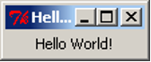
The first thing we notice is that the window already has the minimize, maximize and close buttons. tkInter creates these automatically for us. We also notice that the window can be resized as normal so we can make it look as follows.
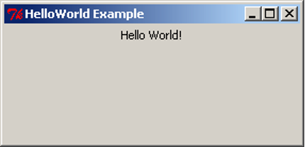
Note that when we resize the window to make it bigger the label will centre itself horizontally but stay at the top of the window. This is the default positioning used by pack. Soon we will see how to use pack to get different positioning.
Basic GUI Code
<div class="language-python highlighter-rouge"><div class="highlight"><pre class="highlight"><code><span class="kn">import</span> <span class="nn">tkinter</span> <span class="k">as</span> <span class="n">tk</span>
root = tk.Tk()
root.title(‘Title String’)
var_1 = tk.Widget(parent_widget, [config_args]) var_1.pack([pack_args]) . . . var_n = tk.Widget(parent_widget, [config_args]) var_n.pack([pack_args])
root.mainloop() </code></pre></div> </div>
This is the basic GUI code layout for tkInter. Here Widget is the type of widget that is to be created, parent_widget is the widget that the current widget is to be packed into, config_args allow optional configuration of the widget upon creation, and pack_args are used to arrange the widget inside its parent widget (we will have a look at these options soon). These arguments follow the form argument_name=argument_value.
Layout
Side
Having all the widgets of our GUI set to the top-centre of the screen, as in the previous example, is not particularly useful. This is especially true when we start getting many widgets and want more complex layouts. The pack method we used in the previous example has many optional arguments that allow us to place the widgets almost wherever we want them.
Let’s have a look at some simple packing examples that will place Label widgets at different edges of the screen.
import tkinter as tk
root = tk.Tk()
root.title("Packing")
right = tk.Label(root, text="I want to sit to the right", bg="light blue")
right.pack(side=tk.RIGHT)
left = tk.Label(root, text = "It's to the left for me", bg="green")
left.pack(side=tk.LEFT)
bottom = tk.Label(root, text="I want to lie on the bottom", bg="red")
bottom.pack(side=tk.BOTTOM)
bottom2 = tk.Label(root, text="I also want to lie on the bottom", bg="pink")
bottom2.pack(side=tk.BOTTOM)
root.mainloop()
This code is very similar to our Hello World example before but we have three labels instead of one. We have also added an extra argument to the Label, bg, which is short for background; it sets the background colour of the widget to the colour specified in the given string.
This colour string can be in words, as long as the colour is in the list of possible colours. Alternatively, we can specify the RGB value of the colour, which represents the amount of red, green and blue in the colour. This is done with a hash (#) followed by six hexadecimal digits. A hexadecimal number is a number in base 16 rather than base 10 (decimal numbers). Because hexadecimal numbers are base 16 we need hexadecimal digits for the numbers 10,11,12,13,14,15. These are, respectively, a,b,c,d,e,f. So, the hexadecimal number ff is the (decimal) number 255 – i.e. 15*16+15. In a hexadecimal number representing a colour, the first two digits represent the red component, the next two the green component, and the last two the blue component. So #ffffff is maximum red, green and blue – i.e. white and, conversely, #000000 is black.
Also notice that there is now an optional argument inside the pack method calls. This is the side argument, which tells the widget to sit towards the edge of the given direction (TOP, BOTTOM, LEFT, RIGHT). Also notice that the side names are in all caps. This is because these are constants in the tkInter library.
{kind=link}
After saving the code to pack_side.py, we can test have a look at the result.
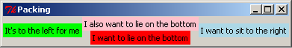
Notice how the widgets are tightly packed. Tk will keep the window to a size that just fits in all the widgets. Let’s experiment with expanding the window.
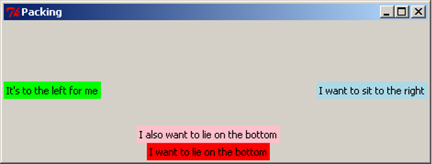
Notice the positioning of the widgets. Using side places widgets into four quadrants of the window. Widgets are also arranged in the order they are packed: the red label was packed before the pink one, so the red one was placed on the bottom before the pink one. Also notice that the background colour only fills up the area of the text in the Label widget, and the remainder of the window is the unused grey background. When the window expands, tkInter allocates more space for the widgets to sit in. Because the widgets don’t change size, they sit in the centre, and the extra space is filled in with grey background. The image above has been digitally altered and reproduced below, with black boxes indicating the space which is allocated for that widget to occupy. Because the blue and green labels were packed first, the red and pink labels do not get the entire width of the window, only what was remaining when they were packed.
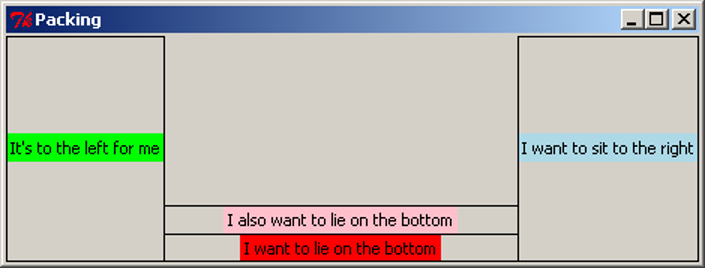
Anchor
When the window expands, each of the widgets is left in the centre of its allocated space. The pack option anchor can be used to specify the direction the widget will sit when the widget is given more space. The anchor argument uses the compass system, valid arguments are N, E, S, W, NE, SE, SW, NW, CENTER (note the American spelling). Here is an example of widgets arranged using anchor:
import tkinter as tk
root = tk.Tk()
root.title("Packing")
right = tk.Label(root, text="I want to sit to the right", bg="light blue")
right.pack(side=tk.TOP, anchor=tk.E)
left = tk.Label(root, text = "It's to the left for me", bg="green")
left.pack(side=tk.TOP, anchor=tk.W)
bottom = tk.Label(root, text="I want to lie on the bottom", bg="red")
bottom.pack(side=tk.TOP, anchor=tk.S)
root.mainloop()
We save our code to pack_anchor.py and have a look at the result.
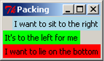
We have packed all the labels with the argument side=TOP, so they appear stacked from top to bottom in the order they were packed. If the side argument is not given, it defaults to TOP, so we could have left it out of the packing arguments, but we have included it as an explicit reminder that we want the labels to be arranged top-to-bottom. Let’s expand the window and see what it looks like.
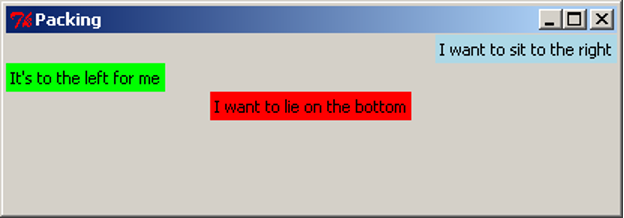
Notice how the widgets have moved left and right but not changed the vertical position. anchor has “pinned” the widgets in the direction specified. For clarity, we again digitally modify this image to show the space that each widget has been given. Notice that the red label has been anchored to the south side, but because it consumes all its allocated space vertically, we cannot observe any difference.
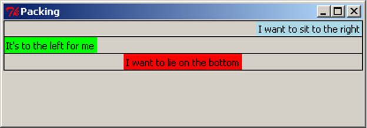
Expand
We have already observed that tkInter allocates the minimal space needed to contain the widget, even when the window is resized. The expand packing option allows widgets to be allocated as much space as possible when the window is resized. The following example (pack_expand.py) makes use of this option.
import tkinter as tk
root = tk.Tk()
root.title("Packing")
right = tk.Label(root, text="I want to sit to the right", bg="light blue")
right.pack(side=tk.RIGHT)
left = tk.Label(root, text = "It's to the left for me", bg="green")
left.pack(side=tk.LEFT, expand=True)
bottom = tk.Label(root, text="I want to lie on the bottom", bg="red")
bottom.pack(side=tk.BOTTOM)
bottom2 = tk.Label(root, text="I also want to lie on the bottom", bg="pink")
bottom2.pack(side=tk.BOTTOM)
root.mainloop()
This is equivalent to the first example, but the left label is packed with the argument expand=True. By default, expand is False, so for simplicity, we leave it out when it is not required. When we resize the window, we see this:
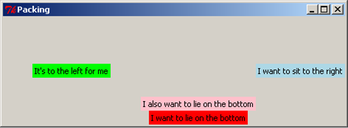
With digital modifications to the image above, we show that the space allocated around the green label expands in both directions when the window is resized, while the red and pink labels do not gain any more space. We can also clearly see that the green label has been anchored to the centre.
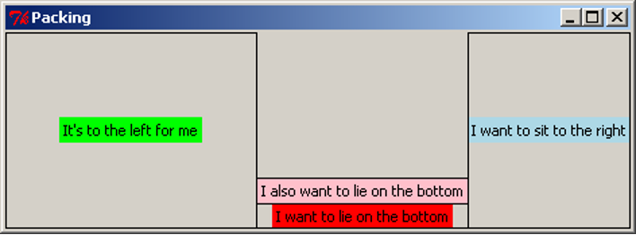
When multiple widgets have the expand=True option, they all expand equally. For example, if this option were turned on for the pink and red labels, resizing the window vertically would give each one the same amount of extra space (equivalent to half the distance the window is resized). This will be demonstrated in the section below.
Fill
When we resize the window, the widgets themselves stay the same size, but tkInter allocates more space to surround the widgets, based on their anchor and expand values. The fill option specifies whether the widget should grow to fill the space allocated for it. Valid arguments are X, Y, BOTH, NONE, which represent filling in the horizontal (X) and vertical (Y) dimensions, both dimensions, or neither (which is the default option). The following example is similar to previous examples, and makes use of the fill parameter:
import tkinter as tk
root = tk.Tk()
root.title("Packing")
right = tk.Label(root, text="I want to sit to the right", bg="light blue")
right.pack(side=tk.RIGHT, fill=tk.X)
left = tk.Label(root, text = "It's to the left for me", bg="green")
left.pack(side=tk.LEFT, fill=tk.Y)
bottom = tk.Label(root, text="I want to lie on the bottom", bg="red")
bottom.pack(side=tk.BOTTOM, expand=True, fill=tk.BOTH)
bottom2 = tk.Label(root, text="I also want to lie on the bottom", bg="pink")
bottom2.pack(side=tk.BOTTOM, expand=True, fill=tk.Y)
root.mainloop()
This code can be downloaded as pack_fill.py. When we run this code and resize the window, we get this result:
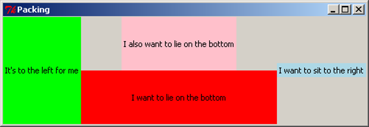
As with the previous examples, we add black borders to show the space allocated around each widget:
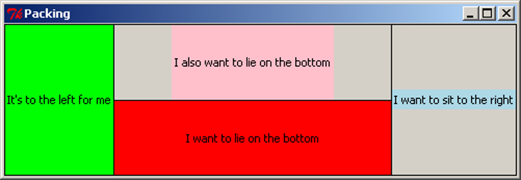
Note that the pink and red labels have been expanded, and together they now occupy the full height of the screen. The red label has been filled in both dimensions, taking up the entire space it can use. The pink label has been filled vertically, so it uses the full height available to it, but there is still grey background to the left and right of it. The green label has also been filled vertically, but because it does not expand horizontally, it appears to fill its entire space. The blue label has been filled in the X dimension, but because the label does not expand, this has no effect.
Padding
For finer control of the size and spacing of widgets, we can use the padding options, padx, pady, ipadx, ipady, which allow us to specify an amount of space to include around the widget, on the inside and outside of the widget (specified as a number of pixels). The following example demonstrates the use of these options.
import tkinter as tk
root = tk.Tk()
root.title("Packing")
right = tk.Label(root, text="I want space to the side", bg="light blue")
right.pack(side=tk.TOP, padx=30)
left = tk.Label(root, text = "I am very wide", bg="green")
left.pack(side=tk.TOP, ipadx=30)
bottom = tk.Label(root, text="I want space above and below", bg="red")
bottom.pack(side=tk.TOP, pady=30)
bottom2 = tk.Label(root, text="I am very tall", bg="pink")
bottom2.pack(side=tk.TOP, ipady=30)
root.mainloop()
This is available to download as pack_pad.py. When we run this code, we get the result shown in the first image below. The second image has been modified to include borders around the labels, shown in purple.
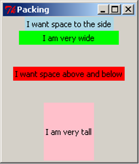 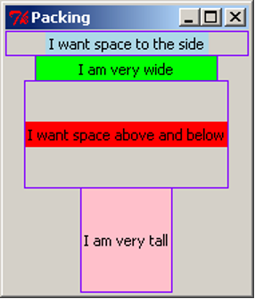
The padx adds space to the left and right of the label, shown by the blue label. If any widgets were to be added to the sides of this label, or if the blue label were to be resized, this space would remain the same. Similarly, the pady inserts padding above and below the red label, and the other labels are moved to accommodate the extra space. The ipadx and ipady options insert padding around the widget, but on the inside of the widget, which makes the labels appear larger, as shown with the green and pink labels.
Packing Options
The pack method of tkInter widgets supports the following optional arguments, which affect how the widgets are arranged and displayed on the screen:
| Option | Description |
|---|---|
side |
Specify which edge to pack this widget against. Can be TOP, BOTTOM, LEFT or RIGHT (if not specified, defaults to TOP). Multiple widgets can be packed on the same side to appear next to each other. |
anchor |
Specify where to position this widget, inside the space which is allocated for it. Can be N, NE, E, SE, S, SW, W, NW or CENTER (defaults to CENTER). |
expand |
Specify (with a boolean value) if the space allocated around the widget should grow and shrink as the window is resized. Note that without the fill option, the widget itself will not be resized, but there will be more space around it. |
fill |
Specify if the widget should fill in the space allocated around it, in one or both of the x and y dimensions. Can be BOTH, X, Y or NONE (defaults to NONE). When used with expand=True, the widget will grow when the window is resized; this is useful for widgets which should always take up as much of the screen as possible, such as the main view area of the application. |
padx, pady, ipadx, ipady |
Specify the amount of space to place inside or around this widget, in pixels. padx and pady will place a certain amount of background space around the widget. ipadx and ipady will add space inside the widget, making it larger. |
Experimenting with different combinations of packing order, and different combinations of side, anchor, expand, fill, and the pad options, will assist in understanding the behaviour of these settings.
Frames
The pack options, side and anchor, only have limited capability for layout. To give us many more options we use a widget called Frame. The Frame widget is a blank widget used for simply containing widgets. This is very useful for creating simple through to complex GUI layouts as it can give us the ability to partition widgets into groups and position each group.
In the next section, we are going to build a simple game which involves moving a circle around the screen. We will have four buttons to represent up/down/left/right controls, and a blank “game screen” area which will show the movement of the circle. For now, we will investigate the layout of the GUI, using Labels. Shortly, we will replace these labels with other kinds of widgets.
import tkinter as tk
root = tk.Tk()
root.title("Look what we can do with frames")
# "Button" labels
controls = tk.Frame(root)
up = tk.Label(controls, text="UP")
up.pack(side=tk.TOP)
left = tk.Label(controls, text="LEFT")
left.pack(side=tk.LEFT)
down = tk.Label(controls, text="DOWN")
down.pack(side=tk.LEFT)
right = tk.Label(controls, text="RIGHT")
right.pack(side=tk.LEFT)
controls.pack(side=tk.LEFT)
# screen Label
screen = tk.Label(root, text="screen", bg="light blue", width=38, height=16)
screen.pack(side=tk.LEFT, expand=True, fill=tk.BOTH)
root.mainloop()
Similar to the Label, the arguments to the Frame constructor are the parent widget (in this case, root), and any configuration options.
The code for the Labels is still mostly the same as we have seen before. The biggest difference is the parent widget is no longer root. For the “buttons” we have given the parent as controls. This makes the labels get packed into the controls Frame. For the screen label, we set a width and height to make it fairly large and square. Experimenting with different values for width and height will eventually give an acceptable size. We also set the screen to expand and fill when the window changes size.
Let’s now save our code to frame_game.py and see what we have created. For clarity, we also show a digitally altered image indicating the borders of the labels (in green) and the frame (in red).
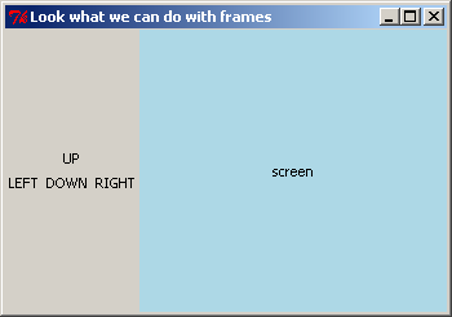 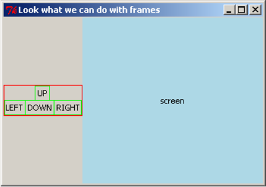
The four control labels have been arranged within the frame as if they were arranged in their own window. The frame can then be placed within the window, and all four buttons will stay grouped together. If this layout was attempted using the side and anchor options alone, it would be very difficult.
Buttons
Having Labels representing buttons does not have much point. Let’s now introduce the real thing, the Button widget. We now rewrite our code from above using the Button widget instead of Label widgets. We also want the buttons to appear the same size, so we will set a width for each one. Because all four should have the same width, we will store the width value as a constant, BUTTON_WIDTH, to ensure we are always using the same width.
import tkinter as tk
BUTTON_WIDTH = 10
root = tk.Tk()
root.title("Buttons are good")
# Buttons
controls = tk.Frame(root)
up = tk.Button(controls, text="UP", width=BUTTON_WIDTH)
up.pack(side=tk.TOP)
left = tk.Button(controls, text="LEFT", width=BUTTON_WIDTH)
left.pack(side=tk.LEFT)
down = tk.Button(controls, text="DOWN", width=BUTTON_WIDTH)
down.pack(side=tk.LEFT)
right = tk.Button(controls, text="RIGHT", width=BUTTON_WIDTH)
right.pack(side=tk.RIGHT)
controls.pack(side=tk.LEFT)
# screen Label
screen = tk.Label(root, text="screen", bg="light blue", width=38, height=16)
screen.pack(side=tk.LEFT, expand=True, fill=tk.BOTH)
root.mainloop()
Creating the Button widgets is again rather simple as they use similar arguments to other widgets we have used. Let’s now save our code as game_screen.py and have a look at our new GUI.
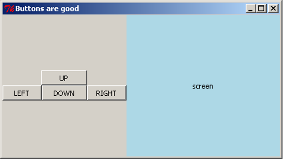
Making Buttons Work
We would like to add functionality to our buttons, so that pressing the button will execute a task. We do this by writing a function that tkInter can call when the button is pressed. When we create the Button, we tell it what function to use through the command argument. For now, we will get the buttons to simply print to the console. We write four functions, one for each button:
import tkinter as tk
BUTTON_WIDTH = 10
root = tk.Tk()
root.title("Buttons are good")
# Functions for the buttons to call
def push_up():
print("UP")
def push_down():
print("DOWN")
def push_left():
print("LEFT")
def push_right():
print("RIGHT")
# Buttons
controls = tk.Frame(root)
up = tk.Button(controls, text="UP", width=BUTTON_WIDTH, command=push_up)
up.pack(side=tk.TOP)
left = tk.Button(controls, text="LEFT", width=BUTTON_WIDTH, command=push_left)
left.pack(side=tk.LEFT)
down = tk.Button(controls, text="DOWN", width=BUTTON_WIDTH, command=push_down)
down.pack(side=tk.LEFT)
right = tk.Button(controls, text="RIGHT", width=BUTTON_WIDTH, command=push_right)
right.pack(side=tk.LEFT)
controls.pack(side=tk.LEFT)
# screen Label
screen = tk.Label(root, text="screen", bg="light blue", width=38, height=16)
screen.pack(side=tk.LEFT, expand=True, fill=tk.BOTH)
root.mainloop()
The command argument takes a function, which is called when the button is pressed. We do not want to execute the function, we want to take the function itself and give it to the Button. To do this, we do not place parentheses after the function name. By passing the function itself to the Button, we give the Button the ability to call the function at any time (in particular, whenever the button is pressed). In this situation, the function is known as a callback function, because we give the Button the ability to call back to a function in the application code.
This code is available as game_screen1.py. Each time we press a button it prints out to the console.
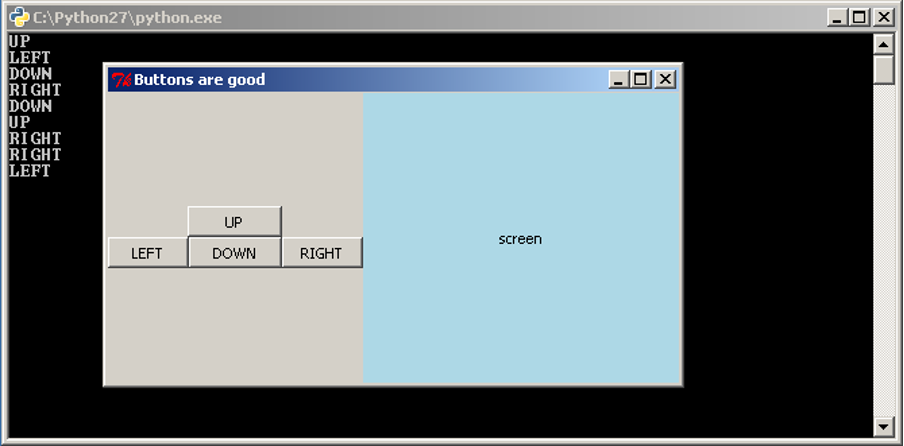
The Entry Widget
We have seen how to interact with the user through buttons, but what about other methods, such as text? tkInter has a widget for this called the Entry widget. The entry widget is a small box that the user can enter text into.
We will start with a simple application that evaluates an expression and prints the result to the console. We will require a Label to label our Entry widget, the Entry widget, and a Button to evaluate the expression. The code is as follows:
import tkinter as tk
root = tk.Tk()
root.title('Expression Evaluator')
label = tk.Label(root, text='Enter Expression: ')
label.pack(side=tk.LEFT)
entry = tk.Entry(root, width=20)
entry.pack(side=tk.LEFT)
def evaluate():
expression = entry.get()
try:
result = eval(expression)
print("The Result is: {0}".format(result))
except Exception as e:
print("An error occurred: {0}".format(e))
calc = tk.Button(root, text="Evaluate", command=evaluate)
calc.pack(side=tk.LEFT)
root.mainloop()
The second widget we create is the Entry widget. We have also used the optional argument width to specify that we want the text area to be 20 characters wide. We then wrote the evaluate function to take the input and print the result. In the first line we used the get method of the Entry widget. This method returns what is in the text area as a string. In this case it is our expression. The next line uses Python’s eval function. eval takes a string representing a Python expression and evaluates it, returning the result.
>>> eval("2+5*4")
22
It is possible that the user has entered an invalid expression or an expression that will raise an exception, so we place a try-except statement around it to print out the error message. The last thing the evaluate function does is print out the result with a message. Let’s save our code as simple_evaluator.py and test it.
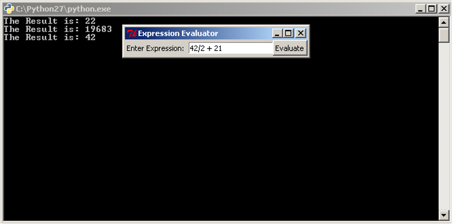
It would be good, however, to be able to do more than just print to the console.
Changing Widgets
All widgets also have a method that allows us to change the way a widget looks. This method is the config method. It has the same optional arguments as the constructor of the widget. Let’s extend our code so that instead of printing the result to the console, it changes the text in a Label so that the result is in the application itself. If there is an error message to show, we will also change the background colour to red. To make this work, we must also change the background colour back to grey when we are showing a result, otherwise the label would stay red after an error message is shown.
import tkinter as tk
root = tk.Tk()
root.title('Expression Evaluator')
label = tk.Label(root, text='Enter Expression: ')
label.pack(side=tk.LEFT)
entry = tk.Entry(root, width=20)
entry.pack(side=tk.LEFT)
def evaluate():
expression = entry.get()
try:
result = eval(expression)
answer.config(text="The Result is: {0}".format(result), bg="grey")
except Exception as e:
answer.config(text="An error occurred: {0}".format(e), bg="red")
calc = tk.Button(root, text="Evaluate", command=evaluate)
calc.pack(side=tk.LEFT)
answer = tk.Label(root, text="", bg="grey")
answer.pack(side=tk.LEFT)
root.mainloop()
This code is almost the same, we have just added a new Label and changed the last line in the evaluate function. The change to the last line calls config on our new Label, answer and sets the text to the result.
Now saving our code as simple_evaluator_nc.py, we can have a look at our new application.
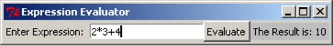
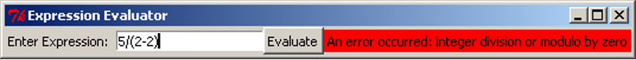
When an error message is shown, the label will keep the error message visible until a new expression is entered. This may be discomforting for the user, so we consider ways to fix this issue. One option would be to add a second button that resets the label back to grey and clears the message. It is also possible to reset the label whenever the user resumes typing in the Entry box.
So far we have covered a lot of different GUI widgets and aspects of creating GUIs. Yet we have been writing our code in a rather linear fashion. In the remainder of this section, and in the next section, we will look at restructuring our GUI programs using classes. This is to make the source code easier to read and maintain.
GUI Design Using Classes
Classes can be used to simplify our GUI code, especially as the GUI and program gets more complex. We are going to rewrite our expression evaluator using a class. The code is below:
import tkinter as tk
class EvalApp(object):
"""Simple application to allow a user to enter an expression and evaluate it.
"""
def __init__(self, master):
"""Initialise the expression evaluator's application window.
Parameters:
master (Tk): Main window for application.
"""
self._master = master
master.title('Expression Evaluator')
self._num = 0.0
expressionLbl = tk.Label(master, text='Enter Expression: ')
expressionLbl.pack(side=tk.LEFT)
self._entry = tk.Entry(master, width=20)
self._entry.pack(side=tk.LEFT)
self._entry.insert(tk.END, str(self.num))
evalBtn = tk.Button(master, text="Evaluate", command=self.evaluate)
evalBtn.pack(side=tk.LEFT)
self._result = tk.Label(master, text="", bg="grey")
self._result.pack(side=tk.LEFT, padx=20)
def evaluate(self):
"""Evaluates the expression in the Entry widget and
displays the result in the result Label.
"""
try:
self._num = eval(self._entry.get())
self._result.config(text="The Result is: {0}".format(self._num),
bg="grey")
except Exception as e:
self._result.config(text="An error occurred: {0}".format(e), bg="red")
root = tk.Tk()
app = EvalApp(root)
root.mainloop()
The most noticeable change is the order of the code, the class needs to be written first so that the class is defined before we try to use it. The next thing to notice is the use of master as a parameter in the class’ constructor, and as the parent class for the widgets. master is used by convention to signify the “highest level” class. master is passed the value of Tk when the EvalApp object is created. We have added a self._num instance variable as well, this is the same as the result variable we used before, we also use it when creating the Entry widget to give our application a slightly more professional look. The first widget we create is a Label, but we do not assign it as an instance variable. As we just want this widget to display and not access it later, we do not need to store it in the class structure. We do the same for the Button widget.
When we create the Entry widget this time we also use the insert method. insert inserts a string into the Entry widget at a location, in this case the string of self._num at the end of any text in there. The rest of the class is mostly the same code we had before.
After the class definition we have the Tk code. In this case we only need three lines because our class does all the work. The first and last line we already know. The middle line creates an instance of our class passing root into the constructor. As root is an instance of Tk, we are passing in a Tk object.
We can now save our code as evaluator_class.py and have a look.
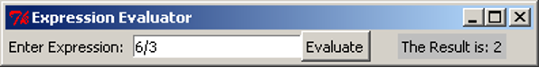
Apart from the small changes to the GUI that we made it looks and works exactly the same as what we had before.
Three people have just fallen past that window
Graphical User Interfaces – Part 2
Structuring GUI Code
When writing GUI code, we often want to group widgets. This typically happens when we want these widgets to appear together in our GUI and/or when these widgets, as a group, have a role in the program. We can think of this as creating our own widget. We will take our game screen example from the previous section as an example. The four directional buttons could be grouped together into a single “controls” widget that can be dealt with separately. To do this, we will write a class that inherits from Frame and contains our directional buttons.
import tkinter as tk
class Controls(tk.Frame):
"""Widget containing four directional buttons."""
BUTTON_WIDTH = 10
def __init__(self, parent):
"""Set up the four directional buttons in the frame.
Parameters:
parent (Tk): Window in which this widget is to be placed.
"""
super().__init__(parent)
upBtn = tk.Button(self, text="UP", width=self.BUTTON_WIDTH,
command=self.push_up)
upBtn.pack(side=tk.TOP)
leftBtn = tk.Button(self, text="LEFT", width=self.BUTTON_WIDTH,
command=self.push_left)
leftBtn.pack(side=tk.LEFT)
downBtn = tk.Button(self, text="DOWN", width=self.BUTTON_WIDTH,
command=self.push_down)
downBtn.pack(side=tk.LEFT)
rightBtn = tk.Button(self, text="RIGHT", width=self.BUTTON_WIDTH,
command=self.push_right)
rightBtn.pack(side=tk.LEFT)
def push_up(self):
print("UP")
def push_down(self):
print("DOWN")
def push_left(self):
print("LEFT")
def push_right(self):
print("RIGHT")
class GameApp(object):
"""Basic game window design."""
def __init__(self, master):
"""Initialise the game window layout
with four directional buttons widget and a screen.
Parameters:
master (Tk): Main window for application.
"""
master.title("Buttons are good")
controls = Controls(master)
controls.pack(side=tk.LEFT)
screen = tk.Label(master, text="screen", bg="light blue",
width=38, height=16)
screen.pack(side=tk.LEFT, expand=True, fill=tk.BOTH)
root = tk.Tk()
app = GameApp(root)
root.mainloop()
The first class we wrote is our Controls class, to represent the directional buttons widget. This class inherits from Frame, so the __init__ method calls Super().__init__ with the argument parent. Conventionally parent is the name used for the widget that will contain this one, i.e. its parent. In this case, the Controls widget will be contained inside the root Tk object. We might consider another application where the Controls widget is packed inside a different container widget, such as another Frame.
The __init__ method then creates our four buttons. Again, as we are not expecting to update or get information from our buttons we do not need to store them in class variables. We want to pack the buttons into the Controls instance (recall that Controls is just a specialisation of a Frame, so we can pack widgets into it). To do this, we set the parent widget of the buttons as self, the Controls object.
The Controls class contains four more methods, which are used as the callbacks for the buttons. By writing these methods in the Controls class, we make it clear that they will only be used by the four buttons contained in this widget. It also gives these methods access to any information in the Controls object, which might be necessary if the buttons needed to do more complex tasks.
In the GameApp class we now only need to create two widgets, our Controls widget and the Label widget. (Where we are using the Label to represent the game’s screen.)
We can now save our code as game_screen_classes.py and have a look.

Writing the code this way, where we group sets of related widgets into classes, makes the code look very simple, and it is. It is easy code to read, debug and modify, which is why this method is preferred.
As well as Frame, tkInter includes other blank container widgets to arrange widgets inside. The Toplevel widget represents a new blank window. This can be useful for creating dialog boxes within an application, by creating a class which inherits from Toplevel.
The Canvas
We have already seen the Label, Button and Entry widgets and now we consider the Canvas widget. The Canvas widget represents a space for drawing objects on the screen, such as lines, ovals and polygons. The following example shows the use of some of the drawing methods available.
import tkinter as tk
class CanvasApp(object):
def __init__(self, master):
master.title("Canvas")
self._canvas = tk.Canvas(master, bg="white", width=500, height=500)
self._canvas.pack(side=tk.TOP, expand=True, fill=tk.BOTH)
frame = tk.Frame(master)
drawBtn = tk.Button(frame, text="Draw", command=self.draw)
drawBtn.pack(side=tk.LEFT)
dltBtn = tk.Button(frame, text="Delete", command=self.delete)
dltBtn.pack(side=tk.LEFT)
frame.pack(side=tk.TOP)
def draw(self):
# Example 1
self._canvas.create_line([(0, 0), (150, 50), (200, 200)])
# Example 2
self._canvas.create_polygon([(300, 50), (330, 80), (300, 140), (270, 80)])
# Example 3
self._canvas.create_oval(250, 200, 300, 300, outline="red", width=5)
# Example 4
self._canvas.create_rectangle(350, 350, 431, 400, fill="blue")
# Example 5
centre = (100, 400)
radius = 50
self._canvas.create_oval(centre[0]-radius, centre[1]-radius,
centre[0]+radius, centre[1]+radius)
self._canvas.create_rectangle(centre[0]-radius, centre[1]-radius,
centre[0]+radius, centre[1]+radius)
def delete(self):
self._canvas.delete(tk.ALL)
root = tk.Tk()
app = CanvasApp(root)
root.mainloop()
This code is available as canvas.py. When we run the script, we see a blank white screen with two buttons. When we click on the “Draw” button, we see this result:

First, the CanvasApp creates and packs a Canvas with a white background, and a width and height of 500 pixels. Each of the drawing methods of the Canvas use a coordinate system in pixels, where (0, 0) is the top-left, the positive x direction is to the right, and the positive y direction is down the screen. Note that this is different from the standard Cartesian coordinate system where the positive y direction is up. The coordinates of the bottom-right corner of the canvas are the same as the width and height of the canvas.
Note, we did not create a separate widget for the two control buttons, Draw and Delete. As there are only two buttons, this example did not call for the creation of a new widget.
The first object drawn on the canvas is a line. The create_line method takes a sequence of x and y coordinates, and draws a straight line between each pair of coordinates. The example above shows a line drawn from (0, 0) in the top-left corner, through (150, 50), ending at (200, 200). create_line can also be used to draw a curve or freehand line, by drawing straight lines with many coordinates placed very close together. This does not make an exact curve, but it will appear very close to a curve when viewed on a monitor.
The second object drawn here is a polygon. Similar to drawing a line, it takes a sequence of coordinates. The polygon is then drawn with these coordinates as the vertices, and then the polygon is filled in (coloured black by default). This example shows a kite shape, drawn in the order of the coordinates specified. Note that unlike the create_line method, create_polygon will join the last pair of coordinates back to the first (which is necessary to draw a closed polygon).
Example 3 above draws a red oval. Here, we specify four coordinates, representing the leftmost x-coordinate, the uppermost y-coordinate, the rightmost x-coordinate, and the lowermost y-coordinate. Another way to visualise the drawing of the oval is to imagine a rectangle drawn around it, such as the square and circle arrangement in the above image. When drawing the oval, we specify the top-left and bottom-right corners of the surrounding rectangle, and the oval is drawn inside. Here, we also make use of two optional arguments, outline and width. Each of the Canvas “create” methods can accept optional arguments to specify other details, such as colour and line width. outline and width are used to specify the colour and width of the oval’s outline.
Example 4 draws a blue rectangle. To do this, we specify the coordinates of the top-left and bottom-right corners of the rectangle. Here we have also used another optional argument, fill, to specify the internal colour of the rectangle. By default, ovals and rectangles are transparent. Notice though that the rectangle still has a black border, but it can be hard to spot, because it is only one pixel wide. To set the entire rectangle to the same colour, we would either set the outline to the same colour, or set the outline width to 0 to remove the outline entirely.
In the final example, we draw a circle by specifying a centre and radius, then using simple arithmetic to create an oval at the desired coordinates. We also draw a square at the same coordinates. If we were writing an application that involved drawing a lot of circles, we might consider writing a method that takes a pair of coordinates and a radius, and draws a circle centred at those coordinates. This would make the drawing part of the application much easier to write.
The Canvas has a delete method, which can be used to remove drawings from the screen. Clicking on the “Delete” button will call self._canvas.delete(tk.ALL), which deletes all the drawings. Clicking on “Draw” will bring them back. Note that clicking on “Draw” multiple times will actually draw a complete set of new objects on the canvas each time, but because they all overlap, we only see one set of drawings.
Customising Widgets
We will continue with the game example and replace the screen label with a Canvas. In doing this, we will need to think about the logic of the application. What will be the initial setup of the screen area? What information about the game will need to be stored in the program? How will user interactions change the internal state, and how do we show this change in the screen?
In this simple example, the game involves a circle shown on the screen, initially in the centre. Pressing the four buttons will move the circle around the screen, drawing lines behind it to form a path. To do this, the application will need to keep track of where the circle is, and all the coordinates of where it has been. When updating a figure or drawing on a Canvas widget, it can often be easiest to clear the entire canvas, then redraw everything from scratch.
Now that we have investigated the functionality required for the canvas, we realise that each of the buttons needs to take a number of steps to complete its task. Because this all seems to be the work of the Canvas, we will customise Canvas to have extra methods and attributes to fit our situation. That is, we will write a subclass of Canvas which has this functionality.
class Screen(tk.Canvas):
"""A customised Canvas that can move a circle and draw a path."""
SIZE = 230 # The size of the screen.
RADIUS = 5 # The radius of the circle
MOVE = 10 # The amount to move on each step
def __init__(self, parent):
"""Create and initialise a screen.
Parameters:
parent (Tk): Window in which this screen is to be placed.
"""
super().__init__(parent, bg="light blue", width=self.SIZE,
height=self.SIZE)
# Start in the centre, without any points in the path.
self._x, self._y = (self.SIZE / 2, self.SIZE / 2)
self._path = [(self._x, self._y)]
self._redraw()
def _redraw(self):
"""Redraw the game screen after a move."""
self.delete(tk.ALL)
coords = (self._x - self.RADIUS,
self._y - self.RADIUS,
self._x + self.RADIUS,
self._y + self.RADIUS)
self.create_oval(coords, fill="black", width=0)
if len(self._path) > 1:
self.create_line(self._path)
def _move(self, dx, dy):
"""Move the circle by a given amount.
Parameters:
dx (int): Amount to move in the x-coordinate.
dy (int): Amount to move in the y-coordinate.
"""
self._x += dx
self._y += dy
self._path.append((self._x, self._y))
self._redraw()
def move_up(self):
"""Move the circle up."""
self._move(0, -self.MOVE)
def move_down(self):
"""Move the circle down."""
self._move(0, self.MOVE)
def move_left(self):
"""Move the circle left."""
self._move(-self.MOVE, 0)
def move_right(self):
"""Move the circle right."""
self._move(self.MOVE, 0)
This Screen will store the current coordinates of the circle, and a list of coordinates it has been to. The private method _redraw will delete and redraw the circle and path on the screen, which is done at the beginning and after every movement. The methods move_up, move_down, move_left and move_right will perform the actions required by the four buttons. Note that, as Screen inherits from Canvas, it can make method calls such as self.delete(tk.ALL) and self.create_oval to draw on the canvas. We can now modify the Controls and GameApp classes to use a Screen:
class Controls(tk.Frame):
"""Widget containing four directional buttons."""
BUTTON_WIDTH = 10
def __init__(self, parent):
"""Set up the four directional buttons in the frame.
Parameters:
parent (Tk): Window in which this widget is to be placed.
screen (Screen): Screen which has the movement methods.
"""
super().__init__(parent)
upBtn = tk.Button(self, text="UP", width=self.BUTTON_WIDTH,
command=screen.move_up)
upBtn.pack(side=tk.TOP)
leftBtn = tk.Button(self, text="LEFT", width=self.BUTTON_WIDTH,
command=screen.move_left)
leftBtn.pack(side=tk.LEFT)
downBtn = tk.Button(self, text="DOWN", width=self.BUTTON_WIDTH,
command=screen.move_down)
downBtn.pack(side=tk.LEFT)
rightBtn = tk.Button(self, text="RIGHT", width=self.BUTTON_WIDTH,
command=screen.move_right)
rightBtn.pack(side=tk.LEFT)
class GameApp(object):
"""Basic game window design."""
def __init__(self, master):
"""Initialise the game window layout with
four directional buttons and a screen.
Parameters:
master (Tk): Main window for application.
"""
master.title("Game")
screen = Screen(master)
controls = Controls(master, screen)
controls.pack(side=tk.LEFT)
screen.pack(side=tk.LEFT, expand=True, fill=tk.BOTH)
The updated Controls class now also requires the Screen object, and it uses this to access the four methods needed as Button callbacks. The GameApp is also modified to create a Screen instead of a Label. This code is available to download as game_canvas.py. When we interact with this program, we see this result:

Aside: Separating the Controls and Screen
The constructor of the Controls class above requires an object called screen, and it uses this to access move_up, move_left, move_down and move_right, which should be methods that perform the relevant actions. For this program, there is no problem, but what if we wanted to modify the program? There are several potential issues to watch out for.
If we modified (or replaced) the Screen and renamed the four movement methods, we would need to modify the code in Controls. Worse, if the methods were moved into separate classes, or made into top-level functions, we could no longer pass in a single object to Controls which can access all the methods. This is still not a major issue in an application this small, but in a larger application, many other classes could be dependent on the Screen, which would cause problems when we tried to change the Screen. We could also imagine a situation where multiple Controls widgets were needed, each requiring different method names.
To fix these issues, we can modify the Controls class to require the four callback functions directly; then the internals of Controls would still work, even if the methods were renamed or moved. We then have this result:
<div class="language-python highlighter-rouge"><div class="highlight"><pre class="highlight"><code><span class="k">class</span> <span class="nc">Controls</span><span class="p">(</span><span class="n">tk</span><span class="o">.</span><span class="n">Frame</span><span class="p">):</span>
<span class="n">BUTTON_WIDTH</span> <span class="o">=</span> <span class="mi">10</span>
<span class="k">def</span> <span class="nf">__init__</span><span class="p">(</span><span class="bp">self</span><span class="p">,</span> <span class="n">parent</span><span class="p">,</span> <span class="n">up</span><span class="p">,</span> <span class="n">down</span><span class="p">,</span> <span class="n">left</span> <span class="n">right</span><span class="p">):</span>
<span class="nb">super</span><span class="p">()</span><span class="o">.</span><span class="n">__init__</span><span class="p">(</span><span class="n">parent</span><span class="p">)</span>
<span class="n">upBtn</span> <span class="o">=</span> <span class="n">tk</span><span class="o">.</span><span class="n">Button</span><span class="p">(</span><span class="bp">self</span><span class="p">,</span> <span class="n">text</span><span class="o">=</span><span class="s">"UP"</span><span class="p">,</span> <span class="n">width</span><span class="o">=</span><span class="bp">self</span><span class="o">.</span><span class="n">BUTTON_WIDTH</span><span class="p">,</span>
<span class="n">command</span><span class="o">=</span><span class="n">up</span><span class="p">)</span>
<span class="n">upBtn</span><span class="o">.</span><span class="n">pack</span><span class="p">(</span><span class="n">side</span><span class="o">=</span><span class="n">tk</span><span class="o">.</span><span class="n">TOP</span><span class="p">)</span>
<span class="n">leftBtn</span> <span class="o">=</span> <span class="n">tk</span><span class="o">.</span><span class="n">Button</span><span class="p">(</span><span class="bp">self</span><span class="p">,</span> <span class="n">text</span><span class="o">=</span><span class="s">"LEFT"</span><span class="p">,</span> <span class="n">width</span><span class="o">=</span><span class="bp">self</span><span class="o">.</span><span class="n">BUTTON_WIDTH</span><span class="p">,</span>
<span class="n">command</span><span class="o">=</span><span class="n">left</span><span class="p">)</span>
<span class="n">leftBtn</span><span class="o">.</span><span class="n">pack</span><span class="p">(</span><span class="n">side</span><span class="o">=</span><span class="n">tk</span><span class="o">.</span><span class="n">LEFT</span><span class="p">)</span>
<span class="n">downBtn</span> <span class="o">=</span> <span class="n">tk</span><span class="o">.</span><span class="n">Button</span><span class="p">(</span><span class="bp">self</span><span class="p">,</span> <span class="n">text</span><span class="o">=</span><span class="s">"DOWN"</span><span class="p">,</span> <span class="n">width</span><span class="o">=</span><span class="bp">self</span><span class="o">.</span><span class="n">BUTTON_WIDTH</span><span class="p">,</span>
<span class="n">command</span><span class="o">=</span><span class="n">down</span><span class="p">)</span>
<span class="n">downBtn</span><span class="o">.</span><span class="n">pack</span><span class="p">(</span><span class="n">side</span><span class="o">=</span><span class="n">tk</span><span class="o">.</span><span class="n">LEFT</span><span class="p">)</span>
<span class="n">rightBtn</span> <span class="o">=</span> <span class="n">Button</span><span class="p">(</span><span class="bp">self</span><span class="p">,</span> <span class="n">text</span><span class="o">=</span><span class="s">"RIGHT"</span><span class="p">,</span> <span class="n">width</span><span class="o">=</span><span class="bp">self</span><span class="o">.</span><span class="n">BUTTON_WIDTH</span><span class="p">,</span>
<span class="n">command</span><span class="o">=</span><span class="n">right</span><span class="p">)</span>
<span class="n">rightBtn</span><span class="o">.</span><span class="n">pack</span><span class="p">(</span><span class="n">side</span><span class="o">=</span><span class="n">tk</span><span class="o">.</span><span class="n">LEFT</span><span class="p">)</span>
class GameApp(object): def init(self, master): master.title(“Game”) screen = Screen(master) controls = Controls(master, screen.move_up, screen.move_down, screen.move_left, screen.move_right) controls.pack(side=tk.LEFT) screen.pack(side=tk.LEFT, expand=True, fill=tk.BOTH) </code></pre></div> </div>
The GameApp is also modified to access the respective methods of Screen. In a sense, we have now completely separated the Controls and Screen classes, and the interaction between them is defined entirely by the GameApp class. In a larger application, moving all of this control to the one class will make it much easier to treat all the other classes as distinct from each other.
The implementation for this code is provided in game_canvas_sep_controls.py.
Events
The program we wrote above feels difficult to use. In particular, the use of the four buttons is unintuitive. We would like the user to interact directly with the canvas using mouse gestures. tkInter provides a means of doing this using events. An event is a trigger which occurs when the user makes an action with the mouse or keyboard. For example, when the user makes a left click, tkInter will trigger a <Button-1> event, and when the user drags the mouse with a left click, tkInter will trigger a <B1-Motion> event. To use these types of event, we must bind the event to a callback function, similar to a callback function for a Button. Widgets have a method bind which takes an event name (as a string) and a callback function. The function must take one argument, typically called event, which contains information on the trigger that occurred. For example, if the mouse was clicked or moved, the event would contain the coordinates of the cursor.
As an example, we will modify the game screen example so that clicking and dragging will move the circle. We should again consider the application logic: what should happen when the mouse is pressed or released? What should happen when the pressed mouse is dragged slightly? If the mouse is pressed, we should look to see if we have clicked on the circle, and if so mark it as being “selected”. When the mouse is dragged, we should see if the circle has been selected, and if so move it accordingly. When the mouse is released, then we mark the circle as “deselected”.
import tkinter as tk
import math
class Screen(tk.Canvas):
""Customised Canvas that can move a circle and draw a path."""
SIZE = 230 # The size of the screen.
RADIUS = 5 # The radius of the circle
def __init__(self, parent):
"""Create and initialise a screen.
Parameters:
parent (Tk): Window in which this screen is to be placed.
"""
super().__init__(parent, bg="light blue", width=self.SIZE,
height=self.SIZE)
# Start in the centre, without any points in the path.
self._x, self._y = (self.SIZE / 2, self.SIZE / 2)
self._path = [(self._x, self._y)]
self._circle_select = False # Is the circle selected.
self.bind("<Button-1>", self._click_event)
self.bind("<B1-Motion>", self._move_event)
self._redraw()
def _redraw(self):
"""Redraw the game screen after a move."""
self.delete(tk.ALL)
coords = (self._x - self.RADIUS,
self._y - self.RADIUS,
self._x + self.RADIUS,
self._y + self.RADIUS)
self.create_oval(coords, fill="black", width=0)
if len(self._path) > 1:
self.create_line(self._path)
def _move(self, dx, dy):
"""Move the circle by a given amount.
Parameters:
dx (int): Amount to move in the x-coordinate.
dy (int): Amount to move in the y-coordinate.
"""
self._x += dx
self._y += dy
self._path.append((self._x, self._y))
self._redraw()
def _click_event(self, event):
"""Sets whether the circle is selected.
Parameters:
event (tk.Event): Selection event with mouse coordinates.
"""
dist_to_circle = math.hypot(event.x - self._x, event.y - self._y)
self._circle_select = (dist_to_circle < self.RADIUS)
def _move_event(self, event):
"""Calculates the distance to move the circle so that it moves
With the mouse.
Parameters:
event (tk.Event): Drag event with the new mouse coordinates.
"""
if self._circle_select:
dx = event.x - self._x
dy = event.y - self._y
self._move(dx, dy)
class GameApp(object):
"""Basic game to move a circle around a screen with the mouse."""
def __init__(self, master):
"""Initialise the game screen.
Parameters:
master (Tk): Main window for application.
"""
screen = Screen(master)
screen.pack(side=tk.LEFT, expand=True, fill=tk.BOTH)
root = tk.Tk()
app = GameApp(root)
root.mainloop()
We have removed the buttons as they are no longer needed, we will now have full control over the circle with the mouse. The first big change to notice is the addition of three new lines in the Screen.__init__ method. The first line is simply a boolean value to tell if the circle is selected. The next two lines are calling the bind method. bind takes a string as the first argument for what type of event we are interested in. The second argument is the method to call when that event occurs. The two events we are interested in is Button-1 (If the left mouse button is clicked) and B1-Motion (If the mouse is moved while the left mouse button is held down).
Next, we have removed the four move methods of Screen and replaced them with two new methods. These methods are the methods called by our two bound events. Notice how each takes an argument event. This argument is the event. It is a class of Python and contains information about the event that occurred. We can use event to access the x, y location of the mouse when the event occurred by accessing the class variable. The _click_event method sets self._circle_select to a boolean value representing whether or not the mouse is inside the circle. The _move_event method calculates the distance between where the circle is and where the mouse is so that we can move the circle to the mouse’s location.
We can now save our code as game.py and have a look at our new game.

We can now move the circle any way that we wish at any time just by simply moving the mouse.
More About Events
Here is a table of some of the events that can be used. (Sourced from http://www.python-course.eu/tkinter_events_binds.php)
| Events | Description |
|---|---|
<Button-1> |
A mouse button is pressed over the widget. Button 1 is the leftmost button, button 2 is the middle button (where available), and button 3 the rightmost button. When a mouse button is pressed down over a widget, Tkinter will automatically “grab” the mouse pointer, and mouse events will then be sent to the current widget as long as the mouse button is held down. The current position of the mouse pointer (relative to the widget) is provided in the x and y members of the event object passed to the callback. |
<B1-Motion> |
The mouse is moved, with mouse button 1 being held down (use B2 for the middle button, B3 for the right button). The current position of the mouse pointer is provided in the x and y members of the event object passed to the callback. |
<Return> |
The user pressed the Enter key. Virtually all keys on the keyboard can be bound to. For an ordinary 102-key PC-style keyboard, the special keys are Cancel (the Break key), BackSpace, Tab, Return(the Enter key), Shift_L (any Shift key), Control_L (any Control key), Alt_L (any Alt key), Pause, Caps_Lock, Escape, Prior (Page Up), Next (Page Down), End, Home, Left, Up, Right, Down, Print, Insert, Delete, F1, F2, F3, F4, F5, F6, F7, F8, F9, F10, F11, F12, Num_Lock, and Scroll_Lock. |
<Key> |
The user pressed any key. The key is provided in the char member of the event object passed to the callback (this is an empty string for special keys). |
a |
The user typed an “a”. Most printable characters can be used as is. The exceptions are space (<space>) and less than (<less>). Note that 1 is a keyboard binding, while <1> is a button binding. |
<Configure> |
The widget changed size (or location, on some platforms). The new size is provided in the width and height attributes of the event object passed to the callback. |
Some of the attributes of the event class
| Attribute | Description |
| —————— | ———————————————————— |
| x, y | The current mouse position, in pixels. |
| x_root, y_root | The current mouse position relative to the upper left corner of the screen, in pixels. |
| char | The character code (keyboard events only), as a string. |
| width, height | The new size of the widget, in pixels (Configure events only). |
| type | The event type. |
More tkInter
In this example, we will create a simple text editor application. This text editor will be able to open, edit, save and close files. We will also keep track of whether the text file has been edited without saving, and prompt the user to save before exiting.
We will introduce a new widget, Text, to represent the text editing area. This widget has three methods which will be useful in this application: text.get(1.0, tk.END) will retrieve the text which has been entered into the widget, text.delete(1.0, tk.END) will remove all the text from the widget, and text.insert(tk.END, string) will insert a string of text into the widget. There are many other types of widgets not described here, to represent other GUI elements, such as lists of elements, scroll bars, check boxes, and radio buttons. Each has its own set of methods which are useful in manipulating the information that type of widget stores.
To open and save files, we will use the tkInter filedialog module. This module is imported using the other type of import that is performed as follows: from module import submodule_or_class This comes with two methods, askopenfilename for choosing a file to open, and asksaveasfilename for choosing a file to save to. These functions will open a dialog box prompting the user to choose a file, and then return the file name. The appearance of the dialog boxes is determined by the operating system (that is, it is a native dialog box), so the user will already be familiar with using the dialog without requiring effort from the programmer.
We will also need to display short dialog message boxes. When the user tries to abandon a file without saving changes, we will prompt them to save. We will add this functionality to an “Exit” menu item, as well as when the user closes the window using the “X” button on the top of the window. We will also create a simple “About” dialog box, giving information about the text editor when the user asks for it. These dialog boxes will be modal; this means that the user will not be able to continue using the application until they respond to the dialog. We will use tkInter’s messagebox module. This comes with several functions for showing different types of dialog such as errors, warnings, “Yes/No” or “Retry/Cancel” questions. They can be customised to show different titles, messages, icons and buttons, and will return a value based on the user’s button choice.
We will also introduce the Menu widget, for adding the native menus on the top of the window. To make a set of menus, we create a Menu object to represent the menu bar. We then add more Menu objects to represent each of the drop-down menus. To add individual menu items, we give them a label and assign a callback command, just as we create callbacks for buttons.
We will now write the text editor application. As well as constructing the GUI, we will need to store the filename of the document being edited. We will also store a boolean flag indicating whether or not the file has been edited without saving. When we attempt to close the file or open a new one, we will check to see if the user wishes to save their work.
import tkinter as tk
from tkinter import filedialog
from tkinter import messagebox
class TextEditor(object) :
"""Simple text editing application."""
def __init__(self, master) :
""" Create the screen for the text editor
Parameters:
master (Tk): Window in which this application is to be displayed.
"""
self._master = master
master.title("Text Editor")
self._filename = ''
self._is_edited = False
self._text = tk.Text(master)
self._text.pack(side=tk.TOP, expand=True, fill=tk.BOTH)
self._text.bind("<Key>", self._set_edited)
# Create the menu.
menubar = tk.Menu(master)
master.config(menu=menubar)
filemenu = tk.Menu(menubar)
menubar.add_cascade(label="File", menu=filemenu)
filemenu.add_command(label="New", command=self.new)
filemenu.add_command(label="Open", command=self.open_file)
filemenu.add_command(label="Save", command=self.save)
filemenu.add_command(label="Save As...", command=self.save_as)
filemenu.add_command(label="Exit", command=self.close)
helpmenu = tk.Menu(menubar)
menubar.add_cascade(label="Help", menu=helpmenu)
helpmenu.add_command(label="About", command=self.about)
master.protocol("WM_DELETE_WINDOW", self.close)
def new(self) :
"""Create a new text file."""
if self._can_close() :
# Forget about the currently open file.
self._text.delete(1.0, tk.END)
self._filename = ''
self._master.title("Text Editor")
self._is_edited = False
def open_file(self) :
"""Open a text file."""
if not self._can_close() :
return
self._filename = filedialog.askopenfilename()
if self._filename :
f = open(self._filename, "r")
text = f.read()
f.close()
self._text.delete(1.0, tk.END)
self._text.insert(tk.END, text)
self._master.title("Text Editor: {0}".format(self._filename))
self._is_edited = False
def save(self) :
""" Save the contents of the text in memory to the file."""
if not self._filename :
self._filename = filedialog.asksaveasfilename()
self._perform_save()
def save_as(self) :
""" Allow saving the contents of the text in memory to a new file."""
filename = filedialog.asksaveasfilename()
if filename :
self._filename = filename
self._perform_save()
def close(self) :
"""Exit the text editor application."""
if self._can_close() :
self._master.destroy()
def about(self) :
"""Generate an 'About' dialog."""
messagebox.showinfo(title="Text Editor", message="A simple text editor")
def _set_edited(self, event) :
"""Record that the text file has been edited.
Parameters:
event (Tk.Event): Record that text has been edited if any event
occurs in the text.
"""
self._is_edited = True
def _perform_save(self) :
"""Store the contents in memory into a file."""
if self._filename:
self._master.title("Text Editor: {0}".format(self._filename))
f = open(self._filename, "w")
text = self._text.get(1.0, tk.END)[:-1]
f.write(text)
f.close()
self._is_edited = False
def _can_close(self) :
""" Ask the user if they want to save the changed text to a file.
Returns:
(bool) True if it is safe to close the file;
False if the user wants to continue editing.
"""
can_close = True
if self._is_edited :
reply = messagebox.askquestion(type=messagebox.YESNOCANCEL,
title="File not saved!",
message="Would you like to save this file?")
if reply == messagebox.YES :
self.save() # can_close is already True.
# elif reply == messagebox.NO :
# can_close is already True.
elif reply == messagebox.CANCEL :
can_close = False
# else file is not edited, so can close.
return can_close
if __name__ == "__main__" :
root = tk.Tk()
TextEditor(root)
root.mainloop()
First, we will look at the __init__ method. We create and pack a Text, and bind the "<Key>" event to a method which will set the _is_edited flag to True whenever a key is pressed. The statement menubar = tk.Menu(master) will create a menu bar for the master window, and in the line below, we configure the master to display this menu bar. To create menus, tk.Menu(menubar) will create an empty menu list, and menubar.add_cascade will insert it onto the menu bar with the given text label. To add a menu item, we use the method add_command, and pass in a text label to display, and a callback function, just as with Button objects. If, for example, we wanted to create a sub-menu to the “File” menu, we would create tk.Menu(filemenu) and call filemenu.add_cascade; menu items and further sub-menus can then be added into this menu. The statement master.protocol("WM_DELETE_WINDOW", self.close) is similar to a binding; it allows us to set an action to perform when a particular event occurs. In this case, "WM_DELETE_WINDOW" is the event represented by closing the window (using the “X” icon), and we set the self.close method as a callback. Note that the same callback is also assigned to the “File -> Exit” menu item, so either of these actions will do the same thing.
In the new, open and close methods, we need to check if the user has edited the file and wishes to save. To do this, we use the _can_close helper method to ask this question, save if necessary, and return False if the user wishes to continue editing the file. Since the save and save_as functionality is similar (they both save the text to a file), we abstract this to the _perform_save method.
This program is available to download as text_editor.py. When we run the application, we now see this:

I warn this programme that any recurrence of this sloppy long-haired civilian plagiarism
will be dealt with most severely
Recursion
Here is a famous example of visual recursion often called the Droste effect. Droste is a Dutch chocolate maker. Notice that the box has a picture of the box on it, which itself has a picture of the box on it. If the picture were detailed enough, this would continue endlessly.

Another Problem Solving Strategy
In this section, we will look into another way of solving problems. To do this, we will start with a very simple example.
Suppose we have the problem of summing a list of numbers (without using the existing sum function). This is an easy task, but we’ll take a different approach to solving it than we’ve seen before. To be explicit, we need to write the body for this function definition:
def add(numbers) :
"""Add up a list of numbers.
Parameters:
numbers (list): List of numbers to be summed.
Return:
float: Sum of all the values in 'numbers'.
"""
pass # Something else goes here.
The pass keyword is a statement that does nothing when it is executed; it is known as a “no operation” statement, usually abbreviated to NOP or NOOP (pronounced “no-op”). It is useful as a placeholder when a block of code is needed but has not been written yet. When we write the function body, we will remove the pass statement.
Here is the plan: To add up a list of numbers, we will take the first number, and add on the sum of the remaining (all but the first) numbers. Check that this process will give the correct sum. Here is an expression which should get the first number of a list and add together the remaining numbers:
numbers[0] + add(numbers[1:])
Notice what is happening here: that we are solving the problem of adding up a list of numbers by adding up a smaller list of numbers. To add up this smaller list of numbers, we can apply this process again, and add up an even smaller list of numbers, and so on. A function that computes a result by calling the same function is called a recursive function. Recursion is the method of problem solving by using recursive functions.
But there is a slight problem here: we are not really ever adding up the numbers, we are just constantly changing the problem to a smaller list of numbers. We need to decide on a point where it is more sensible to just return a result instead of trying to go further. That point comes when we have reached the smallest list possible, which is the empty list. If the list is empty, then the result of the sum should be 0 (when there are no numbers to add up, the total is zero).
Summarising, our strategy is now in two separate cases: if the list is empty, then the result is 0. Otherwise, the result is numbers[0] + add(numbers[1:]). This makes it very easy to write the function:
def add(numbers) :
"""Add up a list of numbers.
Parameters:
numbers (list): List of numbers to be summed.
Return:
float: Sum of all the values in 'numbers'.
"""
if not numbers :
return 0
else :
return numbers[0] + add(numbers[1:])
We have seen plenty of examples of functions or methods whose definitions contain occurrences of other functions or methods. The above example shows that there is nothing to stop us defining a function that contains an occurrence of itself. Does this add function work? Download add.py to test it.
>>> add([3, 8, 5])
16
Aside: Be Efficient
Notice that each recursive step of our add function performs a list slice numbers[1:], which essentially makes a copy of the whole list. Doing this at every step makes the recursive function inefficient. In the next section, we will return to the question of efficiency. A more efficient way to add a list of numbers would be to use a loop, or the built-in sum function.
Using Recursion
What is involved in designing a recursive function? One is the recursive step case, which typically involves solving the problem by calling the same function with a slightly smaller input. Examples of “smaller input” are a list or string with the first element removed, or a number minus one. The other is the base case or termination case, which is typically on the smallest possible input, where solving the problem is typically a trivial task. For example, the input for a base case might be an empty list or string, or the number 0 (or another small number).
In the case of the add example, the recursive step is to say that the sum of the list numbers is given by numbers[0] + add(numbers[1:]), where numbers[1:] is our slightly smaller sub-problem. The base case is found when the list is empty, in this case the result is 0. It is useful to ensure that the base case deals with any situation that does not apply to the recursive step. In the add function, the expression numbers[0] + add(numbers[1:]) doesn’t work when the list is empty (since “numbers[0]” will raise an IndexError), so this must be handled by the base case.
It may be useful to explicitly study how the recursive add function computes a result. See the visualisation of the add function on BlackBoard.
When writing a recursive function, it is often helpful to apply wishful thinking. In this process, we assume that we can solve the problem with smaller inputs and think about how that could be used. That is, if we knew the solution to a smaller problem, how could we find the solution to our problem? Once that is answered, how does that recursive step eventually reach a “simplest case,” and how do we handle that case?
Recursive Definitions
In computer science and mathematics, recursive definitions are definitions that refer to themselves. For example, one definition of the factorial function n! is:

A recursive definition is very easy to translate directly into Python code. The above definition of the factorial function can be represented in Python as:
def factorial(n) :
"""Calculate the factorial of the given number 'n'.
Parameters:
n (int): Number for which the factorial is to be calculated.
Return:
int: Factorial of 'n'.
"""
if n == 0 :
return 1
else :
return factorial(n-1) * n
Do we really need recursion? Can’t we just write a while loop to do the work? How about the following definition?
def factorial2(n) :
"""Calculate the factorial of the given number 'n'.
Parameters:
n (int): Number for which the factorial is to be calculated.
Return:
int: Factorial of 'n'.
"""
factorial = 1
while n != 0 :
factorial *= n
n -= 1
return factorial
This certainly works — not exactly. Both versions have a problem if we supply them with a negative integer or a float. They will both go into ‘infinite loops’ as subtracting 1 will never reach the terminating condition n == 0. We really need to constrain n to be a non-negative integer.
It is clear that the recursive Python definition is an obviously correct implementation of the mathematical definition but it is not so clear that the non-recursive definition is a correct implementation. This is to be expected though — a recursive mathematical definition should have a more direct translation into a recursive program than a non-recursive one.
Still, recursion is not really needed here — we can work a bit harder and avoid recursion. Is this always the case? No — it turns out that there a certain kinds of problems that are just “inherently recursive”.
A Counting Problem
As an example, we will write a recursive function to solve the following counting problem.
Consider the grid below, each corner is at integer coordinates. We start at the top-left, (0,0), and we are allowed to move down and right along the lines in the grid to reach the coordinates (x,y). The task to solve is, how many different paths can we take to reach the point (x,y)? For example, two possible paths from (0,0) to (3,4) are shown below.

We will write a function num_paths(x, y) to solve this problem. To solve a problem like this it can help to start with a pen and paper and try a few examples to get a handle on the problem. We can try this and use wishful thinking: if we knew the number of paths to other points on the grid, could we easily find the number of paths to the one we’re interested in?
We quickly notice that every path to (x,y) must finish by going through either of the points next to it: (x-1,y) or (x,y-1). How does this help? We can see from this that the number of paths to (x,y) is the sum of the number of paths to each of these adjacent points:
num_paths(x-1, y) + num_paths(x, y-1). Here we have the recursive step.
In finding the base case, we need to consider, what case does every recursive step eventually lead to? In this problem, the recursive step moves backwards along the grid, both left and up. This will eventually reach either the left or top edge (that is, when x == 0 or y == 0). So now we consider, how many paths are there to a point on the top or left edges?
In fact, there is only one path, which goes either straight down or straight to the right. So, if x == 0 or y == 0, the result is 1.
These observations lead to the following definition.
def num_paths(x, y) :
"""Calculate the number of paths to point (x,y)
Parameters:
x (int): x coordinate of the point.
y (int): y coordinate of the point.
Return:
int: Number of paths from (0,0) to (x,y).
"""
if x == 0 or y == 0 :
return 1
else :
return num_paths(x, y-1) + num_paths(x-1, y)
This turns out to be a simple, elegant solution. We argue that, without knowing the mathematical function for the number of paths, it is extremely difficult to write a non-recursive program to solve the problem.
Recursive ADTs
Now we will look at a slightly different topic. We will start with a new ADT, the binary search tree (actually, a simplified version of it). A binary search tree is a way of storing a collection of values in order, which is useful in many applications where lots of data needs to be efficiently stored and accessed. A binary search tree is made of multiple nodes, each node contains these things:
- A value, which is the piece of information being stored. It can be any type of data that allows
==,<and>comparisons. - An optional “left child”, which is another node. All the nodes to the left of this one (called the left subtree) must have values that are less than the value of this node.
- An optional “right child”, which is another node. All the nodes to the right of this one (the right subtree) must have values that are greater than or equal to the value of this node. To visualise this definition, the diagram below shows a common way to represent a tree. Each node is a circle with the value inside. The top-most node (in this case, the one with value 5) is called the root, which can be used to access the entire tree. Nodes without any children (in this case, 2, 4, 6, and 8) are called leaves.

Take a moment to understand how this diagram relates to the definition above. For example, 3 and 7 are the left and right children of 5. The nodes with 2, 3 and 4 make up the left subtree of 5. We should also check that each node satisfies the “less than” and “greater than” properties described. 5 is greater than 2,3,4 and less than 6,7,8. 3 is greater than 2 and less than 4. 7 is greater than 6 and less than 8.
There is an important idea that has been introduced in this ADT: nodes store other nodes. This is an example of a recursive ADT, a data type which stores other instances of itself. These nodes can themselves store other nodes, and so on. They are analogous to a recursive step in a recursive function. Leaf nodes are analogous to a base case in a recursive function, because they are the simplest type of node, and also where the path of “travelling along” nodes stops. One other interesting property of the binary search tree is that each subtree is itself a tree: for example, the nodes 2, 3 and 4 form a tree by themselves.
Nodes in a binary search tree can support the following operations:
Node.insert(value)— insert a new value into one of the subtrees of this node, preserving the tree ordering property.Node.to_list()— return a sorted list of values of this node and its subtrees.value in node— a boolean test that checks if this value is stored in this node or its subtrees.
All of these are easiest to implement recursively, which is helped by the recursive nature of the tree structure. Let’s start writing a Node class to represent nodes. When a node is created, it has no children yet, so we will use None to represent indicate that there are no left or right sub-trees.
class Node(object) :
"""A node in a binary search tree."""
def __init__(self, value) :
"""A new Node in a Binary Search Tree
Parameters:
value: Element to be stored in this Node.
Must be comparable by ==, > and <.
"""
self._value = value
self._left = None
self._right = None
For the insert method, the value should be added as a new node in either the left or right subtree, whichever is appropriate. Note that the method does this by making recursive calls to insert on other nodes. The “base case” is when the left or right child does not exist, so a new Node is created. Note also that if the value being inserted is equal to the value, it will go in the right subtree, but there is no reason it cannot go in the left subtree instead.
def insert(self, value) :
"""Add 'value' into this Node in the search tree.
Parameters:
value: Element to be stored in this Node.
Must be comparable by ==, > and <.
"""
if value < self._value :
if self._left is None :
self._left = Node(value)
else :
self._left.insert(value)
else :
if self._right is None :
self._right = Node(value)
else :
self._right.insert(value)
To write the to_list method, we can use this rationale: all the nodes in the left subtree will be less than the current node, so recursively calling self._left.to_list() will give us the first portion of the list in sorted order. We can then append the current value. Similarly, a call to self._right.to_list() will give us the last portion of the list in sorted order, which can be extended onto the end. Notice that the base case is not explicitly written, but it is still there: if both of the children are None, then no recursive calls will be made.
def to_list(self) :
"""Return a sorted list of the values of this Node's children."""
result = []
if self._left is not None :
result.extend(self._left.to_list())
result.append(self._value)
if self._right is not None :
result.extend(self._right.to_list())
return result
To use the value in node syntax, a class must implement the __contains__ method and return True or False. We will determine if the value we are searching for is greater or less than the current node’s value, then we will search for the value in either the right or left subtree. Notice below that value in self._left and value in self._right are actually recursive steps, because they both use the same __contains__ method on a subtree. If the value is the one that we are searching for, we can return True, otherwise, there is no other way to find the value and we return False, these are both base cases.
def __contains__(self, value) :
if value == self._value :
return True
elif value < self._value and self._left is not None :
return value in self._left
elif value > self._value and self._right is not None :
return value in self._right
else :
return False
Lastly, we can implement a __str__ method:
def __str__(self) :
return "({0}, {1}, {2})".format(self._left, self._value, self._right)
How does this work? When performing the .format on each child, if the child is None, then "None" will appear in the string result. If the child is a Node, then .format method will recursively call str on that node. This is an example of the potential for writing very elegant recursive functions.
It is sometimes much easier to write a function recursively than iteratively, and being able to work with recursive methods is an important skill.
For completeness, we will also give an implementation of a binary search tree class, which simply keeps track of the root node (if there is one — the tree might not have any nodes) and refers to the root node when its methods are called. The two classes can be downloaded: search_tree.py
class BinarySearchTree(object) :
"""A binary search tree."""
def __init__(self) :
"""A new empty binary search tree."""
self._root = None
def insert(self, value) :
"""Add 'value' into the tree.
Preconditions:
'value' is comparable by at least the ==, > and < operators.
"""
if self._root is None :
self._root = Node(value)
else :
self._root.insert(value)
def to_list(self) :
"""Return a sorted list of the values in this tree."""
if self._root is None :
return []
return self._root.to_list()
def __contains__(self, value) :
return self._root is not None and value in self._root
def __str__(self) :
if self._root is None :
return "()"
return str(self._root)
Here are some examples of using this tree. The interaction below creates a tree with the same structure as the diagram above, the second is a simple function that sorts a list of numbers that takes advantage of to_list. Study the output of print(tree) and relate it to both the diagram and the Node.__str__ method above.
>>> tree = BinarySearchTree()
>>> for v in [5, 3, 2, 4, 7, 6, 8]:
tree.insert(v)
>>> print(tree)
(((None, 2, None), 3, (None, 4, None)), 5, ((None, 6, None), 7, (None, 8, None)))
>>> tree.to_list()
[2, 3, 4, 5, 6, 7, 8]
>>> 4 in tree
True
>>> 7.5 in tree
False
>>> def tree_sort(lst) :
"""A sort implementation using a tree.
Parameters:
lst: List of elements to be sorted.
Return:
Sorted list of elements.
Preconditions:
All elements of 'lst' are comparable by
at least the ==, >, and < operators.
"""
tree = BinarySearchTree()
for element in lst :
tree.insert(element)
return tree.to_list()
Aside: An advanced implementation
Some students may wish to challenge themselves and experiment with another implementation of a binary search tree. search_tree2.py contains a more elegant implementation, as well as support for the len function and for-loops (using content from the optional material on functional programming.
Aside: Is recursion necessary?
The problems we have looked at in this section were solved by writing recursive functions, but did we need to use recursion? When can a recursive function be written iteratively (using a loop) instead?
A function is tail recursive if the recursive call is the last thing that happens before the function returns. Tail recursive functions can be directly translated into an iterative function. In fact, some other programming languages will notice when tail recursion is used and optimise it so it behaves iteratively.
For example, the Node.insert method is tail recursive, because when the insert method is called recursively, that is the last step the function takes. The insert method can be defined iteratively as below.
<div class="language-python highlighter-rouge"><div class="highlight"><pre class="highlight"><code> <span class="k">def</span> <span class="nf">insert</span><span class="p">(</span><span class="bp">self</span><span class="p">,</span> <span class="n">value</span><span class="p">)</span> <span class="p">:</span>
<span class="s">"""Add a value into this node in the search tree."""</span>
<span class="n">node</span> <span class="o">=</span> <span class="bp">self</span>
<span class="k">while</span> <span class="bp">True</span> <span class="p">:</span>
<span class="k">if</span> <span class="n">value</span> <span class="o"><</span> <span class="n">node</span><span class="o">.</span><span class="n">_value</span> <span class="p">:</span>
<span class="k">if</span> <span class="n">node</span><span class="o">.</span><span class="n">_left</span> <span class="ow">is</span> <span class="bp">None</span> <span class="p">:</span>
<span class="n">node</span><span class="o">.</span><span class="n">_left</span> <span class="o">=</span> <span class="n">Node</span><span class="p">(</span><span class="n">value</span><span class="p">)</span>
<span class="k">break</span>
<span class="k">else</span> <span class="p">:</span>
<span class="n">node</span> <span class="o">=</span> <span class="n">node</span><span class="o">.</span><span class="n">_left</span>
<span class="k">else</span> <span class="p">:</span>
<span class="k">if</span> <span class="n">node</span><span class="o">.</span><span class="n">_right</span> <span class="ow">is</span> <span class="bp">None</span> <span class="p">:</span>
<span class="n">node</span><span class="o">.</span><span class="n">_right</span> <span class="o">=</span> <span class="n">Node</span><span class="p">(</span><span class="n">value</span><span class="p">)</span>
<span class="k">break</span>
<span class="k">else</span> <span class="p">:</span>
<span class="n">node</span> <span class="o">=</span> <span class="n">node</span><span class="o">.</span><span class="n">_right</span> </code></pre></div> </div>
However, with a good understanding of recursion, many people would prefer the original recursive method.
The __contains__ method is also tail recursive, and can similarly be defined using a while loop. However, to_list and __str__ are not tail recursive, because after a recursive call is made, there is still more work to be done before returning the result. These two methods are very difficult to write without using recursion. The num_paths function above is also not tail recursive, and cannot easily be translated into an iterative function.
Note however that there are functions, such as add and factorial from earlier, which are not tail recursive but can be rewritten iteratively using a bit more thought.
And now for something completely different.
– John Cleese
Functional Programming, List Comprehension, Iterators, Generators
Functional Programming
Functional Programming is a programming paradigm in which problems are decomposed into collections of functions (in the mathematical sense) and computation is expression evaluation. Functional Programming languages are examples of declarative languages in which the programmer writes a specification of the problem to be solved and the declarative language implementation determines how to solve the problem given the specification. In functional languages the specification is a collection of definitions of mathematical functions and the problem to be solved is expressed as a mathematical expression to be evaluated based on the given function definitions.
In pure functional programming there is no state (program variables) that can be modified. A consequence of this is that it is much easier to reason about the correctness of programs written in that style than in procedural languages where state changes. An example of a popular (pure) functional programming language is Haskell.
Python is not a functional programming language but it does borrow some ideas from functional languages such as anonymous functions, higher-order programming, list comprehension and lazy evaluation that, for example, provide powerful list processing techniques. We will look at examples shortly.
Iterators
We are familiar with the concept of for-loops by now. They take a collection of data and look at it one piece at a time from start to end. An object that can be iterated over is called an iterable. For example, strings, tuples, lists, and dictionaries are all iterables. But how do they work? How can we write our own iterables? How can we take advantage of iterables to do more powerful things?
All iterables can create a ‘stream of data’ that can be accessed one element at a time, called an iterator. Python uses the iterator to perform for-loops. Iterators are made using the iter function, and the “one element at a time” access is done using the next function. next will return the next piece of data. If there is no more data, then a StopIteration exception will be raised. Here is an example using a string. In this case, x is an iterable, and it is an iterator.
>>> s = 'spam'
>>> it = iter(s)
>>> next(it)
's'
>>> next(it)
'p'
>>> next(it)
'a'
>>> next(it)
'm'
>>> next(it)
Traceback (most recent call last):
File "<pyshell#6>", line 1, in <module>
next(it)
StopIteration
Since iterators are only accessed one element at a time, there are a few advantages. If possible, iterators can be written to calculate the data ‘on the fly’ when requested, instead of calculating and storing all the data at once. This idea is called lazy evaluation. In fact, this approach can be used to generate an infinite stream of data. As long as we do not want to get all the elements (which would lead to infinite computation) this idea can lead to elegant solutions to problems that can be difficult to express with finite structures.
Where can lazy evaluation be useful? The range and enumerate functions are example of this. Recall that range and enumerate return a special class that is a sequence of numbers and objects. The reason for this is that these two functions are mainly used in just performing a for-loop over the data. Therefore, they are iterator types, making use of them for very large data sets avoids using up too much of the computer’s resources.
Iterables and Iterators
<div class="language-python highlighter-rouge"><div class="highlight"><pre class="highlight"><code><span class="nb">iter</span><span class="p">(</span><span class="n">iterable</span><span class="p">)</span> <span class="nb">iter</span><span class="p">(</span><span class="n">iterator</span><span class="p">)</span> <span class="nb">next</span><span class="p">(</span><span class="n">iterator</span><span class="p">)</span> </code></pre></div> </div>
Semantics
An iterable is an object which can be iterated over (for example, used in for-loops). An iterator is an object which produces a stream or sequence of data one element at a time. iter(iterable) will create a new iterator. iter(iterator) will return the same iterator.
next(iterator) will return the next value in the sequence. If the sequence has finished, this function will raise StopIteration.
How do we write an iterable class, and the corresponding iterator? An iterable class must have an __iter__ method to support the iter function. The method should return an iterator. The iterator object must have a next method which either returns the next value or raises StopIteration. The iterator must also have an __iter__ method which returns the iterator itself; this is so that the iterator itself can also be iterated over. To demonstrate, here is an example (geometric.py) involving a geometric sequence, which is a sequence where each term is multiplied by a fixed ratio.
class GeometricSequence(object) :
"""A geometric sequence of numbers.
The sequence of numbers:
start, start * ratio, start * ratio**2, ..., start * ratio**(length-1)
Without a length parameter, the sequence is infinite.
"""
def __init__(self, start, ratio, length=None) :
self._start = start
self._ratio = ratio
self._len = length
def __iter__(self):
return GeometricIterator(self._start, self._ratio, self._len)
class GeometricIterator(object) :
"""An iterator on a geometric sequence."""
def __init__(self, start, ratio, length) :
# Store values for later
self._ratio = ratio
self._len = length
# Store information about position in the sequence
self._pos = 0
self._value = start
def __iter__(self) :
return self
def next(self) :
# Check if the sequence has finished
if self._len is not None and self._pos >= self._len :
raise StopIteration
tmp = self._value
# Update for next time.
self._value *= self._ratio
self._pos += 1
return tmp
>>> powers_two = GeometricSequence(1, 2)
>>> it = iter(powers_two)
>>> next(it)
1
>>> next(it)
2
>>> next(it)
4
>>> next(it)
8
>>> for x in powers_two :
print(x, end=" ")
if x > 1000 :
break
1 2 4 8 16 32 64 128 256 512 1024
>>> seq = GeometricSequence(2, 3, 6)
>>> for x in seq :
print(x, end=" ")
2 6 18 54 162 486
>>> 54 in seq
True
>>> 20 in seq
False
>>> print(' '.join(GeometricSequence('*', 2, 4)))
* ** **** ********
Notice that the for-loop in the first example exits with a break. Since the sequence is infinite, there is no way to exit the loop other than specifying a condition we are interested in (which depends on the problem we are solving). The second sequence is defined with a length of 6, so after enough calls to next, a StopIteration is raised and the for loop exits naturally. The second sequence can also perform in tests. Be careful of performing in tests on infinite sequences like powers_two, because it will never stop looking through the sequence if the value is not there. The third example shows a geometric sequence of strings instead of numbers.
Generators
That last example was pretty big for code that generates a simple sequence, especially having to write two classes. As always, Python has found a simpler way of doing it.
Generators are iterators that use a syntax very similar to functions, using a yield statement instead of return. When a normal function in Python is called, the body is executed, and there is a return statement (possibly implicit) that stops the function and returns control back to the caller. When a generator function is called, the body of the function is not executed, instead we get a generator object. When next is called on the generator object, the function body begins executing and when the yield statement is reached the value supplied to yield is returned. The execution of the function is suspended at this point and the local state of the function is preserved. When next is again called the program resumes from the point of suspension and continues until the next yield statement is reached. In this way, the generator code is constantly starting and stopping, generating values through repetitive yield statements. Below is an example of a generator that illustrates this behaviour using the geometric sequence concept from before, which is also in geometric2.py.
def geometric(start, ratio, length=None) :
pos = 0
value = start
while length is None or pos < length :
yield value
value *= ratio
pos += 1
>>> powers_two = geometric(1, 2)
>>> next(powers_two)
1
>>> next(powers_two)
2
>>> next(powers_two)
4
>>> list(geometric(2, 3, 6))
[2, 6, 18, 54, 162, 486]
Here is another simple example. The print statements are added to show how the execution of the generator body works.
def gen_range(n) :
print('start')
for i in range(n) :
print('before yield: i =', i)
yield i
print('after yield: i =', i)
>>> gen = gen_range(3)
>>> gen
<generator object gen_range at 0x011DC350>
>>> next(gen)
start
before yield: i = 0
0
>>> next(gen)
after yield: i = 0
before yield: i = 1
1
>>> next(gen)
after yield: i = 1
before yield: i = 2
2
>>> next(gen)
after yield: i = 2
Traceback (most recent call last):
File "<pyshell#5>", line 1, in <module>
next(gen)
StopIteration
Generator Syntax
The syntax for writing a generator is the same as for functions, except the body of the generator uses yield statements in the function body, and cannot return a value. The syntax for a yield statement is
<div class="language-python highlighter-rouge"><div class="highlight"><pre class="highlight"><code><span class="k">yield</span> <span class="n">value</span> </code></pre></div> </div>
Semantics
Calling the function does not execute the body, but returns an iterator. Calling next on that iterator will begin executing the function body, stopping at the first yield statement and returning the associated value. Subsequent uses of next resumes from the point where the function body was stopped. StopIteration is raised when the function body ends.
List Comprehensions
We already know how to construct lists out of other iterables, using loops and append. For example, if we have a file containing a collection of numbers, such as the data1.txt file, and we want to read in the numbers into a list, then we would do something like this:
f = open('data1.txt', 'r')
data = []
for line in f:
data.append(float(line))
f.close()
For what is arguably a simple operation, it takes a few lines of code, and it might not be immediately obvious what it does. There is a way of doing the same thing with a better syntax, called a list comprehension:
f = open('data1.txt', 'r')
data = [float(line) for line in f]
f.close()
This syntax is much easier to type and read, and it is more efficient. What if we wanted to ignore certain lines in the dataset? For example, if there are blank lines in the file, we want to skip those lines and not attempt to add float(line) to the list. We can ignore the unwanted values by adding an if test to the comprehension, as shown below.
f = open('data1.txt', 'r')
data = [float(line) for line in f if line]
f.close()
Recall that if line is equivalent to if line != "". Below are three more examples of list comprehension in action. In the first, we simply copy the list l. In the second we produce the list of squares of l and in the third we produce the list of squares of the even elements of l. The last example is more complex, it shows how comprehensions can be used to generate a list of prime numbers.
>>> l = list(range(10))
>>> l
[0, 1, 2, 3, 4, 5, 6, 7, 8, 9]
>>> [i for i in l]
[0, 1, 2, 3, 4, 5, 6, 7, 8, 9]
>>> [i*i for i in l]
[0, 1, 4, 9, 16, 25, 36, 49, 64, 81]
>>> [i*i for i in l if i % 2 == 0]
[0, 4, 16, 36, 64]
>>> [i for i in range(2,50) if 0 not in [i % j for j in range(2,i)]]
[2, 3, 5, 7, 11, 13, 17, 19, 23, 29, 31, 37, 41, 43, 47]
A list comprehension can handle more than one nested loop. The first two examples below are shown as both a loop and a comprehension.
>>> nums = [1, 2, 3]
>>> letters = "spam"
>>>
>>> pairs = []
>>> for i in letters :
for j in nums :
pairs.append((i, j))
>>> pairs
[('s', 1), ('s', 2), ('s', 3), ('p', 1), ('p', 2), ('p', 3), ('a', 1), ('a', 2), ('a', 3), ('m', 1), ('m', 2), ('m', 3)]
>>> pairs = [(i, j) for i in letters for j in nums]
>>> pairs
[('s', 1), ('s', 2), ('s', 3), ('p', 1), ('p', 2), ('p', 3), ('a', 1), ('a', 2), ('a', 3), ('m', 1), ('m', 2), ('m', 3)]
>>> sums = []
>>> for i in range(5) :
if i % 2 == 0 :
for j in range(4) :
sums.append(i+j)
>>> sums
[0, 1, 2, 3, 2, 3, 4, 5, 4, 5, 6, 7]
>>> [i+j for i in range(5) if i % 2 == 0 for j in range(4)]
[0, 1, 2, 3, 2, 3, 4, 5, 4, 5, 6, 7]
>>> [i+j+k+l for i in '01' for j in '01' for k in '01' for l in '01']
['0000', '0001', '0010', '0011', '0100', '0101', '0110', '0111', '1000', '1001', '1010', '1011', '1100', '1101', '1110', '1111']
List Comprehension Syntax
The syntax for list comprehension takes one of the following forms:
<div class="language-python highlighter-rouge"><div class="highlight"><pre class="highlight"><code><span class="p">[</span><span class="n">expression</span> <span class="k">for</span> <span class="n">var</span> <span class="ow">in</span> <span class="n">iterable</span><span class="p">]</span> <span class="p">[</span><span class="n">expression</span> <span class="k">for</span> <span class="n">var</span> <span class="ow">in</span> <span class="n">iterable</span> <span class="k">if</span> <span class="n">test</span><span class="p">]</span> </code></pre></div> </div>
In general, there can be any number of “for var in iterable” forms used as shown below, and each one may have an optional “if test” after it.
<div class="language-python highlighter-rouge"><div class="highlight"><pre class="highlight"><code><span class="p">[</span><span class="n">expression</span> <span class="k">for</span> <span class="n">var1</span> <span class="ow">in</span> <span class="n">iterable1</span> <span class="k">for</span> <span class="n">var2</span> <span class="ow">in</span> <span class="n">iterable2</span> <span class="k">for</span> <span class="n">var3</span> <span class="ow">in</span> <span class="n">iterable3</span> <span class="o">...</span><span class="p">]</span> <span class="p">[</span><span class="n">expression</span> <span class="k">for</span> <span class="n">var1</span> <span class="ow">in</span> <span class="n">iterable1</span> <span class="k">if</span> <span class="n">test1</span> <span class="k">for</span> <span class="n">var2</span> <span class="ow">in</span> <span class="n">iterable2</span> <span class="k">if</span> <span class="n">test2</span> <span class="o">...</span><span class="p">]</span>
</code></pre></div> </div>
Semantics
The comprehension is equivalent to constructing a list using for-loops and if statements.
If there is only one iterable (the first two forms above), set var to each element of iterable and evaluate expression and add it to the list. If there is an if test, then include only those expressions where the test is True.
If there are multiple iterables, then it is equivalent to nested for-loops, where for var1 in iterable1 is the outermost loop.
We can also use a similar notation to that of list comprehension to create generators using generator expressions, simply by replacing the square brackets in the list comprehension by round brackets (). All of the examples of list comprehensions above can be turned into generator expressions by using round brackets. Often the result of a comprehension will be iterated over, and using a generator expression in this situation is more efficient. Below is an example.
>>> gen = (i*i for i in range(10))
>>> next(gen)
0
>>> next(gen)
1
>>> next(gen)
4
>>> next(gen)
9
Aside: More Comprehensions
There are also two other types of comprehensions in Python. One is the dictionary comprehension, which can be used to make a dictionary, using {} braces instead of [] brackets, as well as a key: value expression.
<div class="language-python highlighter-rouge"><div class="highlight"><pre class="highlight"><code><span class="o">>>></span> <span class="p">{</span><span class="n">i</span><span class="p">:</span> <span class="n">i</span><span class="o">*</span><span class="n">i</span> <span class="k">for</span> <span class="n">i</span> <span class="ow">in</span> <span class="nb">range</span><span class="p">(</span><span class="mi">10</span><span class="p">)}</span> <span class="p">{</span><span class="mi">0</span><span class="p">:</span> <span class="mi">0</span><span class="p">,</span> <span class="mi">1</span><span class="p">:</span> <span class="mi">1</span><span class="p">,</span> <span class="mi">2</span><span class="p">:</span> <span class="mi">4</span><span class="p">,</span> <span class="mi">3</span><span class="p">:</span> <span class="mi">9</span><span class="p">,</span> <span class="mi">4</span><span class="p">:</span> <span class="mi">16</span><span class="p">,</span> <span class="mi">5</span><span class="p">:</span> <span class="mi">25</span><span class="p">,</span> <span class="mi">6</span><span class="p">:</span> <span class="mi">36</span><span class="p">,</span> <span class="mi">7</span><span class="p">:</span> <span class="mi">49</span><span class="p">,</span> <span class="mi">8</span><span class="p">:</span> <span class="mi">64</span><span class="p">,</span> <span class="mi">9</span><span class="p">:</span> <span class="mi">81</span><span class="p">}</span> <span class="o">>>></span> <span class="n">x</span> <span class="o">=</span> <span class="s">'CSSE1001'</span> <span class="o">>>></span> <span class="p">{</span><span class="n">c</span><span class="p">:</span> <span class="n">x</span><span class="o">.</span><span class="n">count</span><span class="p">(</span><span class="n">c</span><span class="p">)</span> <span class="k">for</span> <span class="n">c</span> <span class="ow">in</span> <span class="n">x</span><span class="p">}</span> <span class="p">{</span><span class="s">'1'</span><span class="p">:</span> <span class="mi">2</span><span class="p">,</span> <span class="s">'0'</span><span class="p">:</span> <span class="mi">2</span><span class="p">,</span> <span class="s">'C'</span><span class="p">:</span> <span class="mi">1</span><span class="p">,</span> <span class="s">'E'</span><span class="p">:</span> <span class="mi">1</span><span class="p">,</span> <span class="s">'S'</span><span class="p">:</span> <span class="mi">2</span><span class="p">}</span> <span class="o">>>></span> <span class="p">{</span><span class="n">i</span><span class="p">:</span> <span class="n">x</span> <span class="k">for</span> <span class="n">i</span><span class="p">,</span> <span class="n">x</span> <span class="ow">in</span> <span class="nb">enumerate</span><span class="p">(</span><span class="n">x</span><span class="p">)}</span> <span class="p">{</span><span class="mi">0</span><span class="p">:</span> <span class="s">'C'</span><span class="p">,</span> <span class="mi">1</span><span class="p">:</span> <span class="s">'S'</span><span class="p">,</span> <span class="mi">2</span><span class="p">:</span> <span class="s">'S'</span><span class="p">,</span> <span class="mi">3</span><span class="p">:</span> <span class="s">'E'</span><span class="p">,</span> <span class="mi">4</span><span class="p">:</span> <span class="s">'1'</span><span class="p">,</span> <span class="mi">5</span><span class="p">:</span> <span class="s">'0'</span><span class="p">,</span> <span class="mi">6</span><span class="p">:</span> <span class="s">'0'</span><span class="p">,</span> <span class="mi">7</span><span class="p">:</span> <span class="s">'1'</span><span class="p">}</span> </code></pre></div> </div>
Another is the set comprehension. A set is a data type that represents an unordered collection of unique elements. They are efficient at checking whether or not an element is in a collection. Here are some examples of sets and set comprehensions:
<div class="language-python highlighter-rouge"><div class="highlight"><pre class="highlight"><code><span class="o">>>></span> <span class="n">s</span> <span class="o">=</span> <span class="p">{</span><span class="mi">2</span><span class="p">,</span> <span class="mi">4</span><span class="p">,</span> <span class="mi">6</span><span class="p">,</span> <span class="mi">8</span><span class="p">,</span> <span class="mi">6</span><span class="p">,</span> <span class="mi">10</span><span class="p">}</span> <span class="o">>>></span> <span class="n">s</span> <span class="p">{</span><span class="mi">8</span><span class="p">,</span> <span class="mi">10</span><span class="p">,</span> <span class="mi">4</span><span class="p">,</span> <span class="mi">2</span><span class="p">,</span> <span class="mi">6</span><span class="p">}</span> <span class="o">>>></span> <span class="mi">4</span> <span class="ow">in</span> <span class="n">s</span> <span class="bp">True</span> <span class="o">>>></span> <span class="mi">5</span> <span class="ow">in</span> <span class="n">s</span> <span class="bp">False</span> <span class="o">>>></span> <span class="p">{</span><span class="n">c</span> <span class="k">for</span> <span class="n">c</span> <span class="ow">in</span> <span class="s">'CSSE1001'</span><span class="p">}</span> <span class="p">{</span><span class="s">'1'</span><span class="p">,</span> <span class="s">'0'</span><span class="p">,</span> <span class="s">'C'</span><span class="p">,</span> <span class="s">'E'</span><span class="p">,</span> <span class="s">'S'</span><span class="p">}</span> <span class="o">>>></span> <span class="p">{</span><span class="n">i</span><span class="o">*</span><span class="n">i</span> <span class="k">for</span> <span class="n">i</span> <span class="ow">in</span> <span class="nb">range</span><span class="p">(</span><span class="mi">10</span><span class="p">)}</span> <span class="p">{</span><span class="mi">0</span><span class="p">,</span> <span class="mi">1</span><span class="p">,</span> <span class="mi">4</span><span class="p">,</span> <span class="mi">81</span><span class="p">,</span> <span class="mi">64</span><span class="p">,</span> <span class="mi">9</span><span class="p">,</span> <span class="mi">16</span><span class="p">,</span> <span class="mi">49</span><span class="p">,</span> <span class="mi">25</span><span class="p">,</span> <span class="mi">36</span><span class="p">}</span>
</code></pre></div> </div>
Higher-Order Functions
Now that we have seen iterators, list comprehension and generators we return to functional programming. Let’s say that we have two very similar functions in our code. The first sums all the elements in a list, the second multiplies them. (There is already a built-in sum function, for the purposes of this section, we will ignore it and write our own.)
def my_sum(lst) :
result = 0
for x in lst :
result += x
return result
def product(lst) :
result = 1
for x in lst :
result *= x
return result
At the start of this course, we learnt to abstract similar code so that it does not need to be repeated, and turn the slight differences into parameters of the function, so we should be able to perform the same process here, and abstract these functions into a “combine” function which reduces a list into one value.
There are two extra arguments that the combine function needs: an initial value to set result to, and an operation to combine elements with. A way that we can do this is to use a function as a parameter which represents the operation to perform on result and x. Now we can write the abstracted function.
def combine(operation, lst, initial) :
result = initial
for x in lst :
result = operation(result, x)
return result
This function is different to ones we have seen before, since the operation parameter is actually another function. A function which uses other functions in the parameter or return values, such as combine, is called a higher-order function. We have seen this before, when creating tkInter Button widgets: Button(frame, command=function), and using the bind method: widget.bind("<Button-1>", function). Notice that what is really happening here is that the function is being treated as an object that can be used in the function call. Not all programming languages offer the ability to do this, but it is still very useful.
Anonymous Functions
So how do we use the combine function? If we want to sum a list of numbers, we can do this:
>>> lst = [2, 4, 1, 5, 3]
>>> def add(x, y) :
return x + y
>>> combine(add, lst, 0)
15
It works! But, that seems like a lot of effort, having to define an addition function just so that the combine function works. Then for every other operation, we would need another trivial function definition just so that the combine function can use it. It would be helpful if there was a way of specifying simple functions without needing to write a def statement. Functions like this are called anonymous functions. The Python syntax to write an anonymous function is called a lambda form. The name lambda comes from the Lambda Calculus upon which functional languages are built. The equivalent of the add function above is just:
lambda x, y: x + y
Here it is used with combine. Some more examples of lambda expressions are shown below.
>>> combine(lambda x,y: x+y, lst, 0)
15
>>> double = lambda x: 2*x
>>> double
<function <lambda> at 0x011F2270>
>>> double(3)
6
>>> double(8)
16
>>> multiply = lambda x,y: x * y
>>> multiply(3, 4)
12
>>> multiply(2, 'abc')
'abcabc'
>>> zero = lambda: 0
>>> zero
<function <lambda> at 0x011F22F0>
>>> zero()
0
Lambda Expression Syntax
The syntax for a lambda form is:
<div class="language-python highlighter-rouge"><div class="highlight"><pre class="highlight"><code><span class="k">lambda</span> <span class="n">arg1</span><span class="p">,</span> <span class="n">arg2</span><span class="p">,</span> <span class="o">...</span><span class="p">:</span> <span class="n">expression</span> </code></pre></div> </div>
There may be zero or more args.
Semantics
The lambda form is a function which can be treated as an expression. This means it can be assigned to variables, used in function calls and return values, or used in larger expressions. It is often used as a way of defining simple functions instead of using the def statement. It is equivalent to the function definition below, except that the lambda expression does not have the name f.
<div class="language-python highlighter-rouge"><div class="highlight"><pre class="highlight"><code><span class="k">def</span> <span class="nf">f</span><span class="p">(</span><span class="n">arg1</span><span class="p">,</span> <span class="n">arg2</span><span class="p">,</span> <span class="o">...</span><span class="p">)</span> <span class="p">:</span>
<span class="k">return</span> <span class="n">expression</span>
</code></pre></div> </div>
Note that the only thing a lambda function can do is evaluate and return an expression. A function that requires loops or large blocks of code should be created using a def statement.
As a final thought, we can redefine the original my_sum and product functions using combine, and specifying what the operation and initial value are. The third concat function concatenates a list of strings into one string. As a challenge, try thinking of other operations that can be used with combine.
def my_sum(lst) :
return combine(lambda x,y: x+y, lst, 0)
def product(lst) :
return combine(lambda x,y: x*y, lst, 1)
def concat(strings) :
return combine(lambda x,y: x+y, strings, '')
These examples can be downloaded, including the original definitions of my_sum, product and combine: higher_order.py
Aside: reduce and operator
The combine function is a very useful function, so it is no surprise that there is a Python library for functional programming (called functools), which has a function that does the same thing, called functools.reduce. In functional programming languages, this operation is known as a fold.
The most common use of reduce is with operations like + and *, so it would be nice to have these as functions instead of having to write lambda x,y: x+y. The operator module provides many operators as functions. Try import operator.
Returning Functions
Another form of higher-order functions are those that return a function. Imagine a situation with lots of similar incrementing functions:
def add1(x) :
return x + 1
def add5(x) :
return x + 5
def add10(x) :
return x + 10
We want to abstract these, but in particular we want to write a function that takes a number n (like 1, 5 or 10), and gives back a function that adds n. A function that adds n to its input x is simply:
lambda x: x + n
Then this lambda expression is what we must return. The “add n” function is shown below with examples.
def add_n(n) :
return lambda x: x + n
>>> add_n(3)(4)
7
>>> add_n(1)(2)
3
>>> add1 = add_n(1)
>>> add5 = add_n(5)
>>> add10 = add_n(10)
Another way to think of this is as a partial application, because when we call the add_n function, we are not giving it all the information it needs to work out an answer. So instead, add_n gives back another function which waits for the remaining input.
Itertools
We have seen some of the potential of using iterators and generators. Python includes a module called itertools that contains a variety of useful iterators. Here we will briefly explore some of these. There are more details in the Python documentation.
>>> from itertools import count
The count function returns an iterator that counts numbers from a given starting number (or 0 if no number is given).
>>> c = count(2)
>>> next(c)
2
>>> next(c)
3
>>> next(c)
4
>>> next(c)
5
map applies a function to each value in an iterable. In the first example below, it uses a squaring function on the values of count(1) which has the effect of making an iterator of square numbers. filter applies a test to each value in the iterable, and only gives back the values that pass the test. In the second example below, only the numbers which satisfy x%2 == 0 are allowed. The third example shows a combination of both a filter and a map.
>>> squares = map(lambda x:x*x, count(1))
>>> next(squares)
1
>>> next(squares)
4
>>> next(squares)
9
>>> evens = filter(lambda x: x%2 == 0, count(1))
>>> next(evens)
2
>>> next(evens)
4
>>> next(evens)
6
>>> even_squares = map(lambda x:x*x, filter(lambda x: x%2 == 0, count(1)))
>>> next(even_squares)
4
>>> next(even_squares)
16
>>> next(even_squares)
36
>>> x = "This is a short sentence"
>>> list(map(lambda x:(x, len(x)), x.split()))
[('This', 4), ('is', 2), ('a', 1), ('short', 5), ('sentence', 8)]
The product, permutations, combinations and combinations_with_replacement functions provide the Cartesian product and other combinatoric selections of elements.
>>> from itertools import product, permutations, combinations, combinations_with_replacement
>>> list(product('ABC', '123'))
[('A', '1'), ('A', '2'), ('A', '3'), ('B', '1'), ('B', '2'), ('B', '3'), ('C', '1'), ('C', '2'), ('C', '3')]
>>> [''.join(x) for x in product('01', repeat=3)]
['000', '001', '010', '011', '100', '101', '110', '111']
>>> list(permutations((1, 2, 3)))
[(1, 2, 3), (1, 3, 2), (2, 1, 3), (2, 3, 1), (3, 1, 2), (3, 2, 1)]
>>> list(combinations((1, 2, 3), 2))
[(1, 2), (1, 3), (2, 3)]
>>> list(combinations_with_replacement((1, 2, 3), 2))
[(1, 1), (1, 2), (1, 3), (2, 2), (2, 3), (3, 3)]
To finish this section we give two more advanced examples using this module.
Adding Line Numbers
For the first example we want to write a function that takes a text file as input and prints out the contents of the file with each line prepended with the line number. Here is the code (add_linenum.py).
import sys
import itertools
in_file = sys.argv[1]
f = open(in_file, 'r')
for line in map("{0:4d}: {1}".format, count(1), f):
print(line, end="")
f.close()
This program is designed to be run from the command line as follows:
python add_linenum.py name_of_text_file
The sys module, among other things, provides a mechanism to access the arguments of the command. The attribute argv is the list of arguments. The 0’th argument is the name of the command itself (in this case add_linenum.py) and the first argument is the name of the file we want processed. The first step is to open the file. Now f is a generator and so we can use the iterator functions on it. We use map with three arguments: a function that takes two arguments and two iterators. The result will be an iterator that uses the function to pairwise combine the contents of the two input iterators. Note that, by using the infinite iterator count we do not have to go to the trouble of constructing some list that has the same length as the contents of the file.
Sieve of Eratosthenes
The final example is to implement the Sieve of Eratosthenes for computing the list of prime numbers using generators. This is a very complicated but dramatic example of the power of lazy evaluation (using generators)! Here is the code (sieve.py).
import itertools
def isnotdiv(p) :
return lambda v: (v % p) != 0
def primes() :
ints = itertools.count(2)
while True :
prime = next(ints)
yield prime
ints = filter(isnotdiv(prime), ints)
>>> prime = primes()
>>> next(prime)
2
>>> next(prime)
3
>>> next(prime)
5
Our two weapons are fear and surprise…and ruthless efficiency
Complexity and Computability
Efficiency
It is not enough to write a program that works correctly, the program must also be efficient. What makes a program efficient? There are two types of efficiency that we consider in software development: time (how fast the program runs) and space (how much of the computer’s memory is being used).
Writing fast software is important because users will be less satisfied if a program is slow. Writing software that uses minimal space is important because computers have limited resources. In this section, we will discuss time efficiency, but similar techniques can be applied to work out space efficiency.
How different can two programs be in time efficiency? Let’s look at an example involving the Fibonacci sequence, which is a sequence of numbers defined as:
fib(0) = 0
fib(1) = 1
fib(n) = fib(n-1) + fib(n-2) for n > 1
This recursive definition can be directly translated into a recursive function in Python as follows.
def fibonacci1(n: int) -> int:
if n == 0:
return 0
elif n == 1:
return 1
else:
return fibonacci1(n-1) + fibonacci1(n-2)
>>> for i in range(10): print(fibonacci1(i), end=" ")
0 1 1 2 3 5 8 13 21 34
It turns out that this direct translation does not produce a very efficient algorithm because we end up recomputing Fibonacci numbers over and over again. We can do much better by keeping track of the previous two Fibonacci numbers and that leads to the solution below.
def fibonacci2(n: int) -> int:
fib1 = 0
fib2 = 1
for i in range(n) :
# loop invariant: a is the i'th fib and b is the (i+1)'th fib
fib1, fib2 = fib2, fib1+fib2
return fib1
These functions are in fib.py. We have also included functions to determine the runtime of the two Fibonacci functions using the time module. Let’s run them to see the results:
>>> time_fib1(30)
fibonacci1(30) took 309.849 ms
>>> time_fib1(31)
fibonacci1(31) took 455.199 ms
>>> time_fib1(32)
fibonacci1(32) took 763.001 ms
We would like to analyse these results, and estimate the running time of fibionacci1(n) for large values of n. How does the running time change when we increase n by 1?
>>> 455.199/309.849
1.469099
>>> 763.001/455.199
1.676192
It turns out that if we compute fibionacci1(n+1), the time taken is about 1.6 times the time it takes to compute fibionacci1(n). From this, we can determine that the time to compute fibionacci1(n+10) is a little over 100 times the time to compute fibionacci1(n).
>>> 1.6**10
109.95116277760006
How long will it take to compute fibionacci1(40)? We estimate that it would take 1.6**10 * 309.849 ms, which is about 34 seconds. Extrapolating further, we find that fibionacci1(50) would take just over one hour, and fibionacci1(100) would take over 1,900,000 years! On the other hand we get the following for the second algorithm.
>>> time_fib2(30)
fibonacci2(30) took 0.000 ms
>>> time_fib2(10000)
fibonacci2(30000) took 31.215 ms
>>> time_fib2(30000)
fibonacci2(300000) took 709.301 ms
Note that the dramatic difference is not because one is recursive and one is not — if we rewrote the second algorithm as a recursive function, it would still be very efficient.
Note also that the exact running times will be different when it is run on different processors, in different programming languages, etc. However, the resulting analysis will still be the same, that as n increases, the running time increases by a factor of about 1.6.
Measuring Efficiency
In the above analysis, we have seen how to estimate the running time of the fibionacci1 function for certain values of n. We would like to make this more general and describe the efficiency, called the complexity, of fibionacci1 so that it can be compared to other functions. Since the exact running time can differ, we will instead describe how the running time grows with larger inputs, without having to worry about exact details.
From the analysis above, we see that the running time of fibionacci1(n) is related to 1.6n. In fact, the only important information is that the running time is exponential in n. The 1.6 is not important, and the complexity could equally be described as 2n or en (it is common to use either of these to describe exponential functions).
Before continuing, we need a notation that we can use to mean that we do not care about the exact details.
Big O Notation
The big O notation is used to provide an upper bound on a mathematical function. Formally, we say that “f(n) is of order g(n)”, and write “f(n) is O(g(n))”, if there are constants a and k such that f(n)≤a×g(n) for all n >k. Informally, f(n) is of order g(n) if some multiple of g(n) is an upper bound of f(n).
It is common to use only the most significant term when describing the order of a function, and to ignore any coefficients. For example, 3n^2+4n-2 is O(n^2), 2n^2+8n is also O(n^2), and 3^n+n^2 is O(2^n).
Big O notation is used to describe the complexity of a program, where n represents the size of the input. For example, the running time of fibionacci1 is O(2^n).
A complexity class is a collection of functions with the same complexity (when expressed in the big O notation). Some of the common complexity classes are:
| Complexity | Common Name |
|---|---|
| O(1) | Constant |
| O(log n) | Logarithmic |
| O(n) | Linear |
| O(n^2) | Quadratic |
| O(2^n) | Exponential |
Once the complexity of a function is known, we can compare it to the complexity of other functions. In the table above, we have listed the classes from the most efficient (constant) to the least efficient (exponential). When designing algorithms we strive for the most efficient algorithm.
Calculating Rate of Growth
How can we determine the complexity of a function? Instead of performing an experimental analysis, we can directly analyse the source code. In practice this can be quite difficult, so we will consider several examples. In our analysis, we will think about how many steps the function takes to complete if it were executed. Looking at how many times a loop body is executed, or how many recursive calls are needed to reach the base case, will give a good indication of the complexity.
Constant Time
A function that runs in constant time — O(1) — cannot have any loops or recursive steps which depend on the size of the input. The defining characteristic of constant time functions is that changing the size of the input has no effect on the running time. For example, these functions run in constant time:
def square(n: int) -> int:
return n**2
def abs(n: int) -> int:
if n > 0:
return n
else :
return -n
Linear Time
A function runs in linear time — O(n) — if the number of iterations of loops in the function is proportional to the size of the input (and the body of the loops run in constant time). A characteristic to observe in linear-time functions is that doubling the size of the input makes the function twice as slow. Below are examples of functions that run in linear time.
def find(char: str, string: str) -> int:
for i, c in enumerate(string):
if c == char:
return i
return -1
def sumto(n: int) -> int:
total = 0
i = 0
while i <= n:
total += i
i += 1
return total
It is important to specify what inputs determine the complexity of the function. The find function above is linear in terms of the length of the string, and the sumto function is linear in terms of the input n.
A recursive function runs in linear time if the number of recursive steps to the base case is proportional to the size of the input. The factorial function below must make a total of n recursive steps, so its running time is O(n).
def factorial(n: int) -> int:
if n == 0:
return 1
else:
return factorial(n-1) * n
Quadratic Time
A characteristic of quadratic time — O(n^2) — functions is that doubling the size of the input makes the running time four times as large. Many functions that run in quadratic time have two nested loops, where the number of iterations in each loop is proportional to the size of the input. The following functions run in quadratic time.
def pairs(lst):
result = []
for element1 in lst:
for element2 in lst:
result.append((element1, element2))
return result
def primes_to(n: int) -> list[int]:
"""Return a list of primes <= n."""
primes = []
for i in range(2, n+1):
is_prime = True
for j in range(2, i):
if i % j == 0:
is_prime = False
if is_prime:
primes.append(i)
return primes
The pairs function runs in O(n^2) time where n is the length of the list. This is because the inner loop takes n steps to run, which is then repeated n times by the outer loop.
The primes_to function is slightly different. The outer loop runs n-1 times, which is O(n). The inner loop runs i-2 times, but i takes a different value on each iteration, so how do we represent the running time in terms of n?
If we sum up the number of iterations of the inner loop, we get 0+1+2+3+⋯+(n-3)=(n-3)(n-2)⁄2, which is quadratic. A less formal reasoning would be that i averages to about n⁄2 over all iterations of the outer loop, so the total running time is about n^2⁄2, which is quadratic.
Logarithmic Time
The defining characteristic of logarithmic — O(log(n)) — functions is that doubling the input size will only increase the running time by a fixed amount. A way of recognising a logarithmic function is that at each step through the function, the “remaining problem” will be reduced by a significant factor. For example, consider the following function, which computes the binary digits of a number, starting with the least significant.
def binary(number: int) -> list[int]:
result = []
while number > 0:
if number % 2 == 0:
result.append(0)
else:
result.append(1)
number /= 2
return result
Notice that each step through the loop halves the number, which halves the size of the remaining problem. Because of this, the binary function runs in O(log(n)) time.
Two of the methods in the Node class from the module about recursion are also logarithmic: the insert and __contains__ methods both make a recursive call into one of the two children of the node. In effect, this (roughly) halves the size of the “remaining problem”, which is the number of nodes that still need to be considered. Because binary search trees have very efficient insert and __contains__ methods, they can be very useful ways of storing data.
This only holds true if the tree is balanced, that is, if each node in the tree has a roughly equal distribution of nodes in the left and right subtrees. The other possible extreme is that each node in the tree has only one child, then the tree behaves more like a consecutive list of values, and insert and __contains__ will run in linear time, and the tree will no longer be a useful way of storing data. For this reason, many forms of self-balancing binary search trees have been developed, which ensure they remain balanced when data is inserted or removed.
Exponential Time
An example of a function which runs in exponential time — O(2^n) — is the fibionacci1 function from above (which is available in fib.py). This function is exponential because there are two recursive calls made in the recursive step. The effect of this is that when the input n increases by 1, our function needs to do nearly twice as many steps (more accurately, 1.6 times as many steps) to compute a result.
The important characteristic of exponential time functions is that increasing the input size by 1 will multiply the running time by a factor.
Aside: Things aren’t as they seem…
Though it may seem obvious that a function appears to have a certain time complexity, other factors can come into the running time as well. If we analyse the efficient Fibonacci algorithm it appears to be linear. However, if we do the timing experiment we see that it is not linear. It turns out that Fibonacci numbers get very big very quickly and so the time taken to add two adjacent Fibonacci numbers becomes significant — and has to be factored into the calculations. It appears from timing experiments that, for very large n, doubling n will make the time go up by about a factor of 3 — so the complexity is worse than linear but better than quadratic.
Functions within Functions
How is the complexity of a function affected when it calls other functions? If a function calls another function, the complexity of that other function will have an impact on the complexity of the first function. As an example, consider these two functions:
def factorial(n: int) -> int:
if n == 0:
return 1
else:
return factorial(n-1) * n
def sum_factorial(n: int) -> int:
""" Return 1! + 2! + ... + n! - i.e. the sum of the factorials up to n."""
sum = 0
m = 1
while m <= n:
sum += factorial(m)
m += 1
return sum
We already know that the factorial function runs in O(n) time, but what about the sum_factorial function? In the loop, m starts at 1 and increments until it gets to n. However, this does not make it a linear algorithm because the body of the loop contains a call that is linear in m. So the time taken is proportional to 1+2+3+⋯+n=(n×(n+1))⁄2 — making the function quadratic.
What about when we are using other functions that we did not write? Without knowing the complexity of other functions, we cannot determine the running time of our own programs. If the source code is available, we could analyse it as above. The author of the other code may have included information about the time and space complexities in the documentation. This would be very helpful, especially if we do not have access to the source code. Alternatively, we could carry out timing experiments, as we did with fibionacci1, to deduce the complexity.
The complexity of standard Python functions and operations also needs to be considered. What is the complexity of the built-in functions and methods, such as sum, min, or list.append? What about list addition? Or string addition?
The code in list_time.py will experimentally determine the running time of many list operations. Below are some results (each command was repeated 1000 times, the results were averaged, and are measured in microseconds).
xs.append(0):
list of length 10000: 0.8640663673243391 us
list of length 20000: 0.9903276535270789 us
list of length 40000: 1.578083090180371 us
xs[0]:
list of length 10000: 0.3674386415868369 us
list of length 20000: 0.6851047181877234 us
list of length 40000: 0.684738743433666 us
xs[-1]:
list of length 10000: 0.3872012777055289 us
list of length 20000: 0.7191403692736742 us
list of length 40000: 0.8018506610625309 us
xs[0:100]:
list of length 10000: 1.2208917414007203 us
list of length 20000: 1.7446015980686624 us
list of length 40000: 1.8748886064123838 us
xs[0:10000]:
list of length 10000: 53.55271811269802 us
list of length 20000: 57.665908245043696 us
list of length 40000: 62.512145786778106 us
xs[1:-1]:
list of length 10000: 54.147427069450416 us
list of length 20000: 112.26568009637639 us
list of length 40000: 230.8202701698896 us
xs.insert(0, 0):
list of length 10000: 8.216132971785584 us
list of length 20000: 15.295182418274322 us
list of length 40000: 29.147692401203074 us
xs.pop(0):
list of length 10000: 6.027604010938603 us
list of length 20000: 12.176711636406878 us
list of length 40000: 22.701779259406862 us
xs.pop(-1):
list of length 10000: 0.806608332709402 us
list of length 20000: 1.1729490500478335 us
list of length 40000: 1.3764310069532826 us
xs + xs:
list of length 10000: 112.45232721501708 us
list of length 20000: 232.56779956593476 us
list of length 40000: 470.1520149288214 us
It can be seen that append and list indexing both run in constant time (allowing for slight variations in the running times). A list slice runs in time proportional to the length of the slice. This means that if a slice is taken from the start to the end of the list, it will take linear time in terms of the length of the list. Inserting to the front of a list runs in linear time, as does list addition. The pop method is somewhat more interesting: it runs in linear time if the first element is removed, and constant time if the last element is removed.
Note that one consequence of this is that inserting and removing from a list is best done from the end of the list, using append and pop(-1), because these are both constant, whereas the same operations on the start of the list are slower. Being able to take advantage of properties like this one is an important skill in software engineering.
Aside: Guess the implementation
Sometimes it can be insightful to “guess” what the implementation of a function would look like to get a better understanding of why the time complexity is what it is, and whether or not it can be improved. For example, it’s not difficult to determine that the sum function must visit every element of the list to calculate the total, so sum must be linear, it can’t be logarithmic or constant.
From the experiment above on lists, we can guess that slicing and addition work by copying all of the required elements into a new list, which is why they are linear. If inserting and removing from the start of a list runs in linear time, we might guess that the underlying implementation needs to do some extra work on the rest of the list. It may be interesting to research two different implementations of lists: “arrays” and “linked lists”.
Computability: The Halting Problem
In the remainder of this section we will look at a new topic, computability theory, which studies functions and algorithms from a mathematical perspective. One question in this field is deciding whether or not a given function will finish executing or loop forever. In this section, we will only consider functions that take a single string argument. For example, consider this function:
def factorial(number):
n = int(number)
fact = 1
while n != 0:
fact *= n
n -= 1
return fact
Calling this function with a positive integer, such as factorial('3'), will finish executing. However, factorial('-2') will never finish executing, as the loop will never stop. Note that we are considering if the function will ever finish, even if it takes a long time. For example, factorial('1000000000000') will take a very long time, but it will still be able to finish.
We now pose the problem: Write a program which takes the source code of a function (as a string) and an input, and determines whether or not the function will stop executing. This problem is known as the halting problem. This would not be an easy task, because it would have to handle every possible function we could write.
In fact, Alan Turing proved in 1936 that writing such a program is impossible. This is an alarming result, as it was one of the first problems where it could be proved that a solution could not be found. Here we will give a proof by contradiction, where we assume that we can solve the halting problem, and then prove that assumption leads to a contradiction.
Assume that we have a function halt, which takes the source code of a function (as a string), and an input, and returns True if the function will finish when given that input. The function definition would look like this:
def halt(code, input):
"""Determine if the given function 'code' will finish executing.
Parameters:
code (str): Source code for the function to be analysed.
input: The input to be passed to the function 'code'.
Return (bool):
True if the function stops when given the input.
False if the function continues forever when given the input.
"""
# Solution goes here...
# ...
For example, halt(factorial_code, '3') is True and halt(factorial_code, '-2') is False, where factorial_code is the function definition above. Notice that, in a proof by contradiction, it is enough to assume that a working function is available to us, we do not actually need to write it. Now, consider this function, which takes a string x:
def g(x):
if halt(x, x):
while True:
print("Keep going...")
else:
print("Stop!")
Now we ask, if g_code is the source code of the function above, what does g(g_code) do?
- If
halt(g_code, g_code)isTrue, theng(g_code)runs forever, meaning thathalt(g_code, g_code)gave an incorrect result. - If
halt(g_code, g_code)isFalse, theng(g_code)stops, meaning thathalt(g_code, g_code)gave an incorrect result.
This means that our initial assumption that a working halt function exists leads to a contradiction. Therefore, it is impossible to write a function that will solve the halting problem.